200/200 lolos audit dan terpasang. Semua karakter dipilih dari entri dengan informasi lengkap. Ilustrasi adalah interpretasi artistik AI berdasarkan sumber riset.
Al Basty
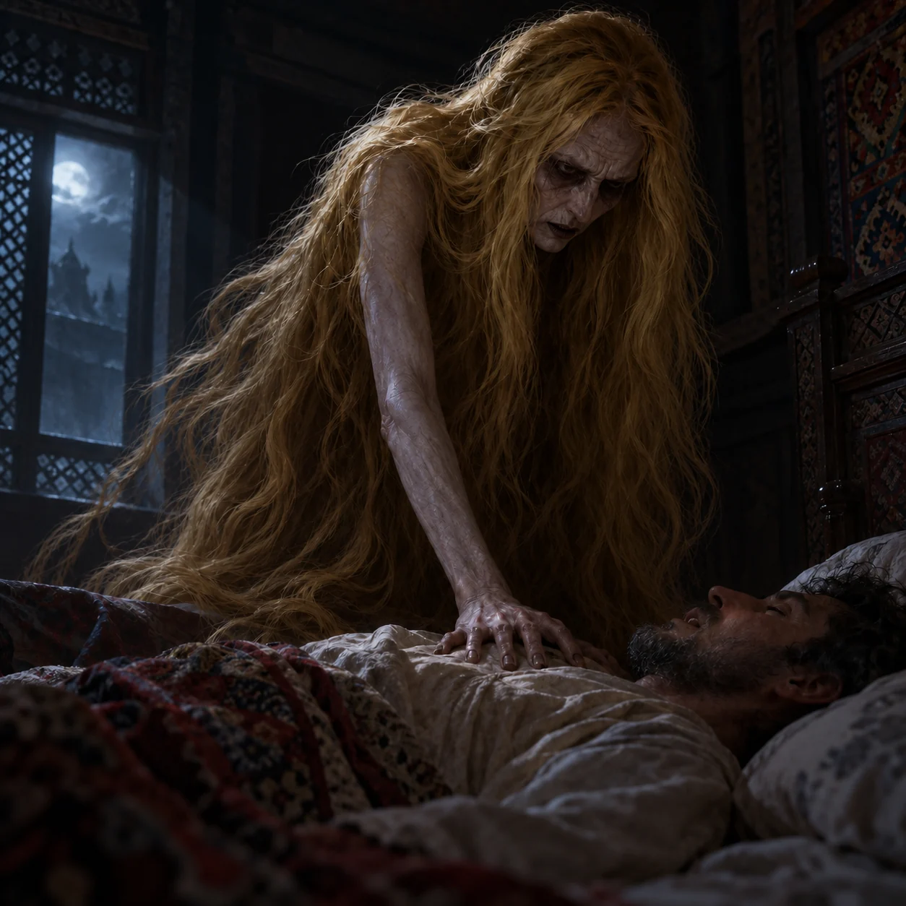
Turkic/Caucasus ugly female nightmare spirit with long yellow hair
Aura: Oppressive nightmare presence through gaunt stare, looming posture, chest pressing, deep chamber shadows and natural moonlight.
Audit ciri dan sumber
- Preserve aged female human anatomy, long yellow hair and pressing hand on adult sleeper chest.
- Preserve modest hair/shadow concealment and existing pose/counts/scene.
- No emitted generic aura, crimson fog or outline; presence from natural moonlight/chamber shadow.
Actually inspected native edit: all crimson emitted fog removed, gaunt female long yellow hair and pressing hand retained, modest concealment unchanged. Natural moonlight/deep shadows now create nightmare presence.
Review sumberUse case: lighting-weather. Input image is EDIT TARGET. Edit only atmosphere/lighting: REMOVE all red luminous fog, emitted crimson vapor, halo, neon outline, glowing particles and energy swirls around Al Basty. Replace removed vapor with ordinary deep chamber shadows and restrained natural window moonlight, so terror comes from looming posture, gaunt stare and suffocating composition. Preserve EXACT aged adult female humanoid, very long loose yellow hair, readable pressing hand on clothed adult sleeper's chest, facial identity, human anatomy/counts, chamber/bed/camera and painterly detail. Maintain fully modest hair/shadow concealment of chest/pelvis, nonsexual framing; do not reveal any skin concealed before. No body self-emission, coloured magical fog, rings or particles. Natural pale skin under window light only; keep square composition.
Slavic dragon
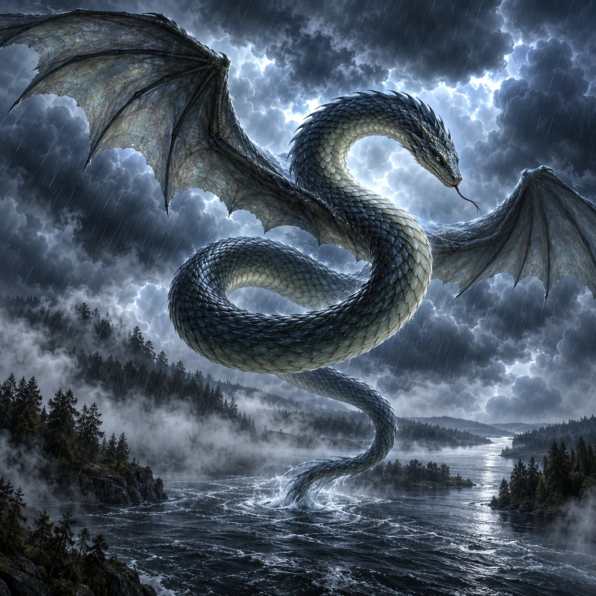
General single-headed winged-serpent dragon form, excluding regional multihead and human variants
Aura: Majesty through massive winged-serpent silhouette and violent storm over lake.
Audit ciri dan sumber
- one snake-like head
- long serpentine body and paired wings
- Preserve existing source anatomy, count, scale and modest framing.
- Character presence through pose, composition, atmosphere and natural scene lighting; no generic emitted aura.
- Storm/weather and tail lake siphoning supported c05/c09; no emitted aura.
Actually inspected full original with view_image. Rain/clouds and natural lightning lighting, no emitted body envelope observed; source weather/water mastery and lake-siphoning tail support selected scene.
Review sumberUse case: stylized-concept. ONE square premium painterly naturalistic mythology encyclopedia illustration: Slavic dragon, selecting the general flying winged SERPENT form, ONE reptilian snake head, long scaled serpentine body and two broad membranous wings, no legs. The serpent coils above a dark Slavic river, its tail dipping into the water amid swirling mist, storm clouds and rain. Readable entire silhouette with generous margins, detailed scales, physically convincing wings. Mythical aura of weather and water mastery suggested through storm turbulence and a subtle cold rim glow, awe and looming danger. The atmosphere and glow are artistic interpretation rather than extra anatomical claims. No human form, extra heads, arms, fire, crown, armor, text, watermark, border or collage.
Wawel Dragon
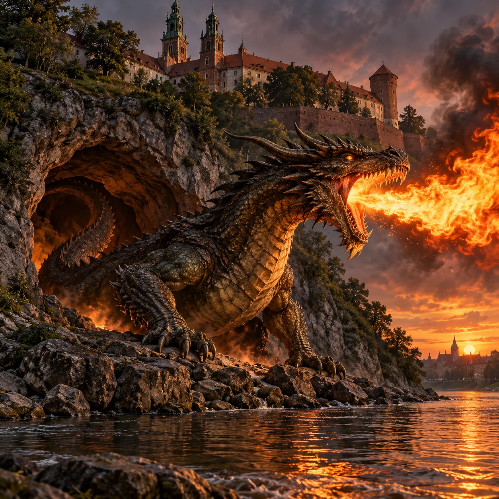
Cave-dwelling Wawel dragon in documented fire-breathing chronicle episode; reptilian limb/color specifics are editorial visualization, not textual certainty.
Aura: Terror through cave emergence, jaws, low viewpoint and physical flame illumination.
Audit ciri dan sumber
- One large reptilian dragon
- Wawel cave beside Vistula and castle hill
- Fire from mouth
- Preserve existing source anatomy, count, scale and modest framing.
- Character presence through pose, composition, atmosphere and natural scene lighting; no generic emitted aura.
- Mouth fire permitted c08 Długosz pre-death variant; natural combustion smoke/sparks only.
Actually inspected full original with view_image. Observed mouth fire and ordinary smoke physically linked to breath, no generic halo or energy ribbons. Fire breathing explicitly sourced in c08.
Review sumberUse case: stylized-concept. Square premium painterly naturalistic mythological encyclopedia illustration. One WAWEL DRAGON, the cattle-devouring Polish cave dragon: a huge reptilian dragon emerging from Smocza Jama beneath Wawel Hill on the Vistula, medieval castle high above, recognizable riverbank setting. Coherent heavy scaled body, long serpentine tail, threatening maw and fire spilling from its mouth in the documented fire-breathing chronicle episode; this is an artistic dragon morphology, not a claim of historically specified color or limb count. Towering over cave entrance and riverbank rocks, body fits natural cave landscape, entire principal silhouette clear. Terrifying predatory presence, sulfur-orange firelight, black smoke and uncanny heat shimmer as mythology aura. Fine scales, dark wet stone, dramatic cinematic dusk. No people being harmed, no gore, no text, no watermark, no multiple dragons.
Susulu (mythology)
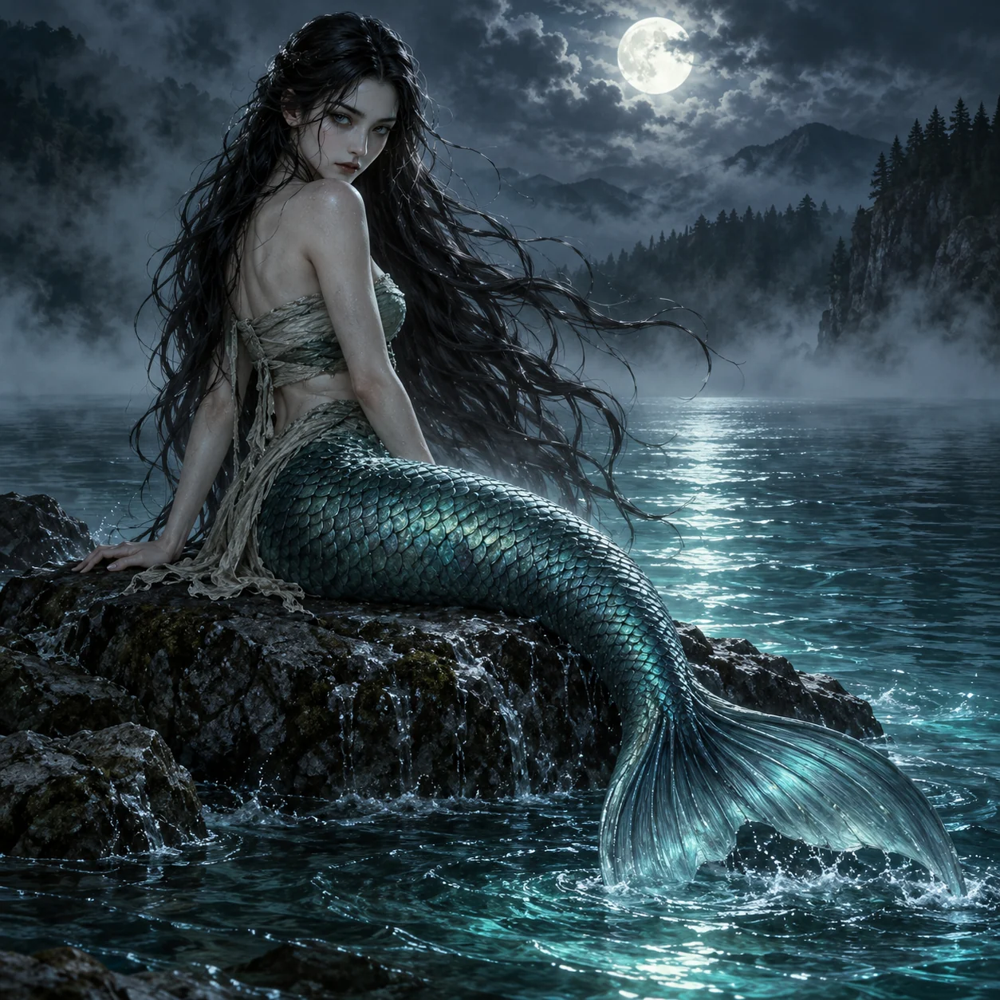
Turkic Susulu in half-woman half-fish aquatic form
Aura: Unlucky-omen presence through direct gaze, moonlight, wet scales and secluded dark lake.
Audit ciri dan sumber
- Adult female human upper body with long flowing hair
- One continuous fish tail with fin; no human legs
- Preserve existing source anatomy, count, scale and modest framing.
- Character presence through pose, composition, atmosphere and natural scene lighting; no generic emitted aura.
- none
Actually inspected full original with view_image. Observed natural moonlit water mist and reflective tail scales, no detached neon halo or energy ribbons.
Review sumberUse case: illustration-story. Create ONE square high-quality painterly mythology encyclopedia illustration of Turkic SUSULU, adult female upper body and a single fish tail, with very long flowing dark hair. Her chest is modestly covered by opaque woven cloth; this artistic modesty treatment leaves shoulders and arms clear. Full fish tail curves above a moonlit freshwater lake rock, ending in a clearly visible tail fin; no human legs. An uncanny ominous gaze, ghostly turquoise reflected water light, pale supernatural rim glow and thick cold lake mist create the unsettling aura of a disaster-foretelling water spirit. Beautiful yet dangerous, frightening night atmosphere. Keep all identifying anatomy inside the frame, richly detailed scales and rippling water, distant shore silhouette. Follow only half-woman half-fish variant. No horns, wings, extra tails, invented fangs, text, border, watermark, blood or nudity.
Triple-headed eagle
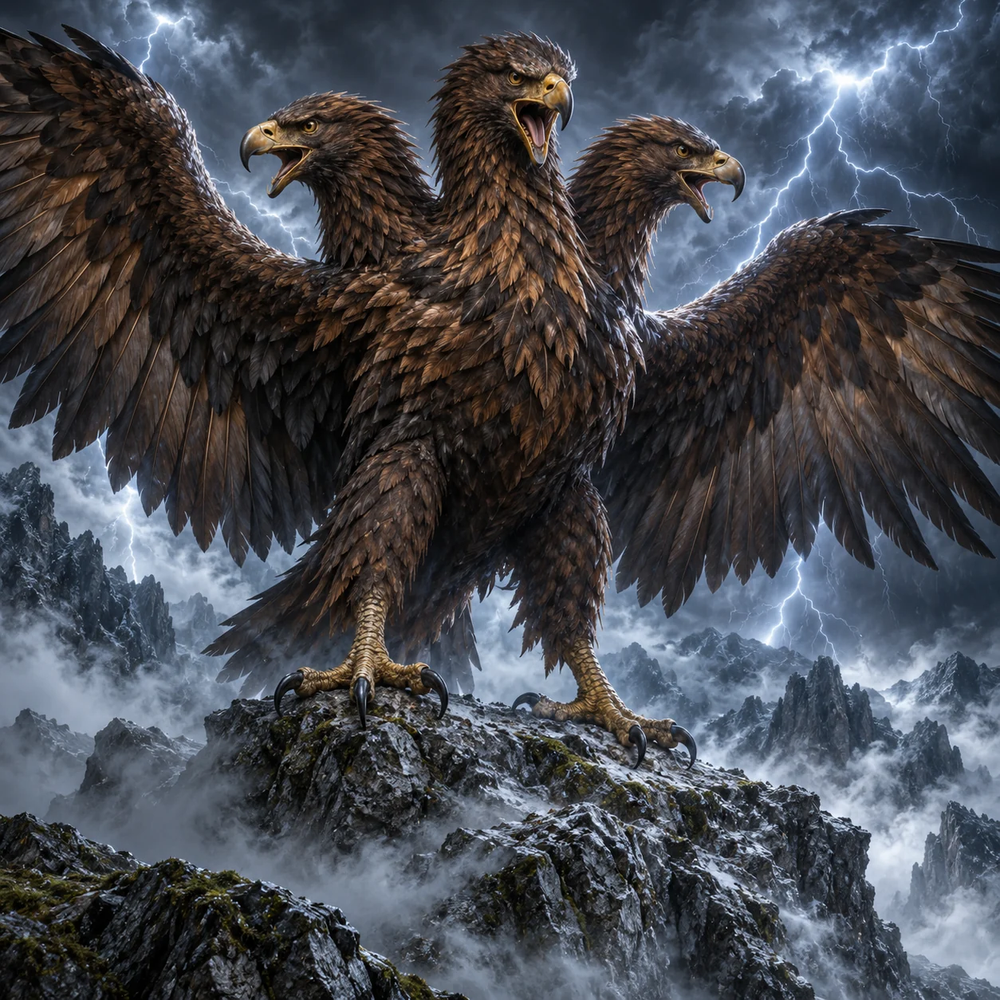
Chechen monstrous three-headed eagle, excluding twelve-wing Ezra variant
Aura: Monstrous presence through three screaming heads, spread wings, towering low-angle mountain perch.
Audit ciri dan sumber
- exactly three eagle heads on one body
- two feathered wings and two taloned legs
- no heraldic text, no twelve wings
- Preserve existing source anatomy, count, scale and modest framing.
- Character presence through pose, composition, atmosphere and natural scene lighting; no generic emitted aura.
- none; background weather is natural atmospheric composition, not eagle magic.
Actually inspected full original with view_image. Observed three-headed eagle in distant lightning clouds, lighting is natural storm background with no emitted body outline or halo.
Review sumberUse case: stylized-concept. ONE square finely detailed painterly naturalistic folklore encyclopedia illustration of the TRIPLE-HEADED EAGLE, selecting the monstrous Chechen fairy-tale foe, not Ezra's twelve-wing dream variant. Exactly THREE distinct fierce eagle heads on three short necks attached to ONE eagle body, TWO broad feathered wings and TWO taloned legs. Entire bird readable, wings opening on a wind-beaten mountain crag under a violent night storm. Eagle beaks, brown-black layered feathers, three predatory gazes. Terrifying mythical predator aura, charged silver mist and cold lightning rim light are artistic atmospheric treatment. No human head, lion body, crowns, heraldic shield, extra heads, twelve wings, prey, gore, lettering, watermark, border or collage.
Korbolko
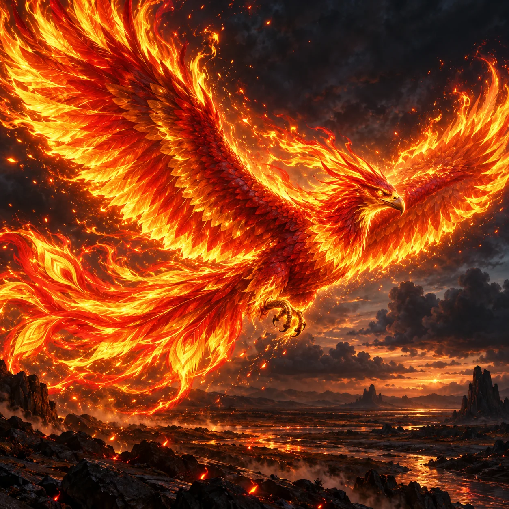
Documented large red-and-yellow luminous fire-bird Korbolko; surrounding flame and landscape are artistic staging.
Aura: Majesty through gigantic spread fire-feather wings and source fiery plumage illuminating landscape.
Audit ciri dan sumber
- One avian fire bird
- Two wings and bird body
- Preserve existing source anatomy, count, scale and modest framing.
- Character presence through pose, composition, atmosphere and natural scene lighting; no generic emitted aura.
- Source c01/c03/c07 explicitly fiery bird and bright red/yellow emitting plumage; combustion glow/embers allowed.
Actually inspected full original with view_image. Observed bird itself consists of red-yellow fire/plumage with combustion embers, exactly matching source made-of-fire bird and luminous feathers; no detached generic envelope.
Review sumberUse case: stylized-concept. Square premium painterly naturalistic mythology artwork. One KORBOLKO, the Turkic bird made of fire that brought fire to earth. A large magnificent bird, coherent fully avian body with two feathered wings, hooked bird beak, two avian feet and splendid tail plumage, flying low above dark ground. Feathers themselves burn and glow RED AND YELLOW like a bright bonfire, majestic red-and-gold plumage, luminous tail feather, clearly a fire bird rather than ordinary animal lit orange. Dominant bright supernatural fire aura with drifting sparks, radiant air and dancing flame outlines, dark atmospheric landscape makes light legible. Avian silhouette readable, detailed feathers, beautiful mythological benevolence and elemental power. Body large within composition but no invented mountain-sized claim. No human face, no human arms, no horns, no extra heads, no phoenix resurrection scene, no text, no watermark.
Sockburn Worm
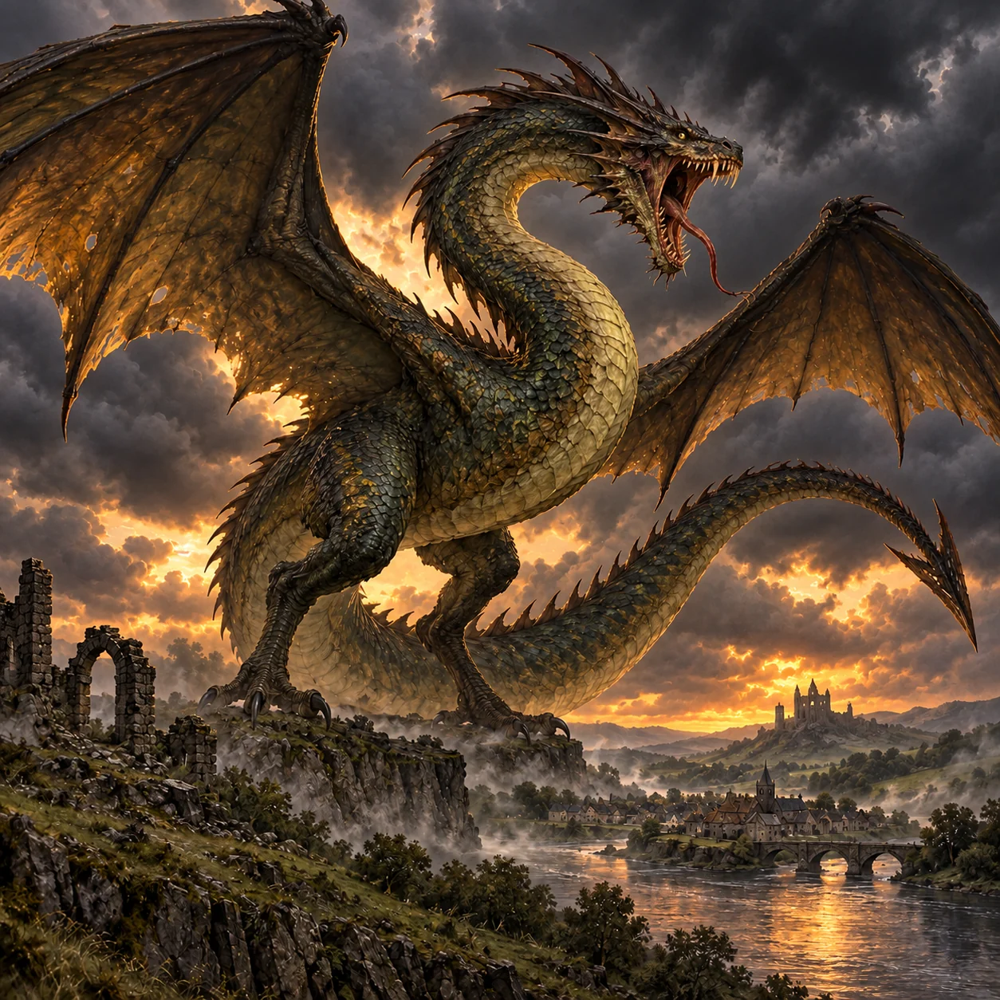
Sockburn Worm as a two-legged winged wyvern with arrow-tipped tail
Aura: Ferocious wyvern presence through massive silhouette, roaring jaws and natural storm sunset.
Audit ciri dan sumber
- Exactly two hind legs and two wings, no front legs
- Arrow-tipped long serpent tail
- Colossal fearsome scale against tiny River Tees village
- Preserve exact original source anatomy, limb/head count, scale, identity and modest framing.
- No generic emitted halo, neon outline, colored body fog, energy ribbons or magical particles.
- none
Actually inspected native edited output. Targeted generic effects removed; source anatomy, pose, scale and composition retained. Ferocious wyvern presence through massive silhouette, roaring jaws and natural storm sunset.
Review sumberUse case: lighting-weather. Input image is EDIT TARGET. Targeted atmosphere edit ONLY. Remove luminous green mouth vapor, green glowing eye and all emitted mist, replacing with ordinary dark storm clouds and natural sunset reflections. Keep exactly two legs, two wings, arrow-tipped tail, menacing open jaws, giant scale/landscape. Keep composition, camera, source anatomy/counts/scale, identity, materials, pose and painterly rendering exact. No generic magical halo, neon outline, emitted energy ribbons, colored luminous fog, sparkling particles. No new anatomy or figures, no text/watermark.
Rusalka
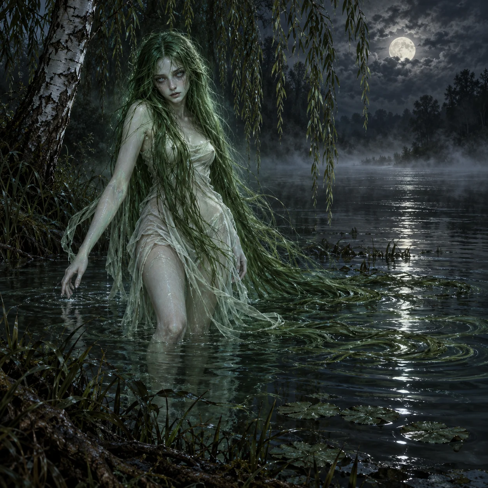
Legged drowned-woman water spirit with loose green hair, excluding fish-tail variant
Aura: Dangerous water revenant presence through stare, long loose hair, still water and moonlit willow shadow.
Audit ciri dan sumber
- adult woman water spirit with two legs, not fish tail
- long loose green hair
- Preserve source anatomy, counts, scale and modest framing.
- Character presence through pose, composition, natural lighting; no generic emitted aura.
Actually inspected full original. Observed pale maiden with green loose hair, natural lake fog and moonlight only; no emitted magical fog/ribbons/particles.
Review sumberUse case: stylized-concept. ONE square detailed painterly naturalistic mythology encyclopedia illustration of RUSALKA, choosing the documented Slavic drowned-woman spirit with LEGS rather than a fish tail. One adult female apparition emerges knee-deep at a dark riverbank below willow and birch branches. Extremely long loose GREEN hair streams across the water like entangling strands, pallid eerily luminous skin, sorrowful predatory stare. Keep source-faithful human anatomy, subtly uncanny glassy eyes and translucent edges instead of inventing monster parts. Modest pale draped fabric and hair cover chest and pelvis. Both legs readable through water; full figure with margins. Truly frightening still-water night atmosphere, green spectral mist and cold ripple aura as artistic interpretation. No victim, nudity, gore, fish tail, horns, claws, wings, extra limbs, crown, text, watermark, border or collage.
Turul

Traditional falcon-form Turul guardian, deliberately excluding modern sword-emblem iconography and eagle alternative.
Aura: Protective majesty through expanded wings, elevated tree-of-life perch, natural sunset backlighting.
Audit ciri dan sumber
- One falcon-form avian guardian
- Spread two feathered wings and bird talons
- No modern sword emblem
- Preserve source anatomy, counts, scale and modest framing.
- Character presence through pose, composition, natural lighting; no generic emitted aura.
Actually inspected full original. Observed falcon on tree branch with feather edges lit by visible sunset sun, no emitted halo or magic particles.
Review sumberUse case: stylized-concept. Square premium painterly naturalistic mythological encyclopedia artwork. ONE TURUL, the Hungarian mythological guardian bird, in the documented FALCON variant. A magnificent large falcon with hooked beak, patterned natural feather plumage, two fully feathered wings spread in a protective arch, two taloned bird feet, alert noble gaze, perched on a high branch above a misty broad Hungarian landscape. Keep coherent wholly avian anatomy, no human face or body. Protective supernatural guardian aura shown as warm luminous mist and subtle radiant feather edges, dreamlike golden dawn streaming around the bird; atmospheric effect is artistic staging, not alleged traditional glowing anatomy. Strong imposing presence without invented giant mountain scale. Crisp feathers, cinematic sky, beautifully rendered falcon silhouette. Do not add sword or modern military emblem, no crowns, no horns, no extra limbs, no text, no watermark.
Xiuhcōātl
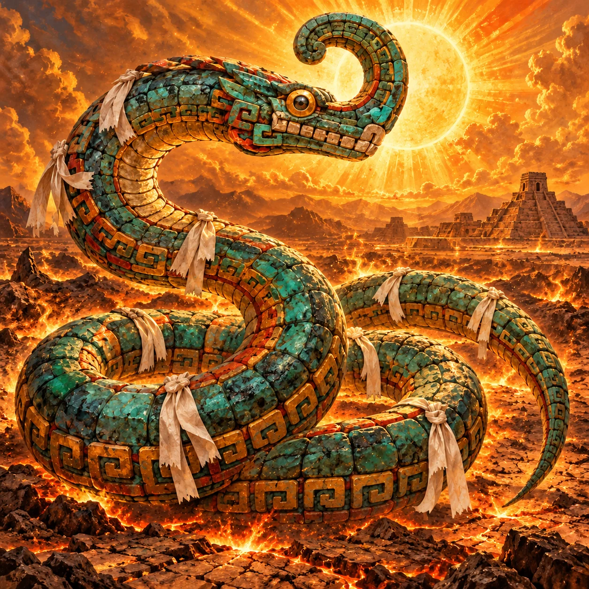
Xiuhcoatl fire serpent with segmented body, sharply back-turned snout and knotted paper strips
Aura: Solar-fire power through carved segmented shape, dry-season terrain, natural sunlight and restrained physical ground flame.
Audit ciri dan sumber
- Legless segmented serpent body
- Sharply upturned and backward-curving snout
- Preserve exact original source anatomy, limb/head count, scale, identity and modest framing.
- No generic emitted halo, neon outline, colored body fog, energy ribbons or magical particles.
- Fire-serpent identity c01/c02 allows restrained warm physical fire imagery, not cyan flame halo.
Actually inspected native edited output. Targeted generic effects removed; source anatomy, pose, scale and composition retained. Solar-fire power through carved segmented shape, dry-season terrain, natural sunlight and restrained physical ground flame.
Review sumberUse case: lighting-weather. Input image is EDIT TARGET. Targeted atmosphere edit ONLY. Remove ALL cyan/turquoise self-emitted flames, glowing outlines and neon loops around body. Preserve exact turquoise segmented body, sharply backward-curled snout and paper bindings, temple/dryland scale. Retain only restrained physical warm orange fire on ground and natural sun illumination from existing setting; serpent identity source fire deity, no cyanmagic envelope. Keep composition, camera, source anatomy/counts/scale, identity, materials, pose and painterly rendering exact. No generic magical halo, neon outline, emitted energy ribbons, colored luminous fog, sparkling particles. No new anatomy or figures, no text/watermark.
El Sombrerón
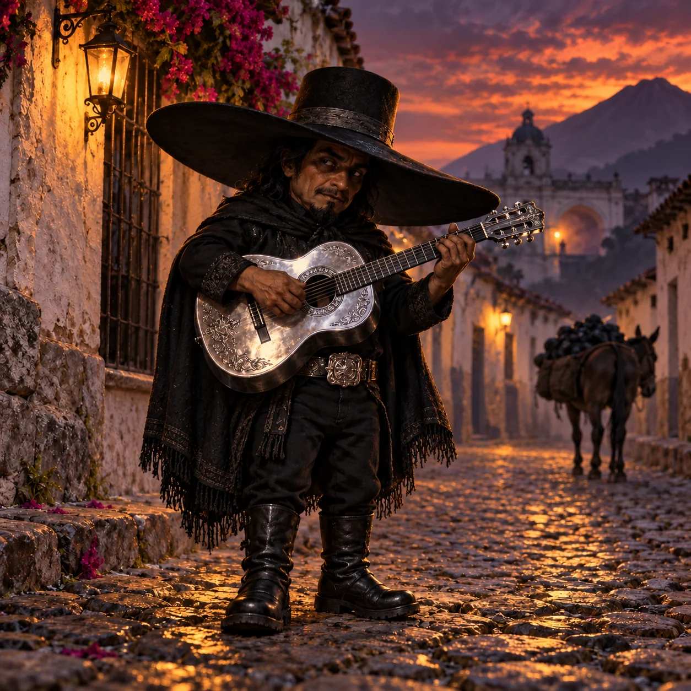
Guatemalan dwarf serenader in oversized black hat
Aura: Unnerving serenader through sidelong gaze, oversized hat, still dusk street and natural lantern light.
Audit ciri dan sumber
- very short dwarf in black with huge black hat
- shining thick belt and noisy-looking boots
- Preserve exact original source anatomy, limb/head count, scale, identity and modest framing.
- No generic emitted halo, neon outline, colored body fog, energy ribbons or magical particles.
- none
Actually inspected native edited output. Targeted generic effects removed; source anatomy, pose, scale and composition retained. Unnerving serenader through sidelong gaze, oversized hat, still dusk street and natural lantern light.
Review sumberUse case: lighting-weather. Input image is EDIT TARGET. Targeted atmosphere edit ONLY. Remove all black emitted smoke swirls and body vapor, restore ordinary clear dusk air, lamp/sunset light and cast shadows. Preserve tiny adult man, giant black hat, black clothes/boots/shiny belt, silver guitar, mules and village. Keep composition, camera, source anatomy/counts/scale, identity, materials, pose and painterly rendering exact. No generic magical halo, neon outline, emitted energy ribbons, colored luminous fog, sparkling particles. No new anatomy or figures, no text/watermark.
Maelor Gawr
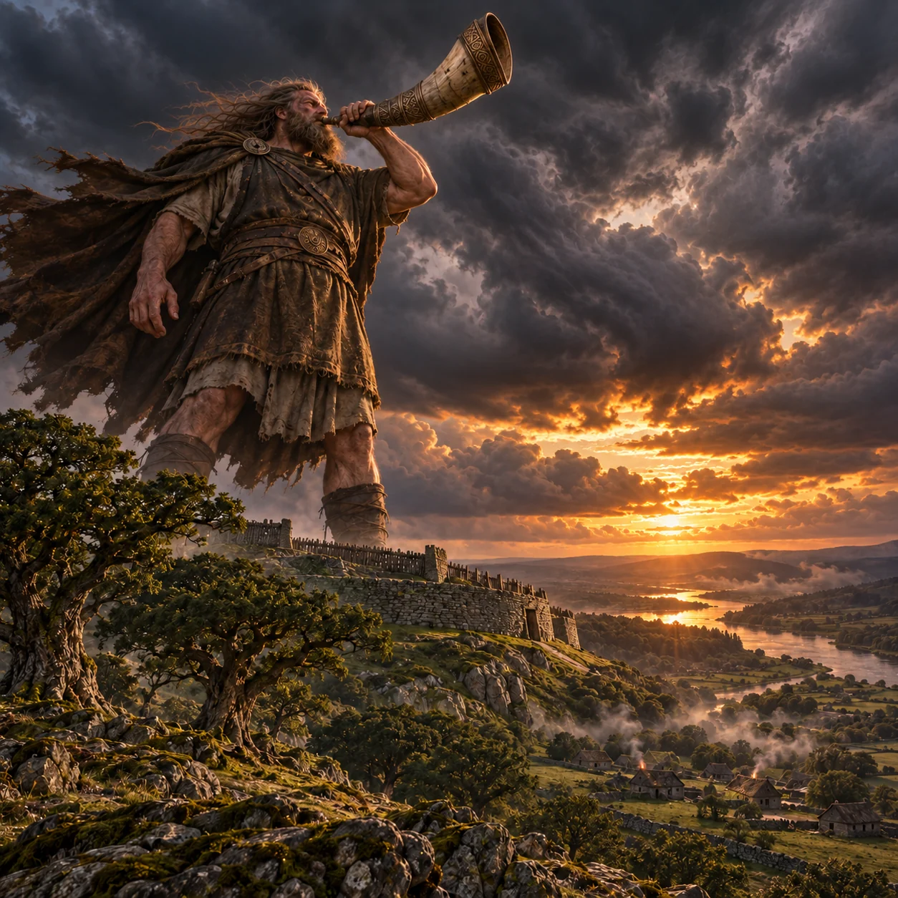
Maelor Gawr as source-attested Welsh giant king sounding his horn; human king appearance and period clothing editorial, exact height unspecified.
Aura: Giant royal presence through huge body, forceful horn posture and stormy natural sunset composition.
Audit ciri dan sumber
- One enormous human male giant king
- Signal horn at mouth
- Hillfort trees and dwellings establish giant scale
- Human anatomy preserved
- Preserve exact original source anatomy, limb/head count, scale, identity and modest framing.
- No generic emitted halo, neon outline, colored body fog, energy ribbons or magical particles.
- Source powerful horn sound c04/c10 retained as invisible sound; no visible magical waves.
Actually inspected native edited output. Targeted generic effects removed; source anatomy, pose, scale and composition retained. Giant royal presence through huge body, forceful horn posture and stormy natural sunset composition.
Review sumberUse case: lighting-weather. Input image is EDIT TARGET. Targeted atmosphere edit ONLY. Remove all luminous rings, spirals and vapor emitted from horn. Represent horn power through forceful blowing posture, wind-blown beard/cloak and ominous natural clouds only, invisible sound. Keep gigantic human king, horn in hand/mouth, landscape fortress scale exactly. Keep composition, camera, source anatomy/counts/scale, identity, materials, pose and painterly rendering exact. No generic magical halo, neon outline, emitted energy ribbons, colored luminous fog, sparkling particles. No new anatomy or figures, no text/watermark.
Nuberu
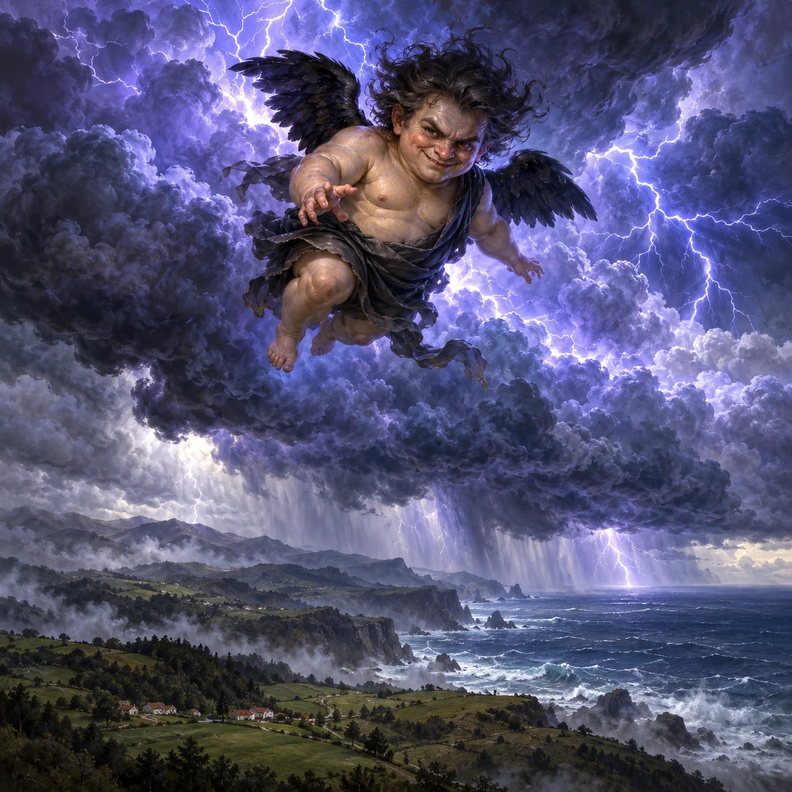
Cantabrian Nuberu as a small chubby weather spirit with little black wings
Aura: Mischievous posture, storm contrast and cloud lightning convey weather-spirit presence.
Audit ciri dan sumber
- Small chubby adult humanlike being with exactly two small black wings
- Retain storm setting as source manifestation; no generic emitted aura
Actually inspected full native original. Cloud lightning belongs to the storm spirit's source identity; the small black-winged body has no surrounding energy envelope.
Review sumberUse case: illustration-story. ONE square detailed painterly mythology encyclopedia illustration of NUBERU in the specifically Cantabrian variant: one SMALL, CHUBBY humanlike male weather spirit with a devilish mischievous grin and TWO LITTLE BLACK WINGS. He hovers amid charged storm clouds above distant tiny fields and the Cantabrian coast. His stout body and short small wings are entirely visible; plain modest dark cloth is an artistic clothing treatment. Powerful violet-blue cloud luminescence, lightning curling through surrounding clouds and ominous storm wind make him unmistakably supernatural. Preserve his little size relative to cloud banks; not a huge muscular demon. Distinct black wings and stout little silhouette, expressive menacing grin, richly painted skin and cloud textures. No horns, animal hooves, long tail, giant bat wings, eyepatch or wolf chariot from different variants. No text, watermark, border, nudity, victims or gore.
Toell the Great
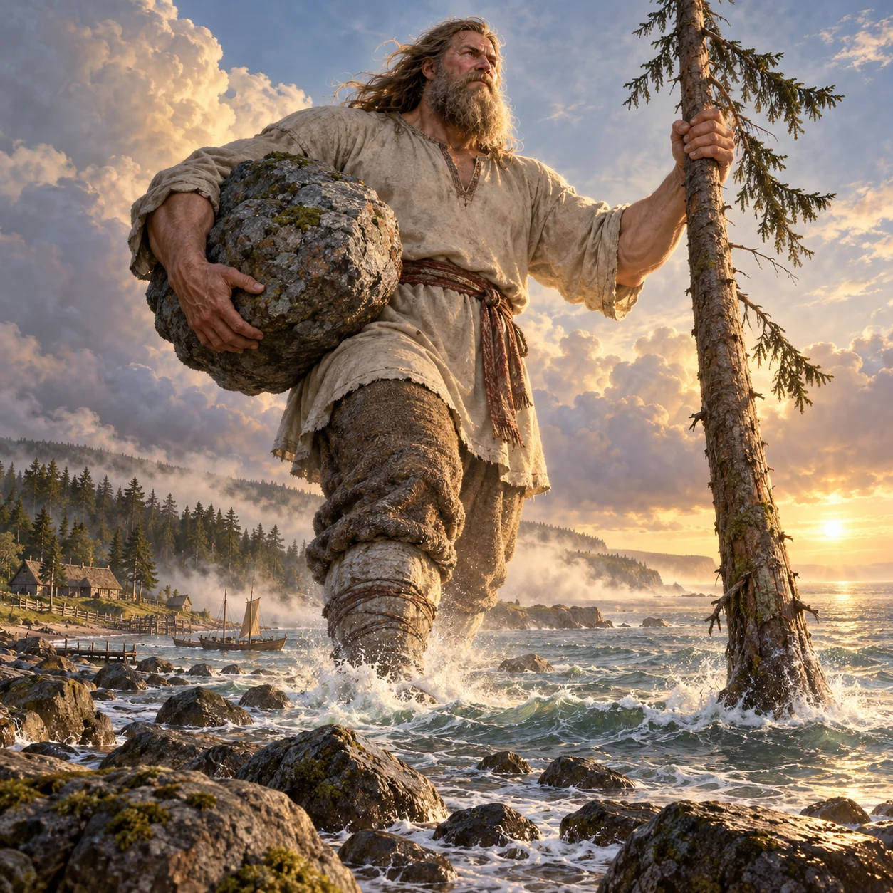
Living giant farmer hero of Saaremaa before beheading
Aura: Monumental human scale, boulder and spruce trunk against tiny coastal buildings and boats.
Audit ciri dan sumber
- Preserve human giant scale, farmer clothes, boulder and spruce trunk
- Natural sunset, ordinary sea spray; no generic emitted aura
Actually inspected full native original. Giant coastal farmer is lit by natural sunset and sea spray, with no luminous ribbons, halo or magical fog.
Review sumberUse case: stylized-concept. ONE square highly detailed painterly naturalistic mythological encyclopedia illustration of SUUR TÕLL / TOELL THE GREAT, living giant hero of Estonia, before his beheading. One ENORMOUS adult male human giant in simple historical Estonian farmer clothes, carrying a massive coastal boulder under one arm and using an entire spruce trunk as walking stick. He wades at the Baltic coast of Saaremaa, tiny farm buildings, ordinary full-size spruce trees and boats far below establish genuinely colossal scale, low broad camera view, full figure and head inside frame. Source-faithful human anatomy, weathered kind but resolute face, no arbitrary monster anatomy. Protective mythological aura expressed in sweeping dawn gold, sea mist and immense cloud scale as artistic atmosphere. No crown, armor, extra limbs, wings, horns, beheading, blood, text, watermark, border or collage.
Vitore
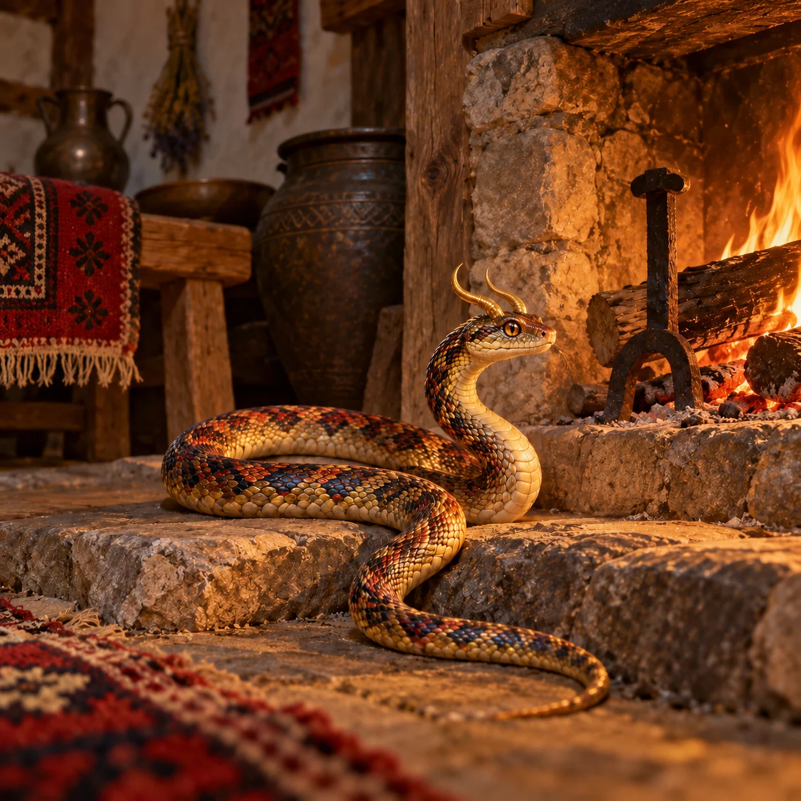
Small colorful benign golden-horned household serpent Vitore; excludes old-woman variant, aura editorial.
Aura: Small benevolent household guardian resting near a warmly lit hearth, with natural flame reflections on colorful scales and gold horns.
Audit ciri dan sumber
- Small legless colorful serpent with golden horns; hearth establishes small scale
- Preserve natural physical fireplace flames and reflections only; no generic emitted aura
Actually inspected edited native. Golden threads and magical dots fully removed; horned small colorful serpent preserved, lit only by physical hearth fire.
Review sumberEdit this exact image of Vitore. Remove every luminous golden energy filament, looping aura strand, magical spark or floating golden particle encircling or emitted by the serpent. Remove supernatural glow from its eyes and body. Preserve the exact small legless colorful serpent, its golden horns, all scale patterns, pose, proportions, expression, hearth stones, rustic domestic room and camera composition. Gold horns should remain reflective gold material, not emit light. Keep the ordinary fireplace flame and natural warm firelight reflected on surfaces, with physical fireplace smoke only if subtle. Convey benevolent mythological household-guardian presence through its poised watchful gaze, intimate small scale, hearth framing and warm natural light. No neon halo, colored luminous fog, magic ribbon, energy envelope or magical particles. Do not introduce limbs, wings, extra heads, new anatomy or text.
Werewolf in Slavic mythology

Slavic volkolak in ordinary quadrupedal wolf form retaining human intelligence
Aura: Alert intelligent stare and low woodland framing with moonlight and ground mist.
Audit ciri dan sumber
- Ordinary four-legged wolf without humanoid limbs
- Natural moonlight and ordinary nonluminous ground mist; no emitted magical aura
Actually inspected full native original. Quadrupedal wolf shows cold moonlit fur and ordinary low woodland mist; no colored emission or luminous energy contour.
Review sumberUse case: illustration-story. ONE square dark painterly folklore encyclopedia illustration of the SLAVIC VOLKOLAK, a werewolf in its traditional WOLF FORM. One fully quadrupedal natural grey wolf, four canine legs and paws, ordinary wolf head and muzzle, fur, one bushy tail; no upright humanlike body. Whole wolf clearly visible with comfortable image margins, standing alert in a shadowed eastern European forest. Its focused unnervingly intelligent expression hints at the human mind retained in this form. Pale silver spectral mist coils close around its paws and silhouette, eerie cold moon rim-light, deep black forest shadows and wind-driven fog create frightening supernatural shapeshifter atmosphere. Keep size comparable to a large natural wolf, not an unsupported mountain-sized beast. Naturalistic painterly fur texture. No human hands, human torso, bat wings, horns, extra tails, victims, blood, text, border or watermark.
Wulver
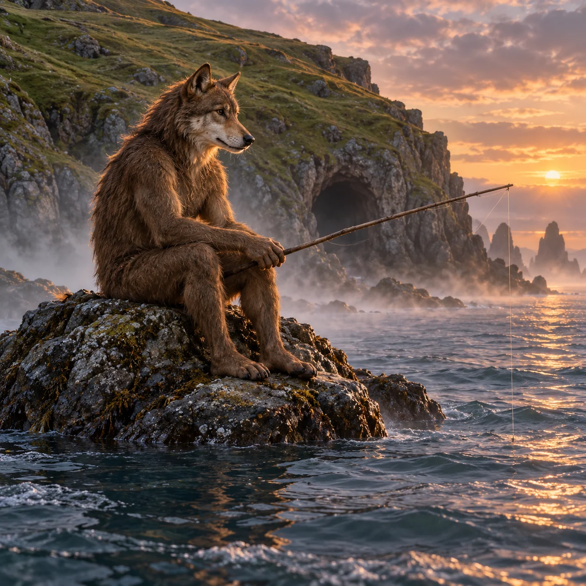
Saxby wolf-headed short-brown-haired fishing humanoid
Aura: Quiet fishing pose, rugged shore and warm natural evening light.
Audit ciri dan sumber
- Preserve wolf head, short brown fur, humanoid fishing pose and rock
- Natural coastal light and spray; no generic emitted aura
Actually inspected full native original. Wolf-headed short-brown-furred fishing humanoid sits on source rock with natural coastal evening light; no emitted aura.
Review sumberUse case: stylized-concept. ONE square premium painterly naturalistic mythology illustration of WULVER, selecting Jessie Saxby's Shetland description. One kindly upright humanoid with a true WOLF HEAD, long wolf muzzle, pointed wolf ears, body entirely covered in SHORT BROWN FUR. Seated fishing with a simple rod on a small rock in deep water below a steep grassy Shetland hill and a modest cave opening. Both arms and legs naturally readable, full silhouette inside square, no aggressive pose. Quiet benevolent mythical aura, delicate silver sea mist and warm dusk rim light as artistic treatment. Anatomy is wolf head on manlike body, not a quadruped wolf or transforming human. No wings, horns, armor, snarling giant fangs, humanoid face, text, watermark, border or collage.
Zmei (Russian folklore)
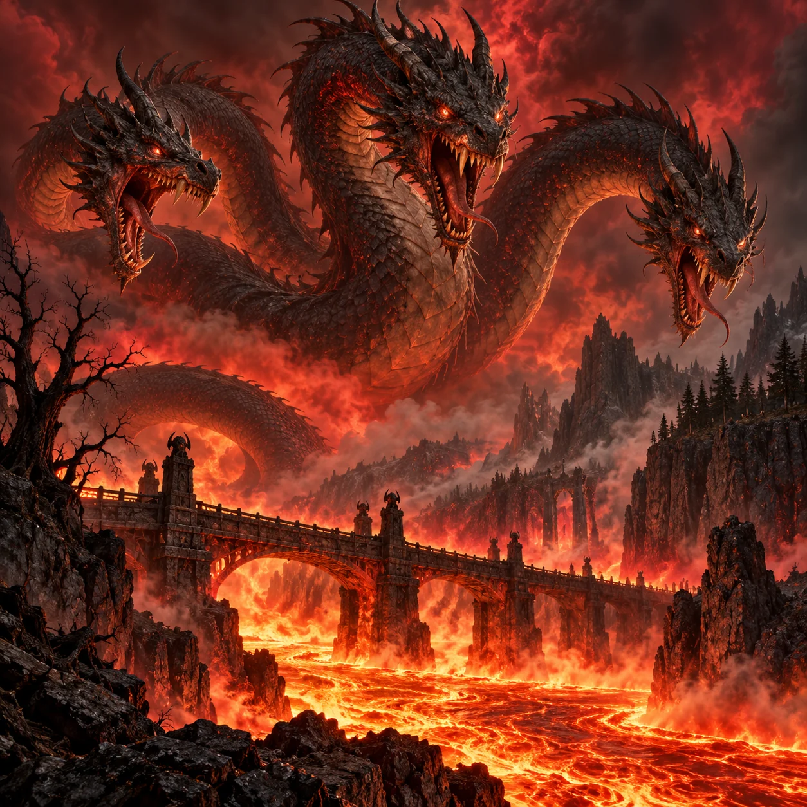
Most common three-headed flying zmei, in documented Gorynych mountain/fiery-river/bridge setting; deliberately no conspicuous wings.
Aura: Threatening three-head pose, huge scale and fiery-river contrast.
Audit ciri dan sumber
- Exactly three dragon heads on one body without conspicuous wings
- Preserve giant scale, mountain bridge and source fiery river
- Retain river fire and physical steam only; no generic emitted aura
Actually inspected full native original. Exactly three heads share one enormous wingless body above the bridge and fiery river; reddish illumination comes from the source setting without energy ribbons.
Review sumberUse case: stylized-concept. Square premium naturalistic painterly terrifying mythology artwork. ONE RUSSIAN ZMEI in the common THREE-HEADED FLYING DRAGON variant, a single immense serpent-dragon body with exactly THREE distinct long necks and THREE dragon heads clearly spaced, no more or less. Flying above a fiery river and Kalinov Bridge at the mountainous border of the realm of the dead; bridge, trees and mountain slopes convey massive size. A single shared coiling scaled torso and tail, coherent dragon anatomy, float without conspicuous wings because wings are rarely mentioned in these tales; no need to invent wings. Predatory terrifying three heads stare down, huge jaws, dark scales editorial texture. Fiery riverlight from below, smoke and sinister red supernatural fog as mythic aura. Entire three-head silhouette readable, detailed dramatic environment, formidable enormous presence. No human captives, no gore, no crowns, no text, no watermark, no detached heads or second dragon.
Bannik
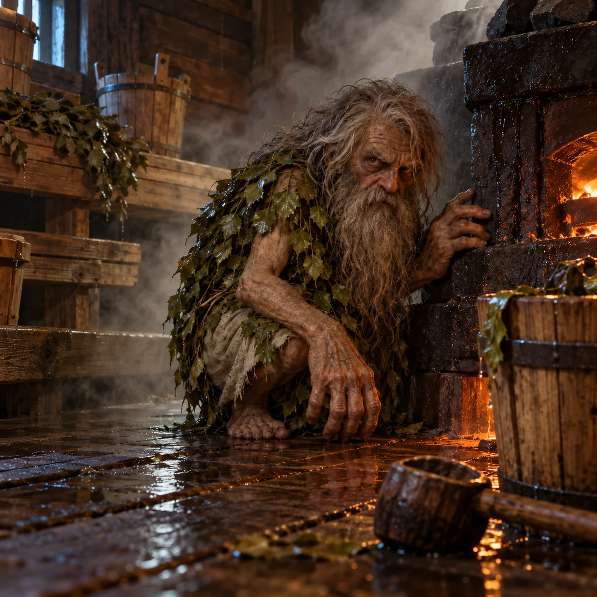
Small elderly Bannik with long beard, birch leaves and large hands in Slavic bathhouse
Aura: Mischievous menace through narrowed stare, crouched posture, oversized hands and contrast of stove firelight with shadowy bathhouse.
Audit ciri dan sumber
- Small elderly male spirit with long hair and beard
- Birch leaves covering body, large hands
- Natural colorless bath steam and physical stove fire; no emitted green eyes or magical vapor
Actually inspected revised native output: same crouching old man, beard, large hands, birch leaves and modest body covering; ordinary dark eyes and colorless steam replace green glow. Stove fire and window reflections only.
Review sumberUse case: lighting-weather. Input image is EDIT TARGET. Change ONLY unsupported magical lighting: remove the bright self-emitting green eyes and any luminous green vapor from this Bannik illustration. Make his eyes ordinary dark natural human eyes with tiny reflected stove/window highlights. Steam should remain ordinary colorless bath steam, visible only through the warm stove and cool window light. Preserve exactly same small elderly male, long tangled hair and beard, unusually large hands, birch leaf covering, crouched posture, facial identity, anatomy, camera, square framing, bathhouse and stove. Preserve opaque modest coverings; no nudity. No emitted aura, neon outline, magical particles, text or watermark. Keep painterly naturalistic quality and intimidating stare through shadows and expression.
Dormarch
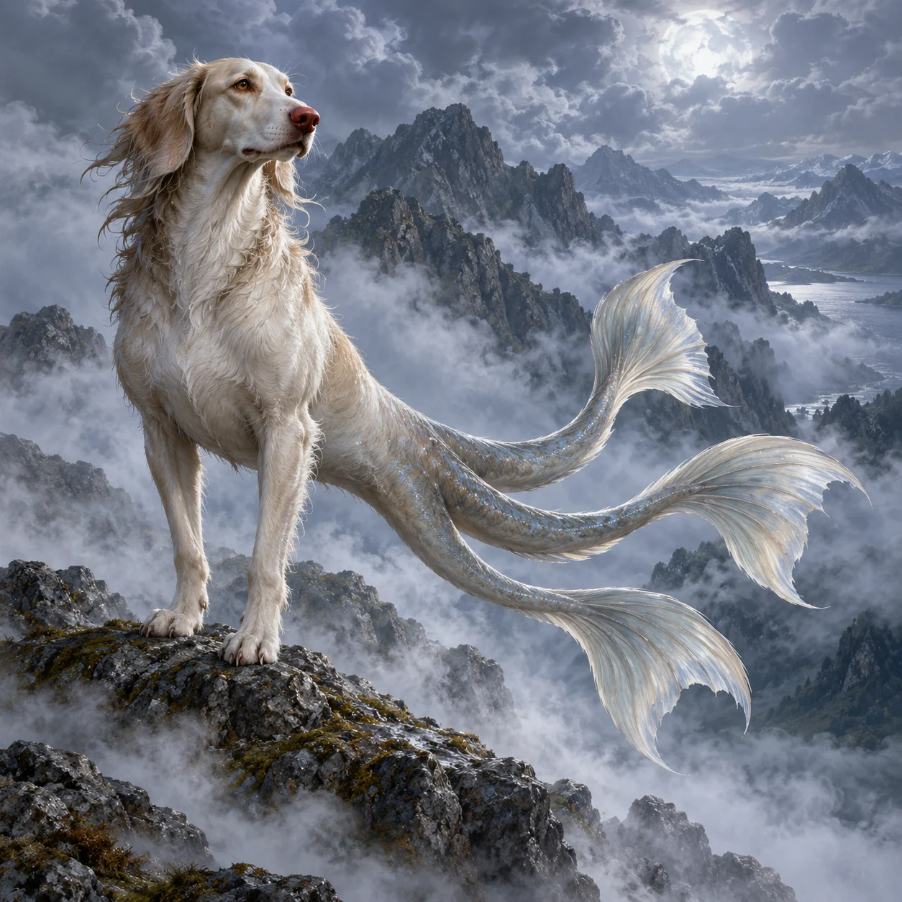
Single-headed two-front-legged hound with three fish-like tails
Aura: Regal alert gaze and uncanny three-tail silhouette above distant mountain clouds.
Audit ciri dan sumber
- Single hound head, ruddy nose, exactly two front legs and three fishlike fan tails
- Retain source mountain-cloud habitat; natural moonlight only, no generic emitted aura
Actually inspected full native original. Single-headed ruddy-nosed hound has two forelegs and three distinct fanlike fish tails, naturally lit above mountain clouds. No energy envelope or luminous particles.
Review sumberUse case: stylized-concept. ONE square meticulous painterly naturalistic mythology illustration of DORMARCH, Welsh hound of Annwn. Show exact strange anatomy clearly: ONE handsome canine HEAD with RUDDY RED NOSE, a rounded canine chest, exactly TWO FRONT LEGS, NO hind legs; the chest narrows quickly into a slender rear body that forks into exactly THREE separate FISH-LIKE TAILS, each fan-ended, all three separated and visible. Hound rides through silver clouds haunting rugged Welsh mountain peaks. Full creature comfortably inside frame, pale natural canine coat chosen artistically. Ominous otherworldly soul-guide aura in cold cloudlight and drifting mist, not bodily fire. No owner, corpse, three heads, fourth tail, hind legs, wings, extra limbs, armor, text, watermark, border or collage.
Finfolk
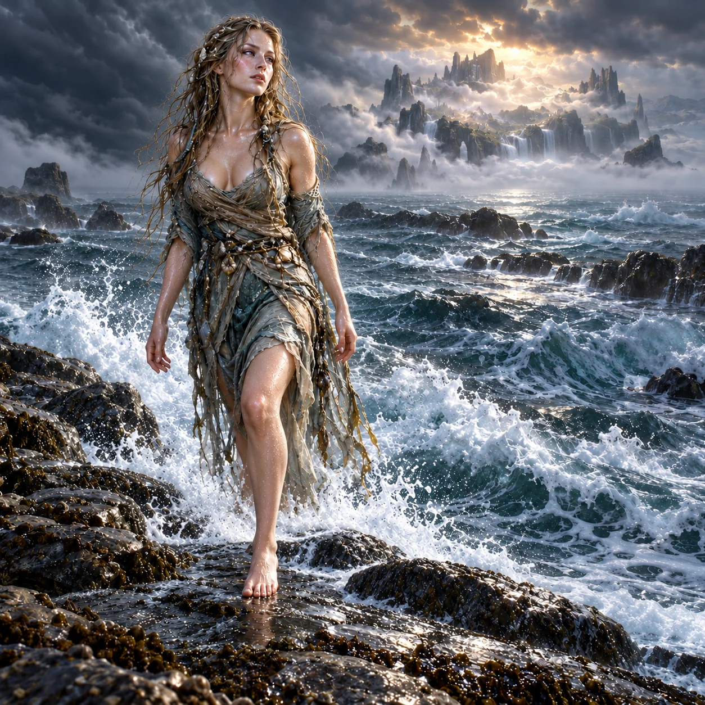
Adult female Finfolk after documented tail-to-legs maturity, amphibious shore form; clothes and pearly aura editorial.
Aura: Uncanny seaward gaze, adult walking posture, crashing waves and natural storm lighting.
Audit ciri dan sumber
- One adult amphibious female with two human legs and existing modest clothing
- Retain rocky Orkney shore and fog-hidden distant island
- No luminous body wrapping, magical motes or ground energy loops
Actually inspected native edited image: cyan loops and particles gone, same adult identity, pose, two legs, clothing coverage and island fog preserved.
Review sumberUse case: precise-object-edit. Edit target: supplied Finfolk artwork. Remove only the cyan magical ribbons circling the woman, luminous dots and floating glowing bubbles, glitter painted on skin, cyan body emission and ground energy loops. Preserve the same adult female face, wet hair, clothing and coverage, walking pose, two human legs, anatomy, scale, composition, crashing ordinary sea waves, Orkney rocks and fog-hidden island. The accepted mythology supports amphibious sea people and an island hidden in magical fog; retain distant island fog but no emitted power around the woman. Create uncanny presence with gaze, seaward posture, dramatic natural storm light and ordinary sea spray. No new objects, characters, magic, text or watermark.
Lutin

Quebec lutin in completely white domestic cat form
Aura: Poised household presence through alert gaze, fireplace warmth and quiet moonlit room.
Audit ciri dan sumber
- Completely white domestic cat
- Natural four-legged feline anatomy and one tail
- Same pose, scale, framing and household setting
- No generic emitted aura
Inspected native output: completely white cat, four legs and one tail preserved, clean fur without blue wrapping or particles; ordinary fireplace and moonlight retained.
Review sumberUse case: precise-object-edit. Edit this supplied mythology artwork: remove all emitted blue aura ribbons, glowing neon body outline and magical particles from the white cat. Preserve exactly this completely white domestic cat, natural feline anatomy with four legs and one tail, pose, size, face, fireplace room, moonlit window, framing and painterly detail. Restore ordinary white fur and floor shadows. Presence comes from poised alert gaze, warm real fireplace light, cool natural moonlight and the quiet room. No magical wrapping, new objects, text or watermark.
Merfolk
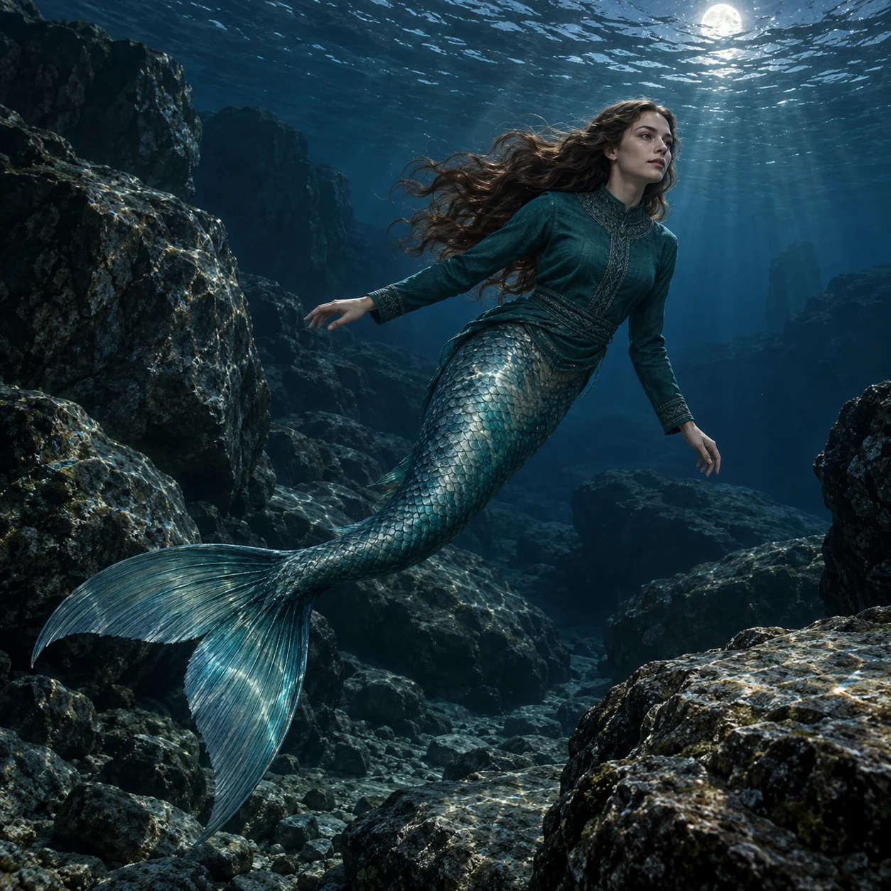
Generic adult female half-human half-fish mermaid
Aura: Aquatic wonder through flowing hair, poised swimming silhouette, watchful expression and moonlight filtered through secluded water.
Audit ciri dan sumber
- Adult female human upper half fused seamlessly with single fish tail
- No human legs, full split tail fin visible
- Opaque editorial tunic covers human torso
- Natural underwater moonlight; no emitted particles or aura
Actually inspected replacement native output: one adult woman in opaque long-sleeved tunic, two arms, smoothly fused single scaled fish tail and full split fin, no legs; submerged rocks and natural surface moonlight only, no glowing particles.
Review sumberUse case: stylized-concept. Create a square premium painterly naturalistic mythology encyclopedia illustration of one MERMAID: adult woman upper half joined smoothly to ONE long fish tail ending in a clearly visible broad split tail fin, no human legs. She wears an opaque modest high-neck long-sleeved dark turquoise woven tunic covering her entire human torso; this clothing is editorial modesty treatment. Long flowing hair, calm watchful adult face. Natural normal-sized aquatic being swimming among submerged rocks in a clear deep lake or sea. Full figure and fin visible with generous margins. Natural moonlight filtered through surface water creates soft silver-blue caustic reflections on textured scales, deep shadowed rocks. Character presence through elegant swimming pose, focused gaze and secluded aquatic composition. Absolutely no magical aura, emitted light, glitter, star particles, neon outlines, luminous ribbons, invented horns/wings, text, watermark or border.
Ravana
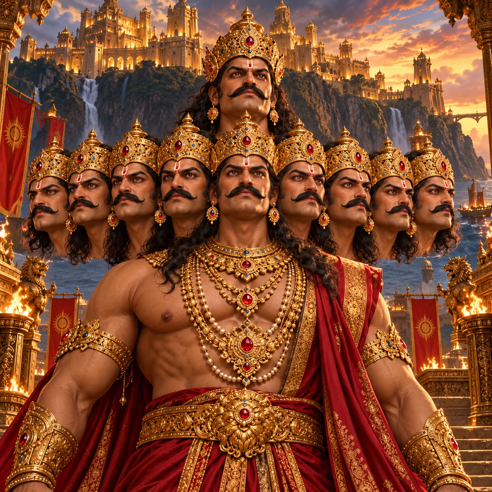
Documented ten-headed Ravana rakshasa king; regal costume and palace/aura artistic, arms framed out to avoid unsupported limb-count claim.
Aura: Ten stern faces, imposing royal framing, gold regalia and ordinary sunset/torchlight.
Audit ciri dan sumber
- Exactly ten human heads: nine below, one above
- One shared royal torso and same Lanka setting
- No red energy ribbons or emitted aura
Native edited output individually inspected. Counted ten crowned heads, original torso/pose retained, red light ribbons gone; actual torch flames retained.
Review sumberUse case: precise-object-edit. Edit this Ravana artwork only to remove unsupported crimson energy ribbons, glowing body envelope and magical light motes. Preserve EXACTLY ten human heads: nine in the lower horizontal row plus one above, their faces, crowns, positions, one shared royal torso, body scale, pose, jewelry, red drape and coverage, Lanka palace, sunset and actual torch flames. No addition or deletion of heads or limbs. Majesty and intimidating presence come from ten stern gazes, imposing framing, regal costume and ordinary warm sunset/torchlight. Restore natural skin and architecture where light trails vanish; no alternate magical effects, text or watermark.
Sirin
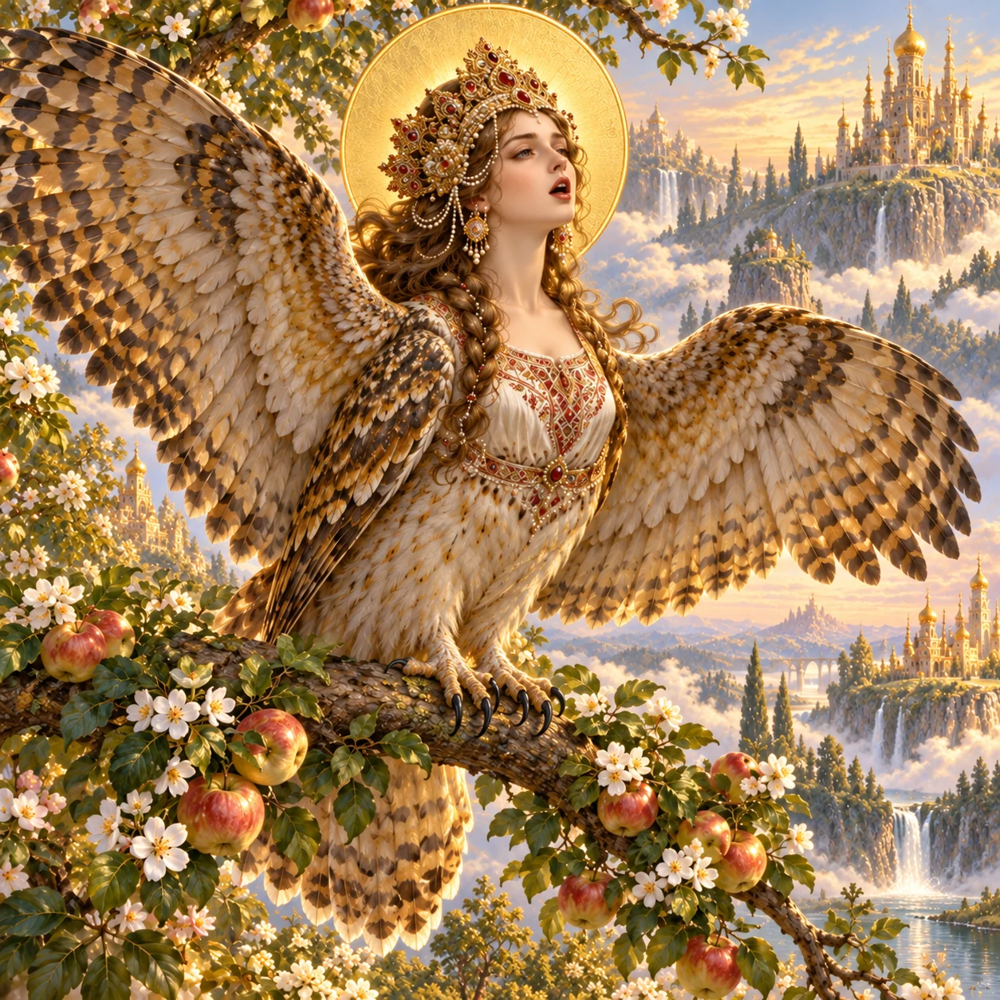
Sirin with beautiful woman's head and modestly clothed breast on an owl body, crown and nimbus
Aura: Regal prophetic singing presence through open beak-mouth expression, poised wings and sunlight.
Audit ciri dan sumber
- Woman head and modest clothed breast fused to owl body
- Two feathered wings and two bird feet
- Crown and restrained nimbus
- No emitted ribbons or magic glitter
Native output inspected: ribbons removed, plain iconographic gold nimbus and crown retained; modest woman-owl hybrid with two wings and two bird feet, perch and landscape preserved.
Review sumberUse case: precise-object-edit. Remove ONLY the swirling golden energy ribbons and magical glitter around this Sirin and through the background. Keep source-attested crown and a restrained plain circular iconographic nimbus behind her head, but simplify any magical rune-like marks into an unlettered subtle gold disk. Preserve SAME woman's head and modestly clothed breast fused to owl body, two owl wings and two bird feet, perched pose, scale, face, jewelry, coverage, branch, composition and landscape. Warm natural sunlight on feathers and an expressive singing face carry regal prophetic presence. No body aura, neon edge, airborne magic or new anatomy; no text or watermark.
Strzyga
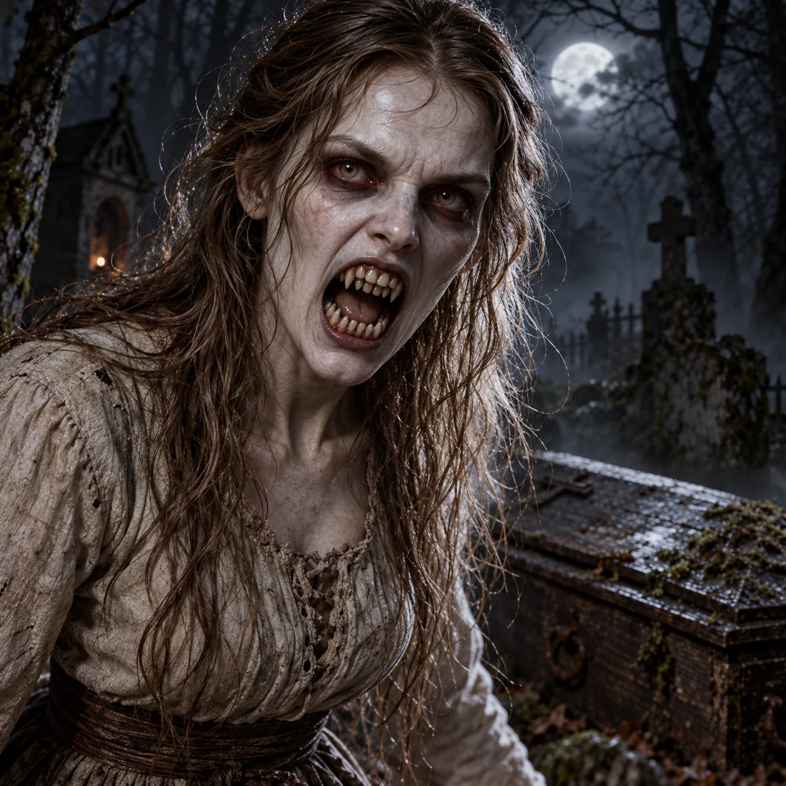
Silesian female undead demon with two visible rows of teeth
Aura: Threatening close stare, bared double dentition and naturally moonlit cemetery.
Audit ciri dan sumber
- Adult female humanlike form, visible double tooth rows and existing modest clothing
- Retain natural moonlit cemetery horror; no emitted magical aura
Actually inspected full native original. Adult clothed female revenant displays the source double row of teeth; moonlit cemetery and confrontational framing contain no generic light envelope.
Review sumberUse case: precise-object-edit. Edit this STRZYGA mythology illustration only to make the defining Silesian DOUBLE DENTITION clear. Preserve this adult female revenant, pale face, modest worn dress, wooded graveyard, coffin and terrifying mist. Bring her head and upper body closer to camera so face takes at least one third of frame. Mouth open wide enough to show TWO NESTED PARALLEL ROWS OF TEETH on the upper jaw and corresponding duplicated lower teeth, the second row sitting immediately behind the front teeth, rather than ordinary upper/lower dentition. Non-graphic supernatural anatomy, no blood, wounds or gore. Keep source-faithful humanlike body, one head, two arms, no owl parts or wings; no text, watermark or border. Cold spectral aura remains artistic atmosphere.
Vanapagan
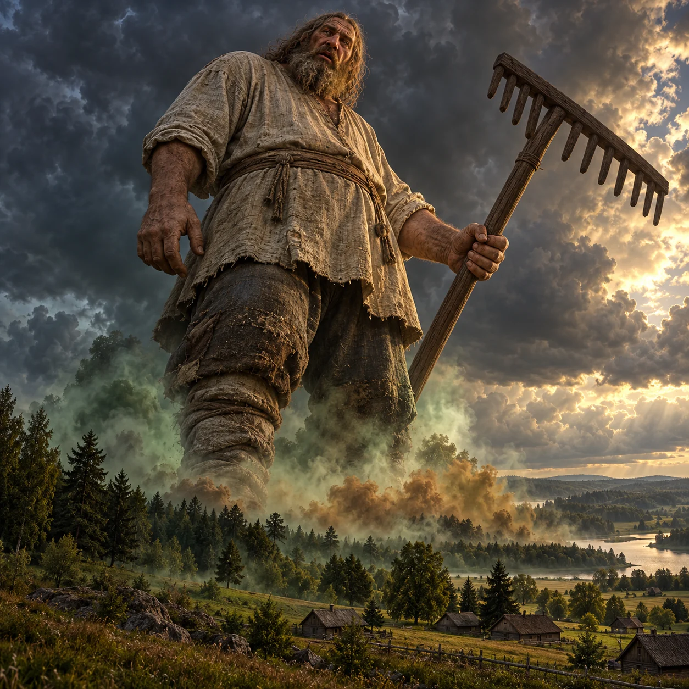
Vanapagan as enormous dull giant farmer; no invisibility-hat or unsupported animal-anatomy additions.
Aura: Huge awkward farmer posture and village scale under dramatic natural clouds.
Audit ciri dan sumber
- Preserve enormous human giant farmer, rake, clothing and buildings for scale
- Natural sunset, wind and ground dust; no generic emitted aura
Actually inspected full native original. Giant farmer towers over farms with a rake; dust, clouds and sunset appear physical, without luminous body contour or energy strands.
Review sumberSquare premium painterly naturalistic Estonian mythology encyclopedia artwork, stylized-concept. ONE VANAPAGAN, the source-attested GIANT FARMER and underworld devil more foolish than malevolent. A COLOSSAL human-shaped weathered adult male farmer with simple rough linen rustic clothes, earthy bewildered face, holding a huge wooden farm tool. Make body immense, towering over full-grown Estonian forest trees and ordinary farm cottages, entire giant silhouette above rolling fields, extremely low viewpoint with clear landscape scale. Preserve farmer/giant source appearance, no added goat legs or horns; exact facial details, tool and clothing editorial. Eerie underworld-green ground fog and dark amber dust swirling about his giant feet create mythology aura, dramatic thundercloud light, power with a slightly puzzled rather than sadistic expression. Detailed naturalistic human face, enormous presence. No second giant, no victims, no modern machinery, no fingernail invisibility hat combined into this visible variant, no text, no watermark.
Vodyanoy
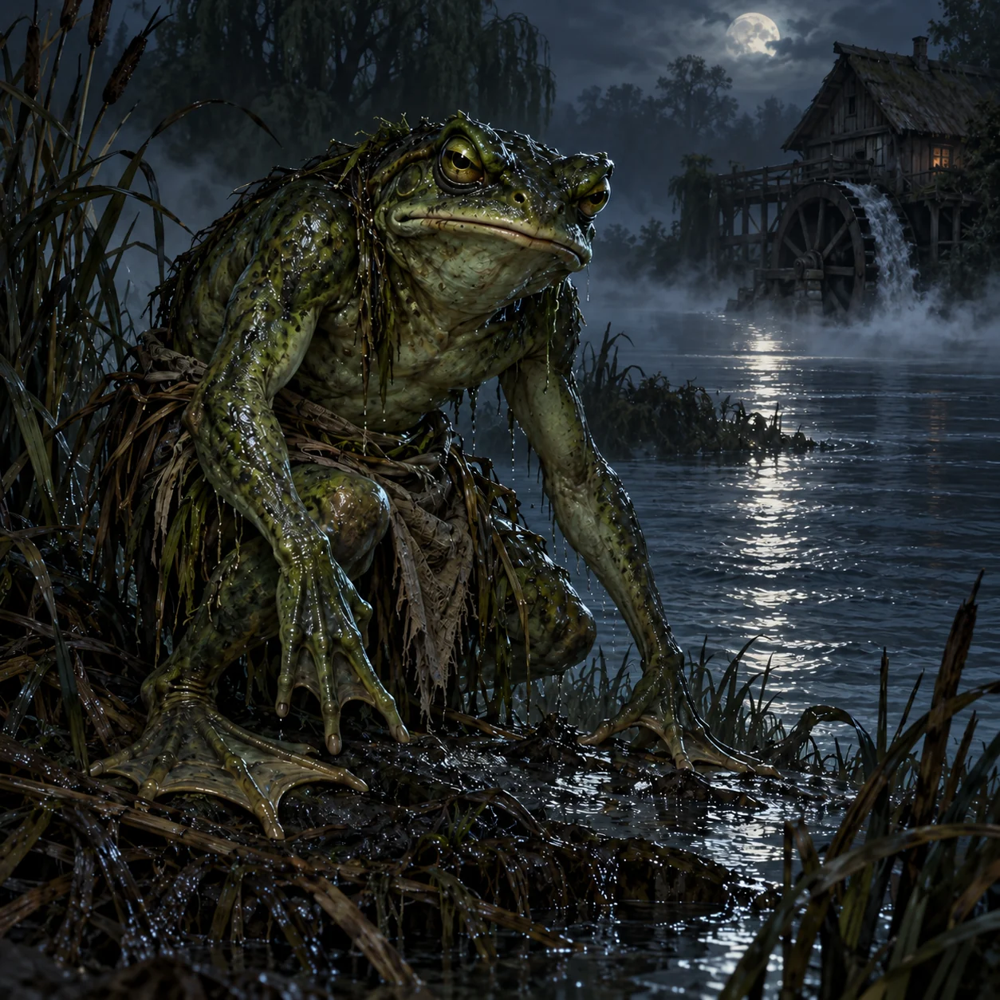
Vodyanoy in man-like frog aquatic spirit form
Aura: Dangerous presence through large frog stare, forward crouch, wet skin and secluded moonlit watermill river.
Audit ciri dan sumber
- Humanlike upright frog creature with frog face and webbed limbs
- Opaque modest lower-body covering
- River-watermill habitat and natural silver moon reflections; no luminous turquoise magic
Inspected native output: same anthropomorphic frog body, webbed limbs and reed clothing; river now has physically plausible dark waves and silver moon reflections, no turquoise magic ribbons or body halo.
Review sumberUse case: lighting-weather. Input image is EDIT TARGET. Change ONLY lighting and atmosphere: remove the luminous turquoise supernatural swirls on the river and any emitted glow around Vodyanoy. Keep ordinary river ripples, dark blue-gray water with silver moon reflections, natural low mist. Preserve exactly the same upright anthropomorphic frog face/body, webbed limbs, two arms and two legs, natural eye pupils/glints, wet textured skin, opaque modest reed-cloth covering, reeds, watermill, moon, viewpoint and square composition. No body emission, magical fog, neon edge, luminous river ribbons, particles or added anatomy. Menace through frog stare, forward crouch and dark watermill scene. Same detailed painterly naturalistic style, no text or watermark.
Water horse
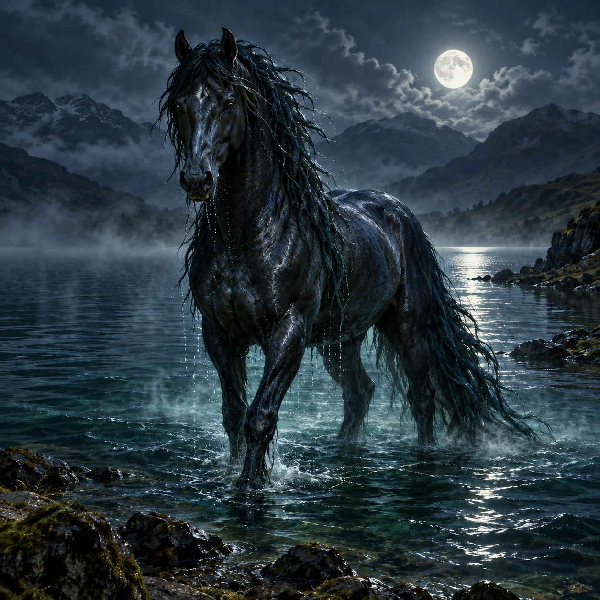
Generic horse-shaped lake water spirit, excluding lake-monster nickname forms
Aura: Alert horse posture and moonlit lake.
Audit ciri dan sumber
- Remove ONLY unnatural cyan glowing eyebulbs. Give both eyes ordinary dark equine eyes with tiny natural moonlight catchlights. Preserve same single black horse, four legs, wet mane, stepping pose, scale, anatomy, natural lake splashes, moon and mountains. No emitted light or magic. Presence comes from alert gaze and moonlit lake.
- No generic emitted magical wrapping; preserve original anatomy, counts and scale
Native output actually inspected: both cyan eyes replaced by dark equine eyes, same horse anatomy, four legs, stepping pose, wet mane and moonlit lake preserved.
Review sumberUse case: precise-object-edit. Edit target supplied mythology artwork. Remove ONLY unnatural cyan glowing eyebulbs. Give both eyes ordinary dark equine eyes with tiny natural moonlight catchlights. Preserve same single black horse, four legs, wet mane, stepping pose, scale, anatomy, natural lake splashes, moon and mountains. No emitted light or magic. Presence comes from alert gaze and moonlit lake. Preserve original framing, subject count, exact scale and anatomy; no new objects, nudity, text or watermark.
White dragon
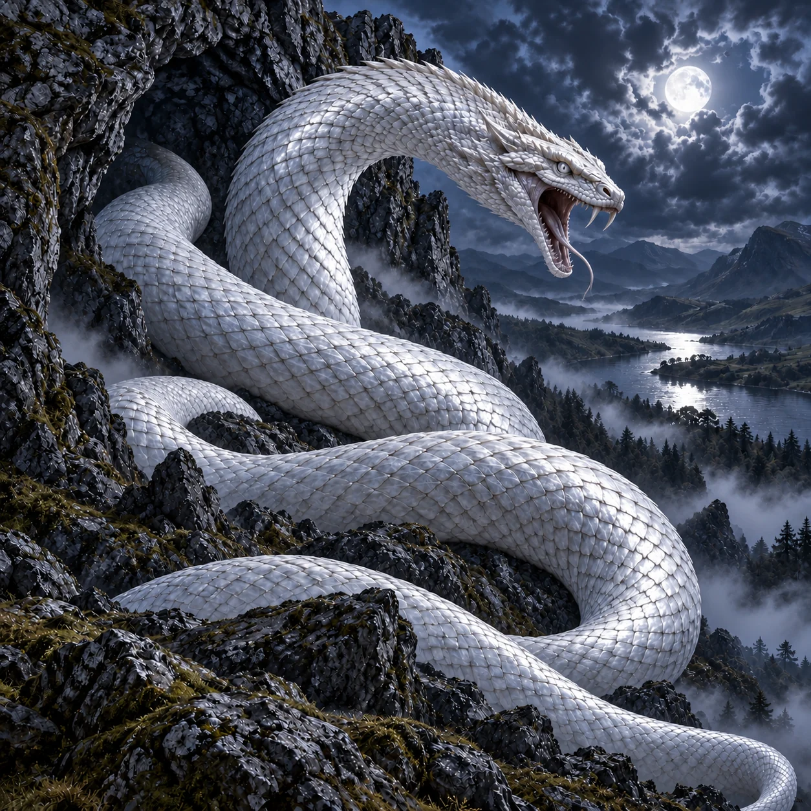
White dragon as attested white serpent of Nennius translation, at Dinas Emrys; avoids invented wing/limb schema.
Aura: Immense threatening presence through raised jaws, scale and rocky moonlit framing.
Audit ciri dan sumber
- One continuous white legless wingless serpent
- Dinas Emrys opened rocky hill setting
- Same scale and threat pose
- Natural moonlight; no emitted magic
Native inspected: continuous wingless legless white serpent with same raised head and coils; all blue magic ribbons/motes removed, scales naturally moonlit amid rocks and ordinary distant mist.
Review sumberUse case: precise-object-edit. Edit this white serpent-dragon at Dinas Emrys: remove ALL blue-white magical energy ribbons, luminous motes, neon aura outlining body and luminous magical fog. White scales reflect ordinary moonlight, without self-emission; eyes ordinary reflective pale reptile eyes, no glowing bulbs. Preserve exactly ONE continuous white serpent body without legs or wings, same coils, aggressive raised open-jawed head, size, anatomy, hill rocks, lake, moon, framing and painterly quality. Replace removed effects with natural rock/scales and low ordinary nonluminous mist. Ominous majestic presence from immense serpent scale, raised threat pose, rocky composition and moonlit night. No new anatomy or subjects, fire breath, text or watermark.
Zmeu
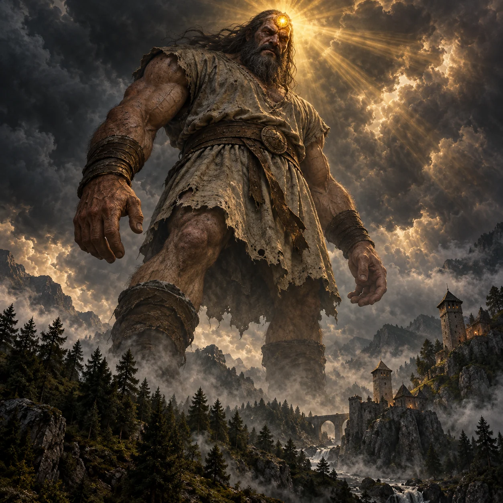
Romanian zmeu as a colossal humanlike giant with a sun-bright gem on his head
Aura: Huge humanoid ogre silhouette and bright source head gem over miniature valley.
Audit ciri dan sumber
- Preserve source humanoid giant with arms/legs and localized sun-bright head gem (c03)
- Preserve source scale and landscape, no generic emitted aura; natural lighting outside explicit source effect
Actually inspected full native original. Source magical head gem shines like the sun; only this localized gem emission is present, alongside natural cloud and valley light.
Review sumberUse case: illustration-story. ONE square epic dark painterly mythology illustration of ROMANIAN ZMEU, the GIANT HUMANLIKE variant with a magical gem on its head. One colossal adult male ogre-like giant with TWO humanlike arms and TWO humanlike legs, coarse threatening face and tremendous muscular scale; modest plain worn tunic and belt are artistic costume treatment. A prominent magical gem set at the front of his head shines with the brightness of a small sun, sending supernatural gold rays through sinister storm haze. He looms over tiny distant mountain towers and pine trees, clearly enormous according to his giant identity. Entire towering silhouette visible inside frame; low viewpoint conveys vast size. Menacing expression, dramatic chiaroscuro, ominous winds and richly textured cloth/skin. No dragon wings, horns, animal legs, serpent body, extra heads, abducted women, sexual scene, gore, text or watermark.
Azhdahak (mythology)
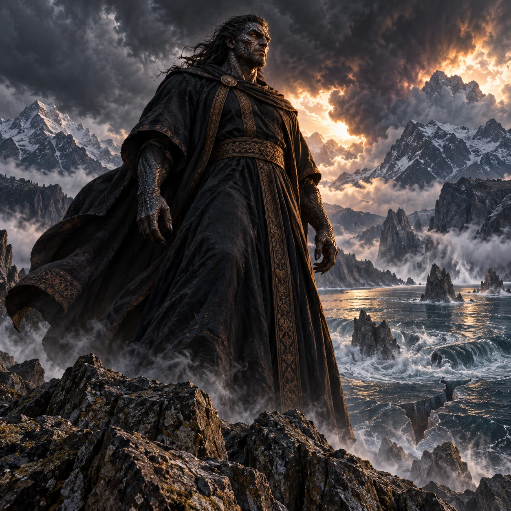
Armenian man-vishap dragon-king hybrid, restrained artistic morphology
Aura: Imposing dragon-king stance against mountain lake and storm sunset.
Audit ciri dan sumber
- Preserve one-headed human-dragon king, restrained scaled skin and royal clothing without added wings/heads
- Preserve source scale and landscape, no generic emitted aura; natural lighting outside explicit source effect
Actually inspected full native original. Restrained human-dragon king has textured scales and clothing under natural cloud sunset; ordinary ground mist, no emitted ribbons or aura.
Review sumberUse case: stylized-concept. ONE square masterful painterly naturalistic mythology encyclopedia illustration of AZHDAHAK, the Armenian MAN-VISHAP / MAN-DRAGON king, not a three-headed Avestan demon. ONE adult male humanoid dragon-king with a single stern subtly serpentine face, restrained dark reptilian scales across exposed face and hands, otherwise anatomically human upright body, two arms and two legs. Simple dark ancient royal robe covers torso, no invented magical armor. At a high Armenian mountain lake, imposing full figure dwarfs foreground rocks while fissures and water turbulence suggest source earthquake power. Source supports man-dragon identity but does not specify scales placement, face shape or costume: treat these as restrained contemporary artistic interpretation. Terrifying sovereign mythical aura, storm vapor, deep shadow and cold fiery-looking rimlight without bodily flames. No additional heads, neck snakes, wings, horns, serpent-tail belt, victims, gore, text, watermark, border or collage.
Dunnie

Dunnie in source-described horse form tricking riders/ploughmen; vanishing effect editorial depiction of documented disappearance.
Aura: Uncanny trickster presence through solid rearing forequarters, slipping empty harness, muddy moonlit lane and subtly disappearing hindquarters.
Audit ciri dan sumber
- One anatomically coherent horse shapeshift
- Muddy rural road
- Empty harness and only subtle disappearing rear outline
- Solid front horse, no broad cyan vapor or energy filaments
Actually inspected revised native contact: front head, neck and forelegs solid, rear blends softly into scene without emitted cyan fog. Empty harness, mud splashes, road and moon preserved.
Review sumberUse case: lighting-weather. Input image is EDIT TARGET. Change only magical lighting and atmospheric VFX; preserve exact identity, expression, pose, anatomy, limb counts, scale, scenery, square framing and fully modest opaque clothing. No text/watermark. Remove all broad cyan luminous vapor/filaments behind horse and below front legs. Keep horse FRONT COMPLETELY SOLID with ordinary fur and hooves. Suggest documented disappearance ONLY by a softly fading slightly translucent rear outline blending with background, no smoke plume or emitted light. Preserve empty dangling harness, muddy rural road, rearing pose, four equine limbs, mane, face, moonlight.
Fuath
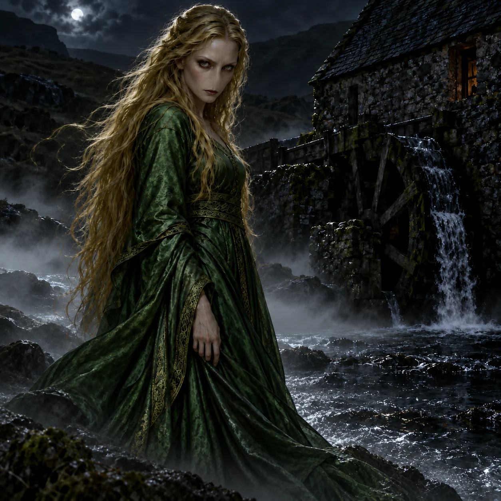
Moulin na Vaugha fuath as noseless yellow-haired female water spirit in green silk
Aura: Noseless severe gaze, dark watermill and natural night mist.
Audit ciri dan sumber
- Remove unsupported green luminous fog, yellow emitted hair glow and bright unnatural eye coloration. Replace green fog with ordinary neutral gray low water mist, yellow hair with nonluminous yellow hair under moonlight and eyes with naturally shaded eyes. Preserve noseless adult female face (NO NOSE), green silk long dress coverage, yellow hair, same posture, anatomy and haunted watermill. Keep female identity. Malevolence through severe gaze, dark wet stone and night composition; no magic wrapping.
- No generic emitted magical wrapping; preserve original anatomy, counts and scale
Native output actually inspected: absent nose retained, adult identity, yellow hair and green silk coverage preserved; luminous green fog and hair emission removed, natural gray water mist.
Review sumberUse case: precise-object-edit. Edit target supplied mythology artwork. Remove unsupported green luminous fog, yellow emitted hair glow and bright unnatural eye coloration. Replace green fog with ordinary neutral gray low water mist, yellow hair with nonluminous yellow hair under moonlight and eyes with naturally shaded eyes. Preserve noseless adult female face (NO NOSE), green silk long dress coverage, yellow hair, same posture, anatomy and haunted watermill. Keep female identity. Malevolence through severe gaze, dark wet stone and night composition; no magic wrapping. Preserve original framing, subject count, exact scale and anatomy; no new objects, nudity, text or watermark.
Girt dog of Ennerdale

Reported 1810 smooth-haired tawny tiger-streaked dog, excluding speculative thylacine identification
Aura: Silent predatory presence through wary gaze and dark moonlit fells.
Audit ciri dan sumber
- Large smooth-haired tawny mouse-colored tiger-streaked canine
- Four legs and one tail, same pose and scale
- No magical outline or ribbons
Native output inspected: same natural canine with four legs, tiger streaks and one tail; all luminous blue effects removed, moon and ordinary valley mist retained.
Review sumberUse case: precise-object-edit. Remove ALL bright blue emitted ribbons, luminous wisps, sparkling magic, neon dog outline and luminous footprints from this Girt Dog of Ennerdale artwork. Source is a large smooth-haired tawny mouse-colored canine with dark tiger-like streaks, a silent night predator; it does not emit magic. Preserve SAME large four-legged canine, one tail, tiger-streaked coat, face, walking pose, size, hill rocks, moon, framing, painterly texture. Restore natural coat and ground shadows with ordinary moonlight and low nonluminous valley mist. Silent predatory presence through wary gaze, sturdy stance and dark fells. No animal mixture, anatomy changes, extra characters, gore, text or watermark.
Hiisi
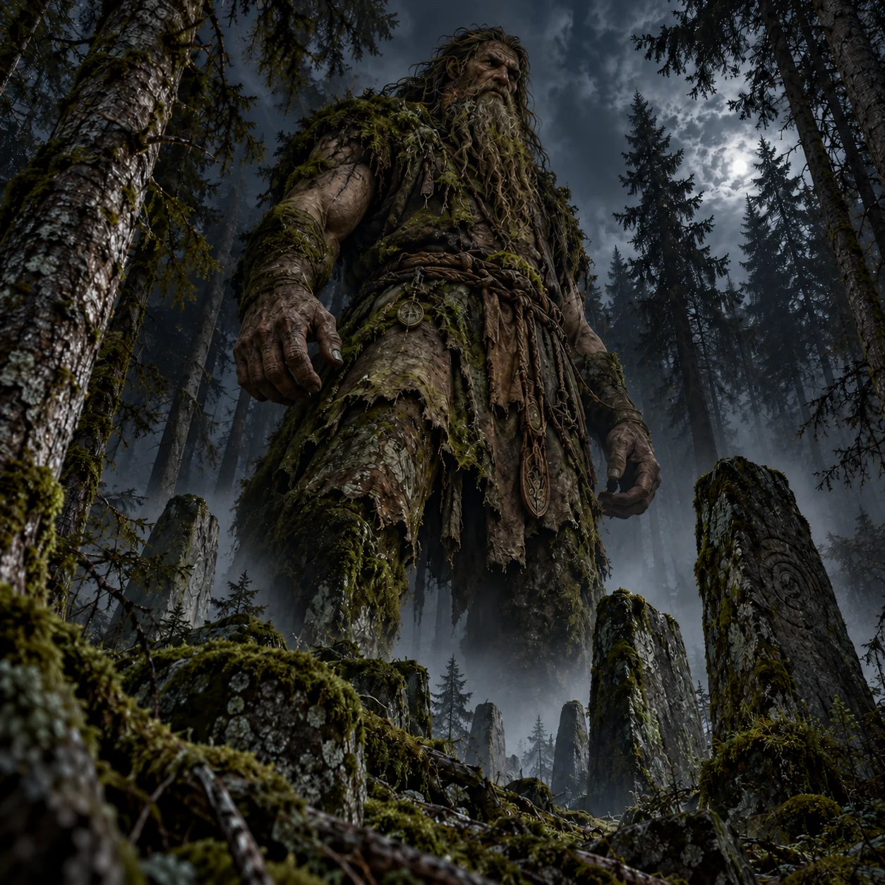
Later giant-like forest Hiisi / son of Kaleva interpretation; no conflation with Hiisi's elk, face/clothing editorial.
Aura: Malicious majesty through colossal source giant form, looming low-angle view, stern face and dark moonlit forest.
Audit ciri dan sumber
- One giant-like male forest being
- Forest hidden sacred-place setting
- Trees establish huge scale
- Menacing expression and natural forest haze; no emitted green aura
Actually inspected edited native: huge moss-covered male with coherent limbs and opaque ragged clothes preserved, tree scale intact; green ribbons and particles gone, ordinary gray forest haze and moonlight only.
Review sumberUse case: lighting-weather. Input image is EDIT TARGET. Remove ALL luminous green energy ribbons, emitted green fog and glowing particles surrounding Hiisi's body and the standing stones. Replace them with ordinary low forest haze, dark tree shadows and restrained natural silver moonlight. Preserve EXACT huge male giant, face, mossy long beard, same anatomy and limb counts, fully opaque ragged clothing, posture, low-angle composition, tree/stones scale references, moon, landscape and square frame. No emitted body halo or neon outline; no invented horns, wings or anatomy. Majestic malicious presence through giant scale, looming posture and stern expression. Same high-detail painterly naturalism, no text or watermark.
Karzełek
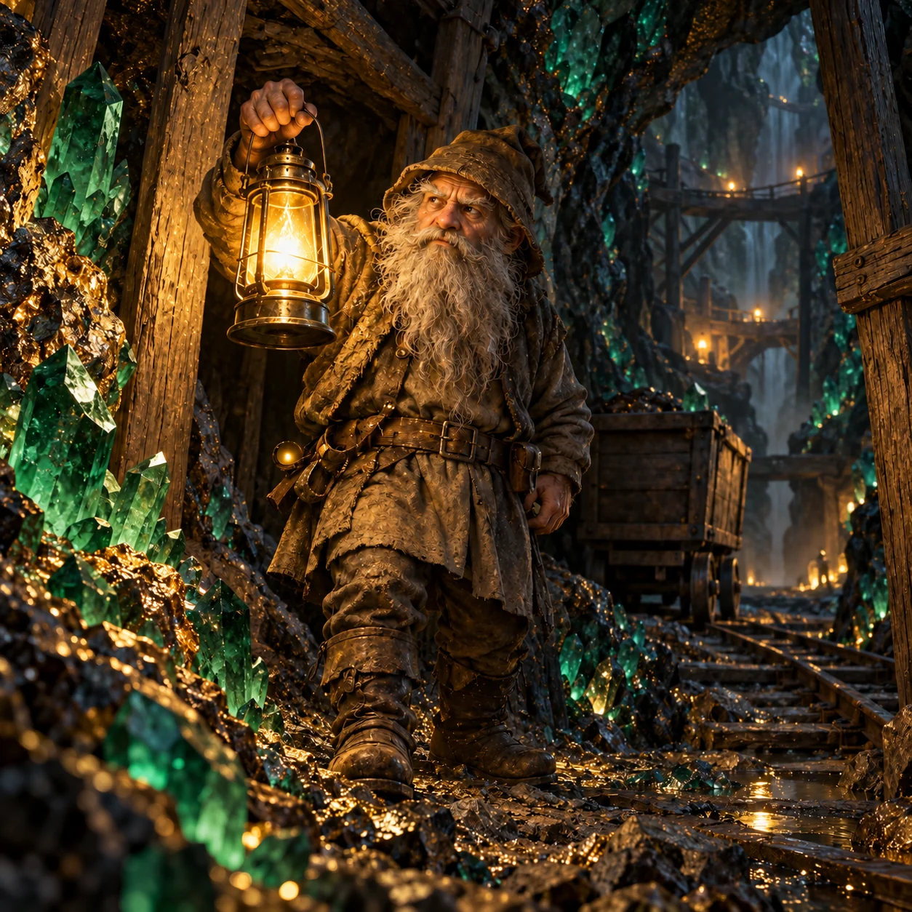
Skarbnik as a small elderly bearded miner carrying a lamp
Aura: Watchful elderly miner, held lamp and reflective underground crystals.
Audit ciri dan sumber
- Remove only gold magical ribbons wrapping miner and lantern, magical motes and green crystal emission. Preserve actual held lamp flame and warm lamp illumination/reflections, small elderly bearded miner, same face, pose, clothes, lamp, mine and crystals. Crystals reflect lamplight, not emit it. Protective presence through watchful posture and mine composition; no emitted aura.
- No generic emitted magical wrapping; preserve original anatomy, counts and scale
Native output actually inspected: gold wrapping and sparkles removed, same small bearded miner holding lamp preserved, crystals now reflective and actual lamp remains luminous.
Review sumberUse case: precise-object-edit. Edit target supplied mythology artwork. Remove only gold magical ribbons wrapping miner and lantern, magical motes and green crystal emission. Preserve actual held lamp flame and warm lamp illumination/reflections, small elderly bearded miner, same face, pose, clothes, lamp, mine and crystals. Crystals reflect lamplight, not emit it. Protective presence through watchful posture and mine composition; no emitted aura. Preserve original framing, subject count, exact scale and anatomy; no new objects, nudity, text or watermark.
Kikimora
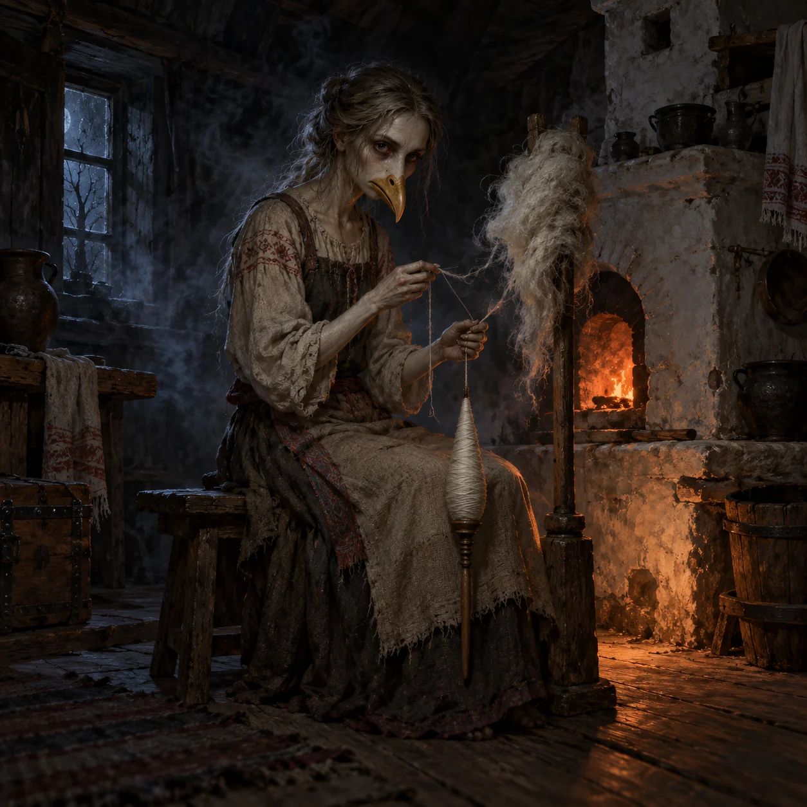
House spirit female chicken-beaked variant, excluding swamp hag and modern spider monster
Aura: Unsettling household presence through wary chicken-beaked female face, spinning pose and gloomy room.
Audit ciri dan sumber
- Female house spirit with chicken beak
- Night spinning near old stove
- Modest clothing and no animal variant mixing
- Natural smoke and lighting only
Native original inspected: chicken-beaked woman spinning, two human hands/arms, full modest dress, ordinary stove fire and room smoke, no generic magical wrapping.
Review sumberUse case: stylized-concept. ONE square terrifying detailed painterly naturalistic mythology encyclopedia illustration of KIKIMORA, selecting the Slavic FEMALE HOUSE SPIRIT with a CHICKEN BEAK, not swamp hag, goat variant or modern spider monster. One small thin female humanoid in plain worn modest Slavic household dress has an unmistakable natural chicken beak replacing the human mouth, otherwise source-faithful humanlike face and body. She sits beside an old masonry stove spinning thread on a wooden spindle at night. Both hands and whole figure framed with margins. Oppressive nightmare atmosphere, ghostly pale thread, cold vapor and deep shadow aura as artistic interpretation. No rooster crest, dog muzzle, goat horns, wings, spider legs, extra limbs, victims, text, watermark, border or collage.
Uylak

Uylak malevolent desolate-road hound shapeshift, no unsupported demon anatomy.
Aura: Malevolent presence through snarling adult hound, tense forward stance, direct stare and isolated moonlit road.
Audit ciri dan sumber
- One adult hound form
- Coherent four-legged canine anatomy
- Desolate road haunting
- Natural eyes, solid fur and moonlight; no luminous green aura
Actually inspected revised native: same snarling hound with four legs, tail and solid patterned fur; ordinary eyes, desolate road, gray low mist and moonlight replace all green energy.
Review sumberUse case: lighting-weather. Input image is EDIT TARGET. Remove ALL green luminous vapor, energy ribbons, neon outline, glowing particles and self-emitting green eyes around this hound. Render ordinary canine eyes with tiny moonlight reflection and solid dark natural fur. Preserve EXACT single adult hound breed, face, snarl, four canine legs, tail, size, stance, muddy road, trees, moon, camera and square composition. Replace removed glow with normal road darkness and colorless low atmospheric mist; silver natural moonlight only. Menacing presence through tense stance, teeth, direct gaze and desolate road. Same painterly naturalistic detail. No horns, wings, extra limbs, text or watermark.
Madam Pigott
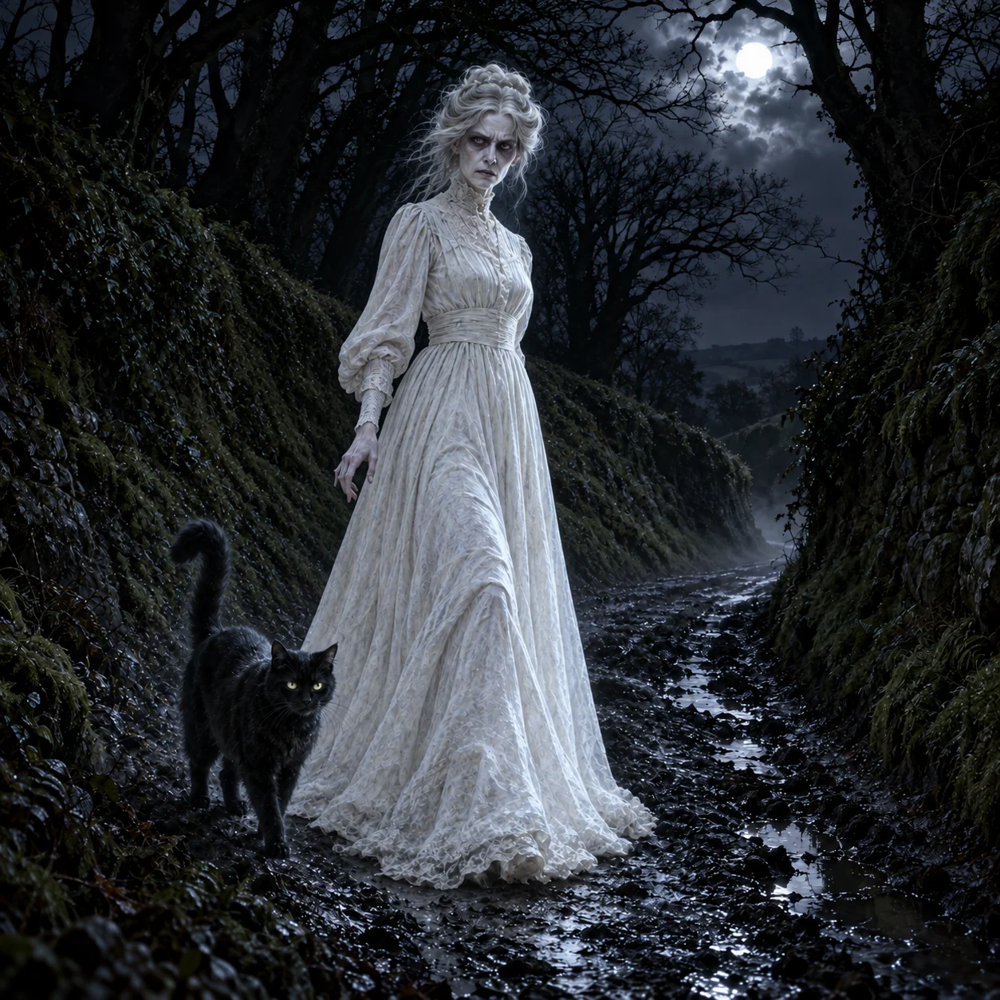
White Lady ghost Madam Pigott with her black cat in a high-banked Chetwynd lane
Aura: Oppressive White Lady stare, black cat and steep moonlit lane.
Audit ciri dan sumber
- Remove generic white energy ribbons swirling outside the White Lady and cat, floating magical sparkles and luminous body contour. Retain pale spectral female ghost identity with subtle restrained ghost pallor, her same face, pose, long white clothing coverage, single black cat, same steep high-banked wet lane and moon. No ribbons, sparks or emitted wrapping. Horror through severe stare, isolated lane, dark banks and moonlight.
- No generic emitted magical wrapping; preserve original anatomy, counts and scale
Native output actually inspected: same white-clad pale female ghost and one black cat in steep lane; swirling white ribbons and sparkling envelope removed, moonlight and pallor retained.
Review sumberUse case: precise-object-edit. Edit target supplied mythology artwork. Remove generic white energy ribbons swirling outside the White Lady and cat, floating magical sparkles and luminous body contour. Retain pale spectral female ghost identity with subtle restrained ghost pallor, her same face, pose, long white clothing coverage, single black cat, same steep high-banked wet lane and moon. No ribbons, sparks or emitted wrapping. Horror through severe stare, isolated lane, dark banks and moonlight. Preserve original framing, subject count, exact scale and anatomy; no new objects, nudity, text or watermark.
Monaciello
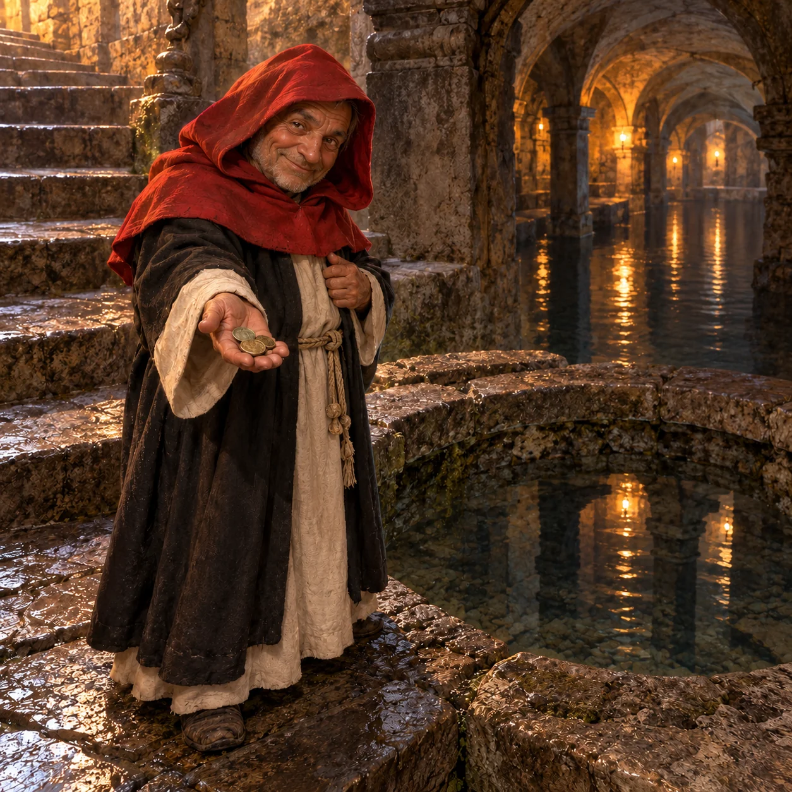
Short stocky older male Naples sprite in red-hooded long monk robe
Aura: benevolent mischievous expression and warm lamplight
Audit ciri dan sumber
- one short stocky adult male in long modest robe and broad red hood, offering ordinary coins with same hands and smile, Naples stone underground well/aqueduct setting
- Character presence through natural scene lighting; no emitted body aura
Native inspected: short stocky old man in broad red hood and long modest robe offers coins beside well; luminous cyan water/stars removed, ordinary amber lamp reflections retained.
Review sumberUse case: precise-object-edit. Remove ONLY unsupported effects: blue magically luminous water and magical star-shaped blue lights; make water dark ordinary transparent well water reflecting existing amber lamps. Preserve exactly one short stocky adult male in long modest robe and broad red hood, offering ordinary coins with same hands and smile, Naples stone underground well/aqueduct setting; retain framing, painterly detail and clothing coverage. Character presence through benevolent mischievous expression and warm lamplight. Restore ordinary textures, reflected real scene light, natural shadows and nonluminous distant mist. No generic emitted aura, new anatomy, characters, nudity, gore, text or watermark.
Zână
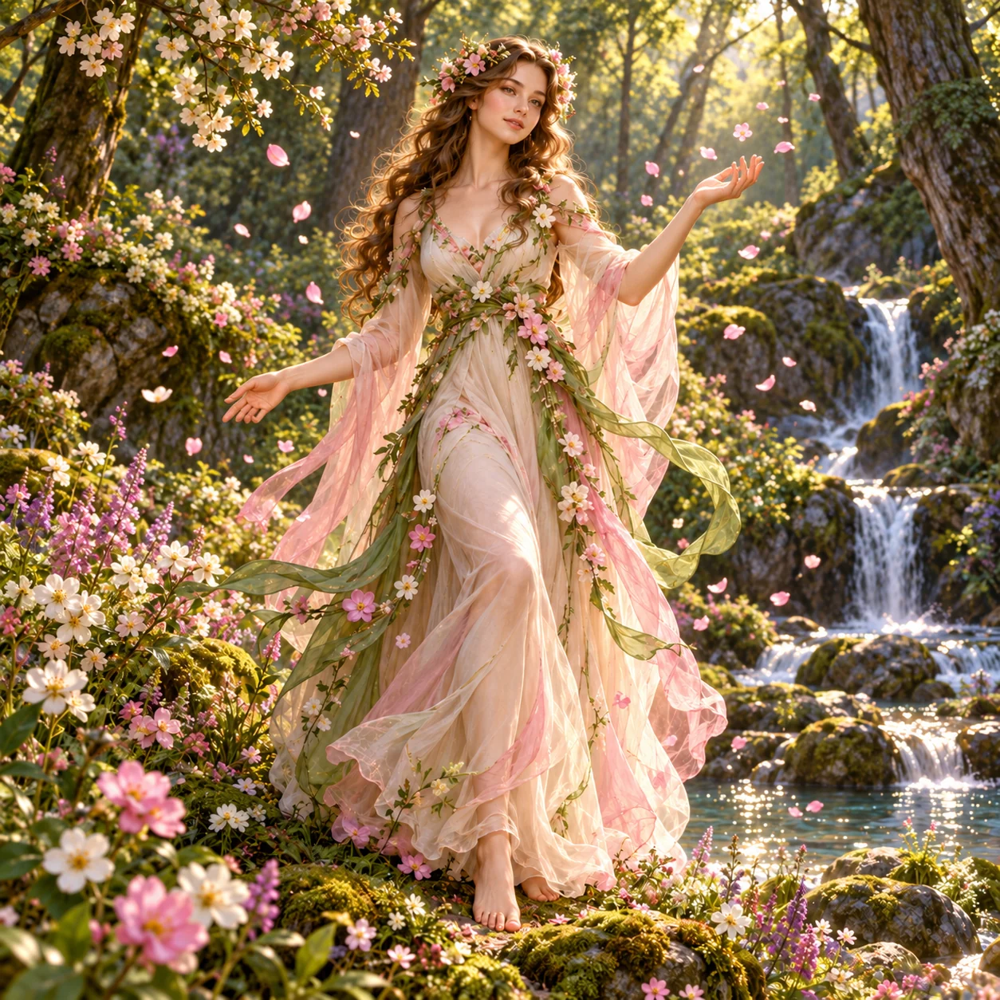
Good adult woodland zână, flower-associated magical maiden; costume and visible luminous magic editorial.
Aura: Benevolence through warm expression, open arms, woodland flowers and natural sunshine.
Audit ciri dan sumber
- Beautiful adult human female maiden
- Woodland flowers and modest floral dress
- No invented wings/horns, emitted aura or particles
Actually inspected native output: Same adult floral maiden, human anatomy, opaque dress, crown and waterfall preserved; ribbons and star particles gone, natural petals and sunlight only.
Review sumberUse case: lighting-weather. Input image is EDIT TARGET. Edit ONLY the unsupported magical lighting and vapor described below. Preserve exact character identity, face, pose, anatomy and limb counts, size, framing, fully modest opaque clothing and all environment details. Natural scene illumination only. No text or watermark. Remove ALL gold/pink magical light ribbons, luminous halo and emitted star particles; make floating petals ordinary flower petals lit by forest sunlight. Preserve adult human female, floral dress, flower crown, human feet, waterfall and flowers. Benevolence through warm face, open pose and flowering woodland.
Ojáncanu
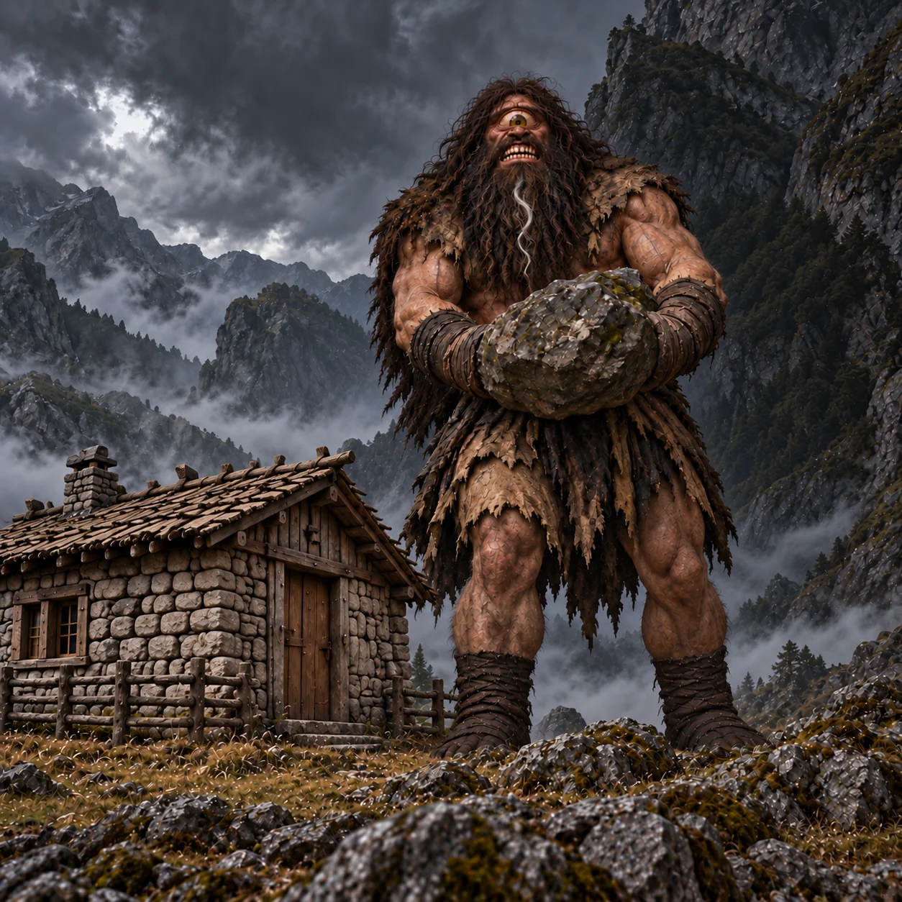
Ojáncanu as a 20-foot one-eyed giant with tangled beard and its single white hair
Aura: Towering giant scale, furious grimace and heavy boulder.
Audit ciri dan sumber
- Remove the red luminous energy envelope and red magical motes surrounding the giant. Retain one central eye (natural yellow iris, no glow), tangled beard and SINGLE white beard hair, two rows of teeth, giant size relative to cottage, boulder held in both hands, obscured hands/feet, same costume coverage and pose. Never add eyes/digits or expose hidden digits. Intimidation through towering size, boulder, grimace and dark mountains.
- No generic emitted wrapping; original counts and anatomy
Native output actually inspected: one central eye, single white hair in tangled beard, boulder, giant cottage-relative scale and covered hands/feet retained; red energy removed.
Review sumberUse case: precise-object-edit. Edit supplied mythology artwork. Remove the red luminous energy envelope and red magical motes surrounding the giant. Retain one central eye (natural yellow iris, no glow), tangled beard and SINGLE white beard hair, two rows of teeth, giant size relative to cottage, boulder held in both hands, obscured hands/feet, same costume coverage and pose. Never add eyes/digits or expose hidden digits. Intimidation through towering size, boulder, grimace and dark mountains. Preserve exact original anatomy, count, scale, composition and coverage. No new subjects, nudity, text or watermark.
Patagons
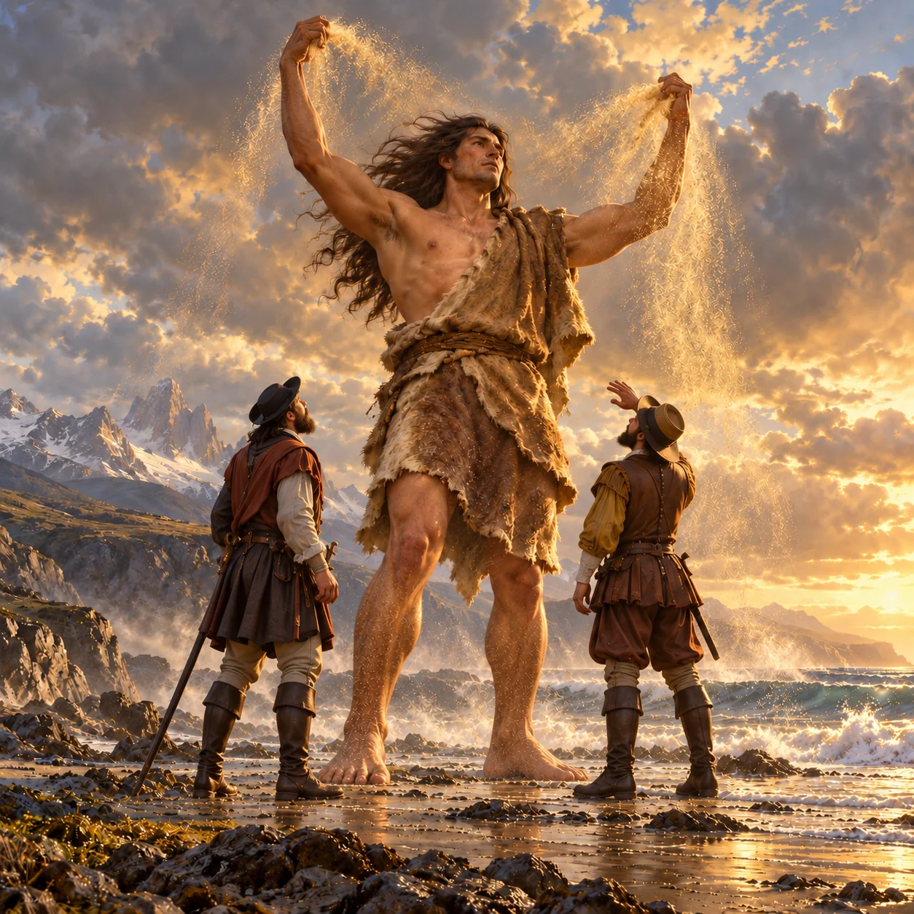
Legendary European-account Patagonian giant humans, historical belief rather than actual people
Aura: Legendary towering human presence through giant-to-sailor scale and expressive raised arms.
Audit ciri dan sumber
- Single giant human at least twice ordinary human height
- Two ordinary sailors near waist height
- Modest cover and shore dust-throwing scene
Inspected original on high-resolution contact sheet: giant human with normal anatomy and modest covering raises dust in hands; two sailors reach around waist height; gold dust is naturally sunlit, no magical body wrapping.
Review sumberUse case: precise-object-edit. Correct the relative size of ONLY the TWO SAILORS in this PATAGONS illustration. They are STILL TOO SHORT. ENLARGE THEIR BODIES vertically so EACH SAILOR'S HEAD IS AT THE SAME IMAGE HEIGHT AS THE GIANT'S WAIST BELT/KNOT, around the middle of his body. Their heads must be directly level with the giant's waist, NOT his knees or thighs. Put all feet on same shoreline ground line. Giant about13feet, sailors about6.5feet, exactly twice adult height. Preserve giant pose throwing glowing dust, human anatomy and modest hide drape, mountains, shore, magical golden dust atmosphere. Sailors stand beside giant's calves, fully visible, no overlapping heads. Source explicit waist-high comparison is the highest-priority requirement. No text, watermark, border, violence or monster mutations.
Saci (folklore)
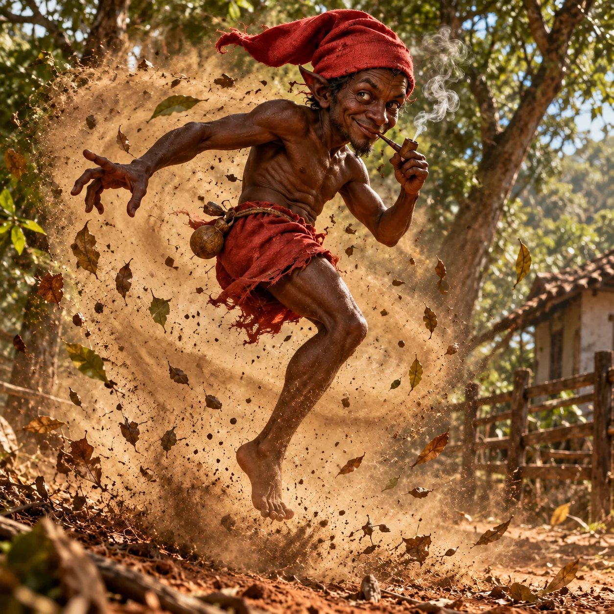
Saci's documented dark-skinned one-legged red-cap pipe-smoking dust-devil form; clothing and aura editorial.
Aura: Mischievous presence through smile, pipe, red cap, single-legged motion and documented dust-devil.
Audit ciri dan sumber
- Exactly one leg and foot
- Dark-skinned goblin-like adult
- Red magic cap and pipe
- Source brown dust devil, no red luminous energy
Actually inspected native output: Single leg, two arms, pipe, cap and red shorts preserved; ordinary dust, soil and leaves swirl naturally, all red neon trails gone.
Review sumberUse case: lighting-weather. Input image is EDIT TARGET. Edit ONLY the unsupported magical lighting and vapor described below. Preserve exact character identity, face, pose, anatomy and limb counts, size, framing, fully modest opaque clothing and all environment details. Natural scene illumination only. No text or watermark. Remove red-orange neon energy loops and spark particles including the cap's emitted tail; retain physically visible brown dust-devil with ordinary airborne leaves, soil and pipe smoke, source-backed c02. Preserve dark-skinned goblin-like adult, EXACTLY ONE leg and foot, two arms, pipe, red cap, red opaque shorts and lively pose.
Shug Monkey
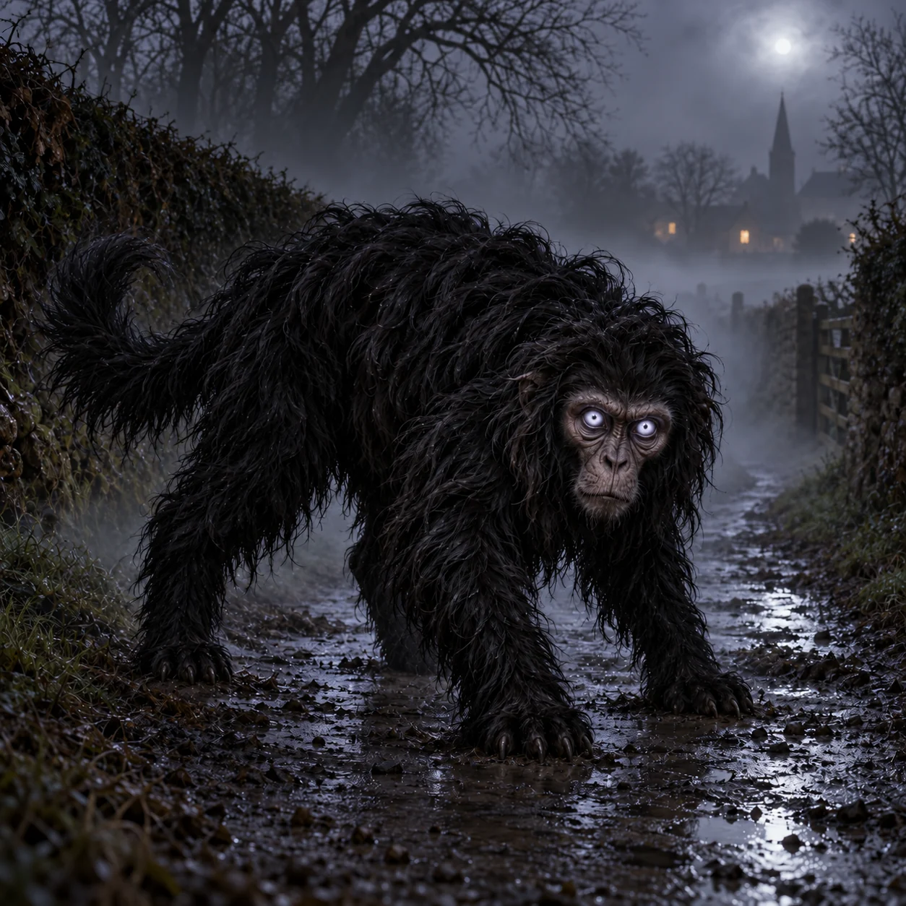
Shug Monkey with jet-black shaggy sheepdog body and staring monkey face
Aura: Big staring monkey eyes and crouching black shaggy dog on dark lane.
Audit ciri dan sumber
- Remove ONLY purple emitted body smoke/ribbons, purple motes, luminous fur contour and purple ground reflections. Source explicitly supports big shining staring eyes; preserve two big shining eyes but use restrained pale reflected shine, no purple eye beams or body emission. Preserve jet-black shaggy sheepdog body, monkey face, quadrupedal stance, proportions, same lane. Spectral presence through staring monkey face and dark misty lane.
- No generic emitted wrapping; original counts and anatomy
Native output actually inspected: black shaggy quadrupedal sheepdog body and monkey face retained; purple wrapping/motes gone, source-supported shining staring eyes restrained pale and no body emission.
Review sumberUse case: precise-object-edit. Edit supplied mythology artwork. Remove ONLY purple emitted body smoke/ribbons, purple motes, luminous fur contour and purple ground reflections. Source explicitly supports big shining staring eyes; preserve two big shining eyes but use restrained pale reflected shine, no purple eye beams or body emission. Preserve jet-black shaggy sheepdog body, monkey face, quadrupedal stance, proportions, same lane. Spectral presence through staring monkey face and dark misty lane. Preserve exact original anatomy, count, scale, composition and coverage. No new subjects, nudity, text or watermark.
Stoor worm
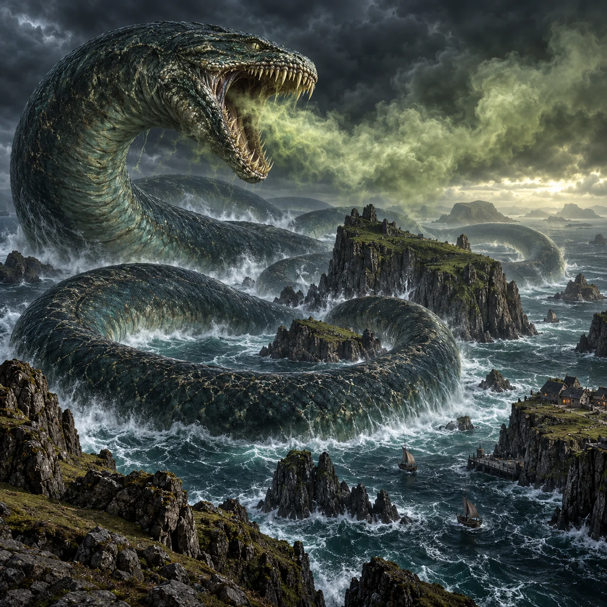
Living evil Orcadian giant sea serpent before Assipattle defeat
Aura: Terrifying colossal serpent scale among tiny island settlements and storm sea.
Audit ciri dan sumber
- One colossal sea serpent head and continuous body without limbs or wings
- Island-scale reference
- Restrained mouth-origin putrid breath
Inspected original contact sheet: immense dark serpent, one head, legless wingless coils across sea, greenish putrid breath from mouth as attested; ordinary waves and storm light, no full-body emitted wrapping.
Review sumberUse case: stylized-concept. ONE square breathtaking terrifying detailed painterly naturalistic mythology illustration of STOOR WORM / MESTER STOOR WORM, evil giant sea serpent of Orkney. ONE immense legless wingless sea SERPENT with one reptilian head, its unimaginably long body stretching across the ocean and coiling around rocky islands, enormous teeth and PUTRID BREATH shown as sickly vapor streaming from mouth. Make genuinely island-scale: tiny coastal boats and cliff settlements beneath its coils, low panorama, entire main head and multiple massive body coils inside frame. Its teeth were said to form island groups and body Iceland after defeat; this depicts alive, not landform transformation. Truly dreadful apocalyptic storm, black Atlantic water, poisonous-looking breath mist and cold green aura; vapor color/artistic scale depiction are interpretation. No horns, wings, legs, extra heads, victims, blood, gore, text, watermark, border or collage.
Sugaar
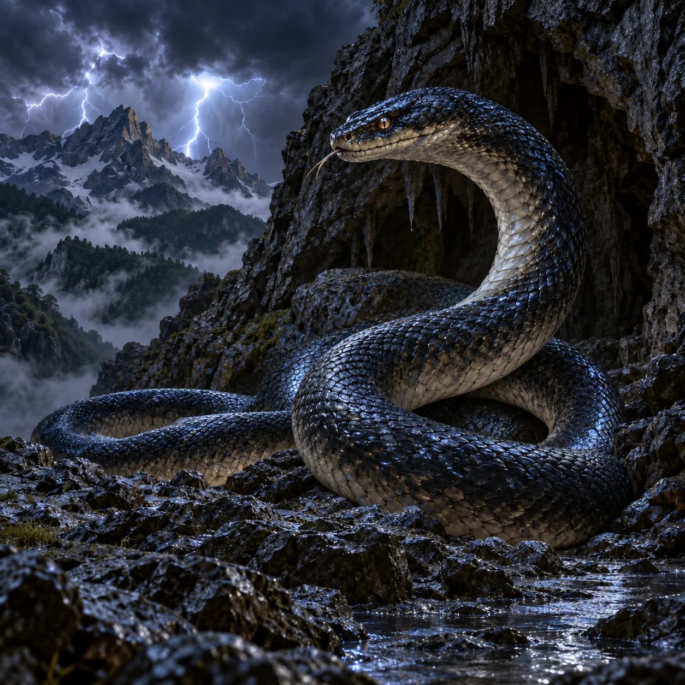
Sugaar true serpent form with lightning/fire-associated artistic aura at documented Baltzola cave.
Aura: Power through raised serpent head, massive coils, rocky cave and distant natural storm.
Audit ciri dan sumber
- One continuous legless serpent
- Baltzola cave context
- Selected solid serpent form, no mixed human or wings
- Natural distant storm only; no body energy ribbons
Actually inspected native output: Single head and continuous coiled scaly serpent preserved, wet cave rocks and distant storm; gold particles and body electrical loops gone.
Review sumberUse case: lighting-weather. Input image is EDIT TARGET. Edit ONLY the unsupported magical lighting and vapor described below. Preserve exact character identity, face, pose, anatomy and limb counts, size, framing, fully modest opaque clothing and all environment details. Natural scene illumination only. No text or watermark. Remove body-wrapping blue electrical arcs, golden aura and glowing particles entirely, because this selects solid serpent form rather than separate pure lightning/fire form. Retain distant natural storm lightning only in sky. Preserve exact single continuous scaled legless serpent, one head, forked tongue, coils, cave rock and landscape. Wet scales reflect distant cool storm light; no self-emission.
The Laidly Worm of Spindleston Heugh
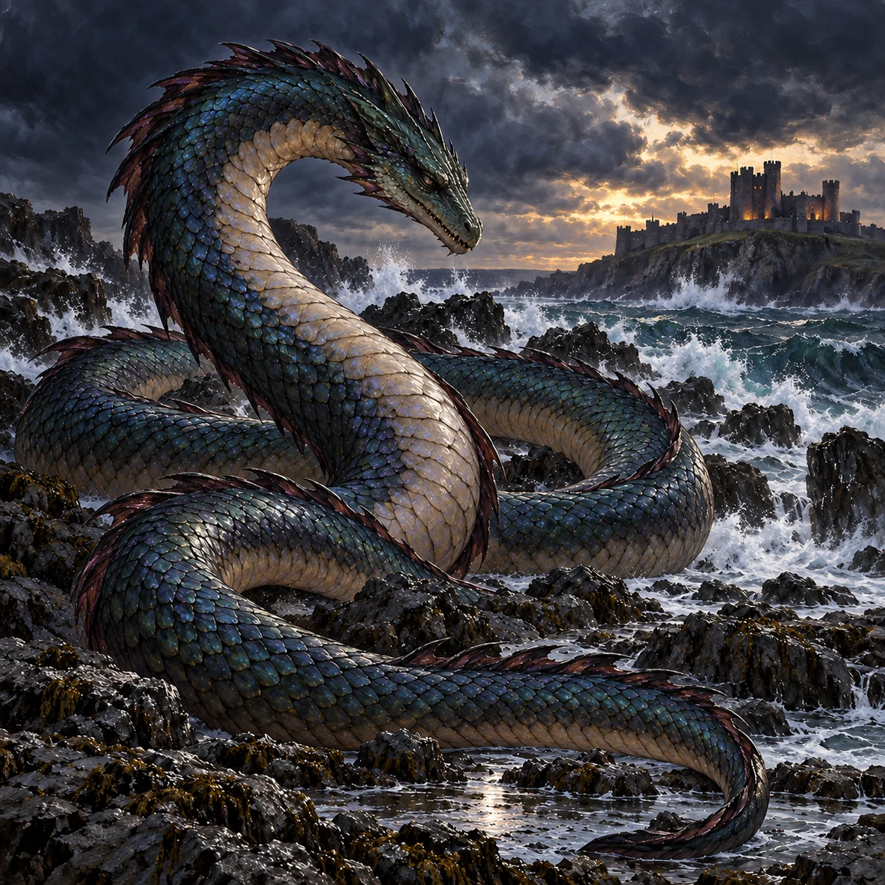
Princess Margaret transformed into the Laidly Worm, a great serpentine dragon by Bamburgh
Aura: Massive coiled serpent and storm-battered Bamburgh coast.
Audit ciri dan sumber
- Remove purple energy ribbons, magical motes, emitted purple scale glow and glowing eye; scales remain naturally iridescent dark blue-green with original color detail, eye naturally shaded. Preserve one great coiled serpentine dragon, same head, body shape, tail, scale, pose, sharp features, Bamburgh coastal castle and crashing sea. Transformation into dragon supports this creature manifestation but no surrounding magic. Presence through huge coils and coastal storm.
- No generic emitted wrapping; original counts and anatomy
Native output actually inspected: same single coiled serpentine dragon at Bamburgh, ordinary iridescent scales, natural eye, sea/pose preserved; purple ribbons and dots gone.
Review sumberUse case: precise-object-edit. Edit supplied mythology artwork. Remove purple energy ribbons, magical motes, emitted purple scale glow and glowing eye; scales remain naturally iridescent dark blue-green with original color detail, eye naturally shaded. Preserve one great coiled serpentine dragon, same head, body shape, tail, scale, pose, sharp features, Bamburgh coastal castle and crashing sea. Transformation into dragon supports this creature manifestation but no surrounding magic. Presence through huge coils and coastal storm. Preserve exact original anatomy, count, scale, composition and coverage. No new subjects, nudity, text or watermark.
Uraeus
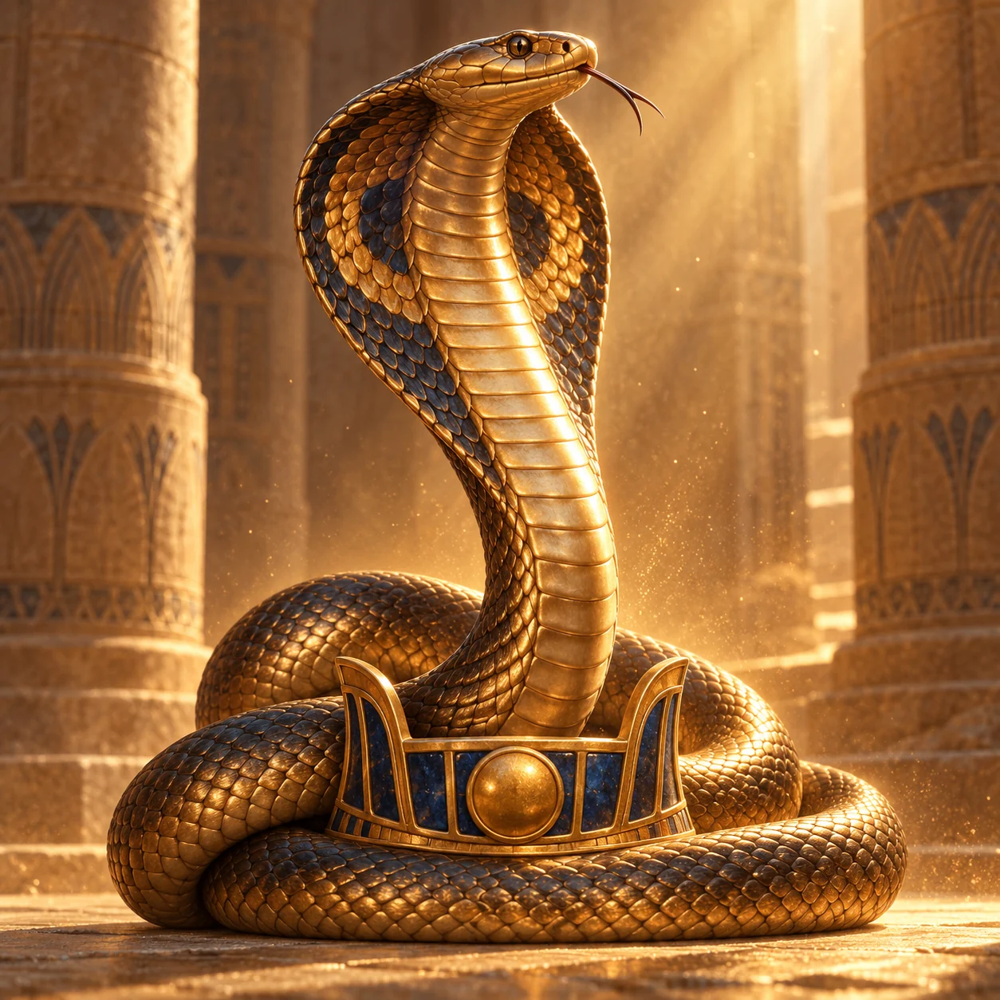
Upright rearing cobra manifestation representing Wadjet and royal protection
Aura: Royal sacred presence through proud raised cobra posture, reflective bronze-gold scales and temple framing.
Audit ciri dan sumber
- One upright rearing hooded cobra
- Egyptian temple context and royal symbol
- No human goddess hybrid or generic magic
Inspected original contact sheet: single hooded rearing cobra with continuous coiled legless body beside symbolic royal band, Egyptian columns; ordinary golden sunlight and dust, no emitted ribbons.
Review sumberUse case: stylized-concept. ONE square refined detailed painterly naturalistic mythology encyclopedia illustration of URAEUS, the upright rearing cobra representing Wadjet and Egyptian divine royal protection. ONE anatomically convincing cobra rears upright with fully expanded hood above a low ancient Egyptian royal crown base, serpent body coiled beneath, whole cobra comfortably framed. Show living sacred cobra manifestation with bronze-gold scale sheen; quiet temple stone backdrop and solar shafts. Majestic protective divine aura expressed as amber dust and subtle warm radiance, artistic treatment rather than literal anatomy. Not a generic dragon or human goddess. No human face, arms, legs, wings, added horns, multiple snakes, modern objects, invented readable hieroglyphs, text, watermark, border or collage.
Xeglun
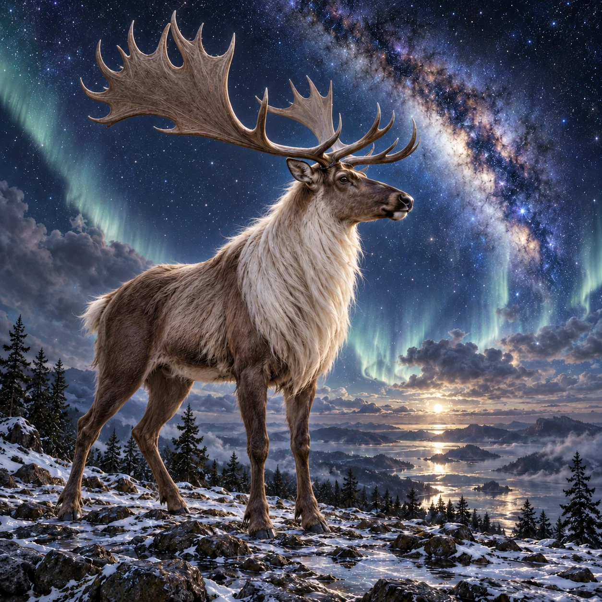
Source-attested celestial elk Xeglun; coat, star particles and dream landscape editorial.
Aura: Dignified elk posture, low viewpoint and expansive night sky, with natural moonlight on fur.
Audit ciri dan sumber
- One celestial elk with antlers and exactly four hoofed legs
- Preserve identity, pose and proportions; no hybrid anatomy or invented giant size
- Distant celestial sky retained; no luminous filaments, particles or self-emitted body outline
Inspected edited native output: all magical body ribbons, bright star overlays and hoof glow removed. Solid antlers, natural fur, four hoofed legs and original dignified pose retained; stars and aurora confined to distant sky.
Review sumberUse case: precise-object-edit. Input image 1 is the edit target, Xeglun the celestial elk. Remove ONLY the decorative magical aura: all luminous spiral filaments, bright star-like particles floating beside or on the body and antlers, artificial gold outlines and emitted hoof glow. Reconstruct clean natural elk fur, ordinary solid antlers, and rock/snow where those overlays were. Preserve the same elk identity, face, posture, antler geometry, exactly four hoofed legs, proportions, landscape and square composition. Keep the distant night sky, stars and natural aurora in the SKY; celestial dignity comes from the low camera angle, noble pose and expansive sky, not effects wrapped around the elk. Use moonlight and ambient sky illumination with natural fur reflections, no self-emission. Source supports a celestial elk, not glittering anatomy. Keep painterly realism, fine detail, no text, no added objects or characters.
Yelbeghen
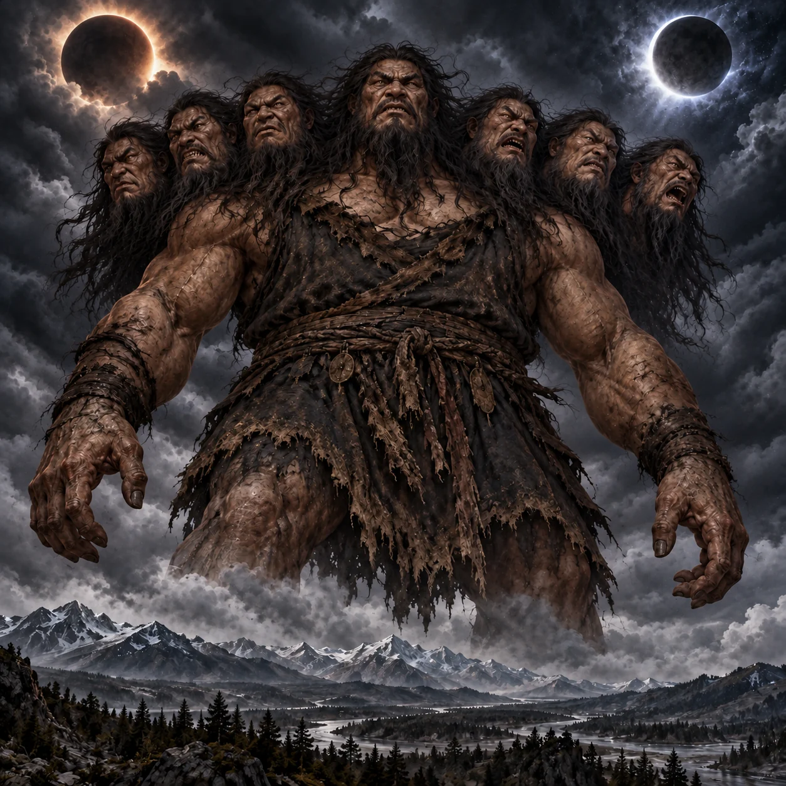
Altai Yelbeghen as a seven-headed ogre giant associated with Sun and Moon
Aura: Overwhelming seven-headed giant, threatening faces, low viewpoint and cold mountain storm atmosphere.
Audit ciri dan sumber
- Exactly seven distinct ogre heads on one enormous body with two arms and two legs
- Preserve same faces, ragged modest clothing and mountain reference scale
- Distant Sun/Moon backdrop retained, no fiery filaments, sparks or generic body envelope
Inspected edited native result: exactly seven ogre heads retained, one solid gigantic body and ragged clothes. Red energy and surrounding fire vapor removed, replaced by ordinary storm clouds. Eclipse imagery remains distant; terrifying scale and faces dominate.
Review sumberUse case: precise-object-edit. Input image 1 is Yelbeghen edit target. Remove the unsupported red magical energy, glowing filaments threaded around arms/body/hair and fiery particles enveloping the giant. Replace that decorative red vapor with dark ordinary storm clouds and dim atmospheric haze, with no emitted body outline. Keep exactly SEVEN distinct ogre heads, same faces, one gigantic body, two arms and two legs, ragged modest clothing, original mountain reference scale and ominous low viewpoint. Preserve Sun and Moon as distant eclipse-associated celestial objects to retain the documented myth of devouring Sun and Moon, but reduce the exaggerated burning ring to ordinary distant celestial illumination. Dread should arise from seven angry faces and overwhelming documented size above the cold mountains. No fire-body transformation, no new anatomy, no glowing eyes or swirling magic, no text. Keep square naturalistic folklore painting.
Zitiron
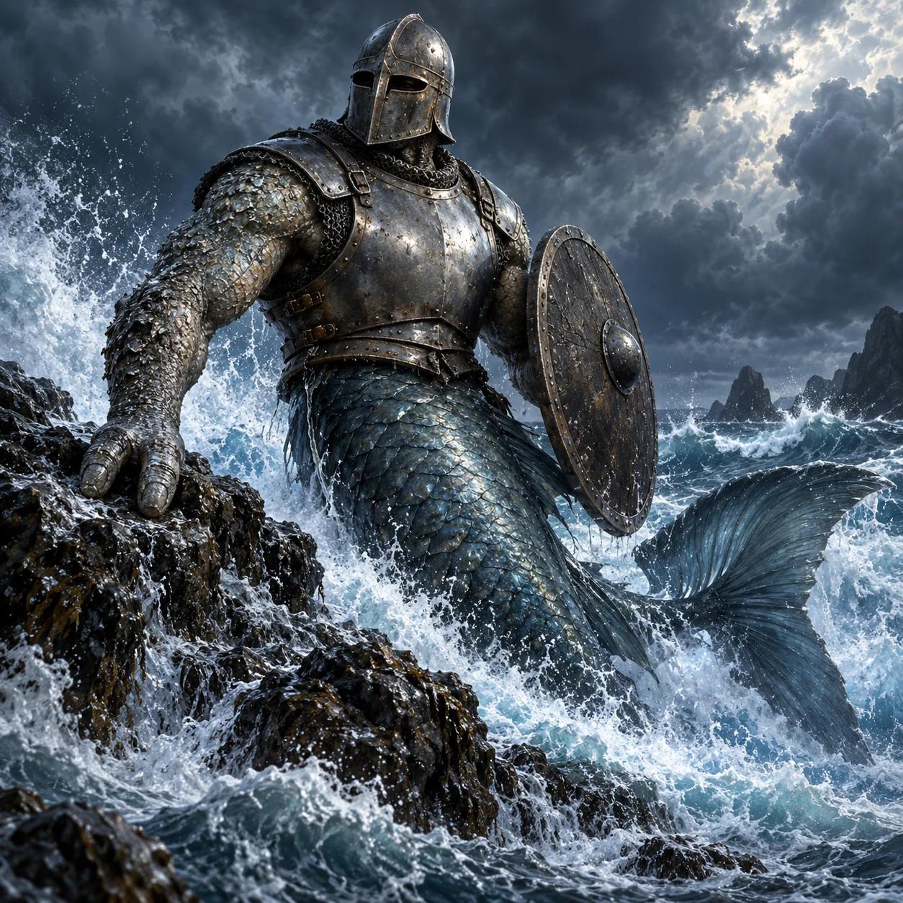
Medieval armed sea-knight with rough skin, thick two-fingered arms and fish tail
Aura: Resolute armored sea-knight bracing amid crashing waves, low viewpoint and dramatic storm light.
Audit ciri dan sumber
- Armed knight-like upper body joined to a fish tail; no legs
- Hard rough skin, thick arms with two fingers and shield
- Preserve physical sea spray and storm composition; no generic magical envelope
Inspected original contact preview: natural wave spray around solid fish-tailed armored knight, two thick fingers on visible hand and shield; no unsupported glow or energy envelope. Presence arises from braced pose and storm camera framing.
Review sumberUse case: stylized-concept. ONE square meticulously detailed painterly naturalistic medieval mythology illustration of ZITIRON, the SEA KNIGHT. One being with upper body like an armed medieval knight fused seamlessly at waist into ONE powerful FISH TAIL and caudal fin, NO legs. Rough hard crustlike skin visible on thick bare forearms. EACH visible hand has exactly TWO thick FINGERS, clearly separated, one grips a stout plain shield while other braces on sea rock. Plain early medieval helmet and chest armor only, no modern fantasy spikes. Entire figure framed emerging from dark storm surf. Formidable otherworldly ocean aura, silver spray and cold blue luminous currents as artistic treatment. Source skin and two-finger anatomy take priority. No trident, spear, sword, extra hands, human legs, wings, horns, text, watermark, border or collage.
Antero Vipunen
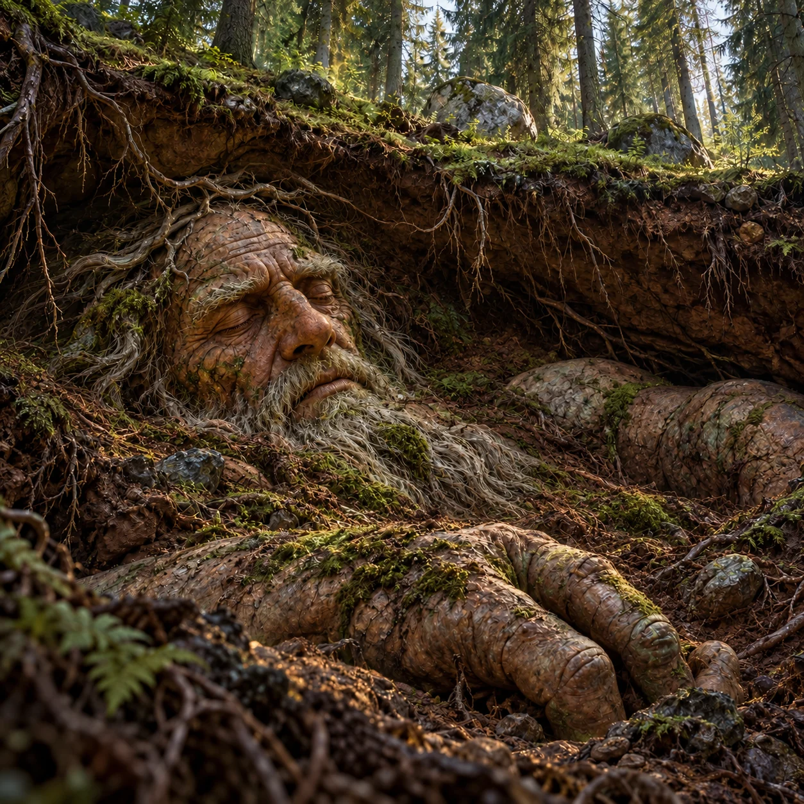
Buried human elder giant/tietäjä Antero Vipunen, spell-keeper; exact features, forest soil and visible magical knowledge aura editorial.
Aura: Ancient solemn giant buried beneath textured earth and roots, forest sun shafts and colossal face/hand scale.
Audit ciri dan sumber
- One enormous buried male elder giant beneath forest soil
- Preserve original face, gigantic hand, trees, boulders and roots
- Natural sunlight and deep earth shadows; no gold energy lines, floating light dots or body outline
Inspected edited result: gold filaments and luminous particles gone; same aged face, giant hand, soil, moss, roots and tree scale retained. Natural daylight through forest creates solemn presence without magical wrapping.
Review sumberUse case: precise-object-edit. Input image 1 is buried Antero Vipunen edit target. Remove the generic decorative gold magic lines, scattered glowing dots and luminous aura outlining face, beard and hand. Reconstruct ordinary earth, roots, moss, beard strands and skin in their place. Preserve this exact ancient male giant face and enormous hand lying buried beneath the forest ground, face identity, roots, boulders, trees, proportions, cross-section scene and square composition. Source says he knows valuable spells; this scene should show him resting beneath earth rather than actively casting, so no magical overlay is necessary. Convey ancient depth, solemn presence and colossal source-supported size through low viewpoint, tactile soil, deep forest shadows and shafts of natural sunlight from above. No new runes, magic circle, text, particles, emitted glow or changed anatomy. Retain high-detail painterly realism.
Archura
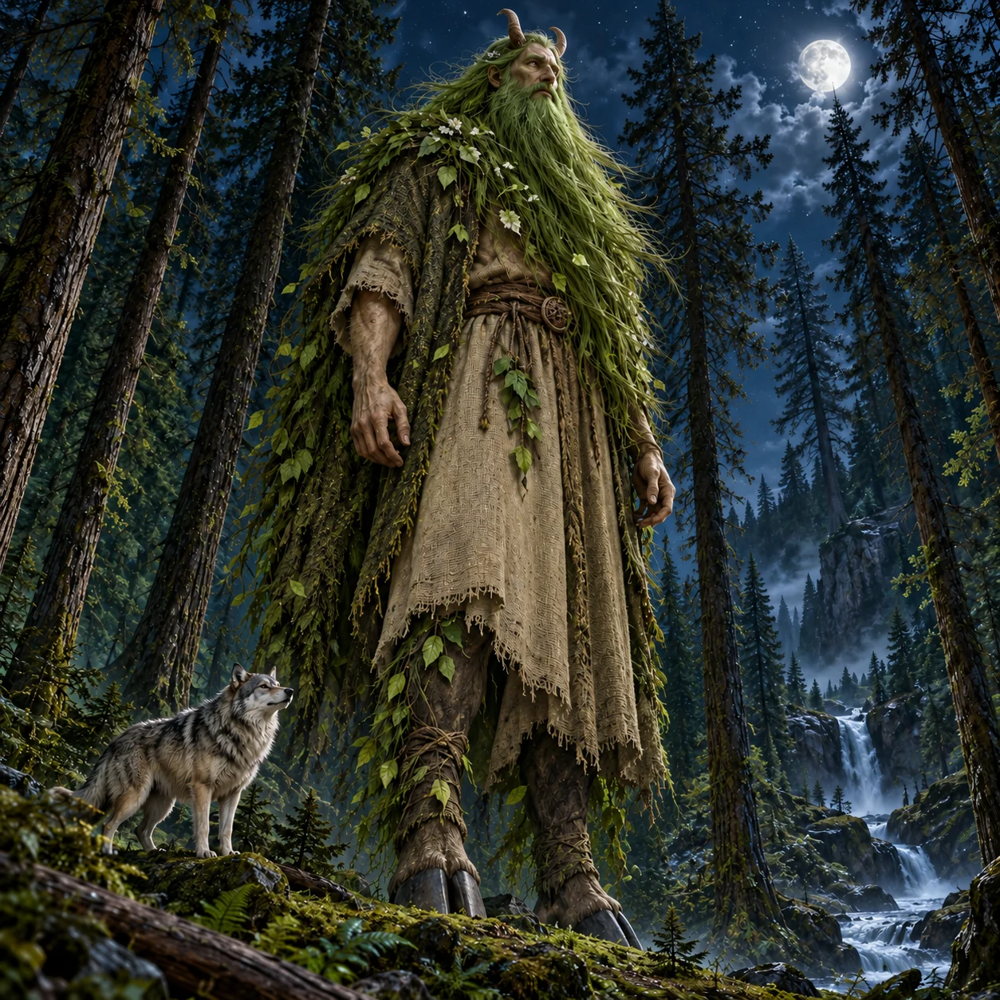
Tree-tall Archura forest spirit with living-grass hair and beard, optional horned hoofed form
Aura: Towering quiet guardian, upward viewpoint, ancient face, matte living grass and moonlit forest.
Audit ciri dan sumber
- Tree-tall male forest spirit with living grass hair and beard
- Preserve source horns and split hooves, modest clothing and wolf reference
- Moonlit scene and natural vegetation, no green energy ribbons, glowing leaves or self-lit eye/body outline
Inspected edited original: green energy filaments and bright dots removed; matte grass hair/beard, horns, split hooves, giant forest scale and wolf retained. Natural moonlight and imposing pose carry presence.
Review sumberUse case: precise-object-edit. Input image 1 is Archura edit target. Remove ONLY all luminous green magic filaments looping around the body, bright floating green energy dots, neon leaf glow, self-lit outline and artificial green eye glow. Leaves may remain as ordinary matte leaves stirred by wind, with no emitted light. Keep the SAME imposing tree-tall male forest spirit with living green grass hair and beard, horns and split hooves, rough modest clothing, wolf, stream and forest, same pose, proportions, camera and square painterly realism. Green grass is natural vegetation, not luminous. Reconstruct clean grass strands and cloth where ribbons were. Presence comes from towering size, upward camera angle, ancient face, quiet moonlit forest and natural moonlight filtered through branches. No generic aura, no magic fog, no particles, no invented anatomy. No text or watermark.
Asrai
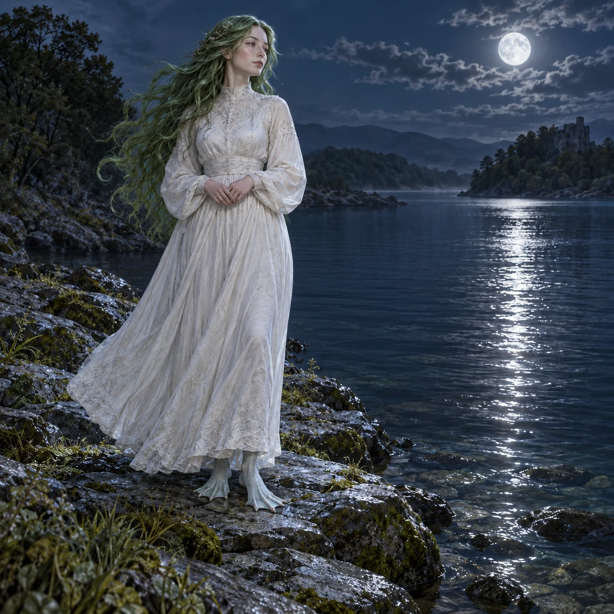
Ruth Tongue green-haired web-footed female aquatic fairy, reliability disputed
Aura: Gentle shy expression, solitary lakeside composition and natural reflected moonlight.
Audit ciri dan sumber
- Same adult pale gentle female fairy with green hair and webbed feet
- Opaque modest long white clothing, no fish tail or wings
- Preserve lakeside night scene; no blue ribbons, glowing dots or emitted edge aura
Inspected edited native output: no blue ribbons or floating dots remain. Same pale adult woman, green hair, modest opaque dress and visible webbed feet retained, with lake and natural moonlight.
Review sumberUse case: precise-object-edit. Input image 1 is Asrai edit target. Remove ONLY the blue luminous ribbons swirling around the woman, blue star particles and artificial emitted edge glow. Reconstruct clean lake/shore background and matte fabric where overlays were. Preserve this same adult fully clothed female aquatic fairy: natural green hair, pale gentle face, clearly webbed feet, long opaque modest white dress, exact pose, silhouette, lakeside rocks and moonlit lake, square composition. Do not change facial identity or anatomy; no fish tail, no wings, no new objects. Her quiet otherworldly presence comes from shy expression, solitary lakeside posture, green hair and webbed feet under natural moonlight, not magical VFX. Preserve restrained painterly realism and fine texture. Moon and its water reflection remain ordinary scene light. No aura envelope, luminous dust, extra light trails, text or watermark.
Baloz
Baloz evil giant from sea per c06, excludes unsupported sea-monster anatomy; warrior clothes and aura editorial.
Aura: Menacing giant emerging through real sea spray, storm sunset and coast/fortress scale.
Audit ciri dan sumber
- Same evil humanoid giant emerging from sea
- Preserve face, two arms, rugged clothes, fortress/tree reference scale
- No cyan emitted arm ribbons, glow or levitating rocks
Inspected native output: giant face/body/clothes and coastal scale preserved. Cyan energy and floating rocks gone; ordinary wave spray, storm clouds and sunset carry menace.
Review sumberUse case: precise-object-edit. Input image 1 is the sole edit target. Change only excessive aura effects while preserving character/source traits. Remove all cyan energy ribbons around both arms/body, turquoise emitted glow and floating rock fragments. Preserve identical evil male humanoid giant emerging from the sea, face, rugged warrior clothes, TWO arms, giant size, waves, fortress/tree size references, coastal setting and composition. Use only natural storm/sunset light and physical spray. Terror comes from enormous looming presence and angry face, not cyan magic. No text, watermark, new characters or objects.
Bardha
Albanian Bardha as pale nebulous woman in white among misty mountains
Aura: Quiet pale mist-softened woman against mountain fog, subdued natural moonlight.
Audit ciri dan sumber
- Same pale adult female apparition in white clothes
- Preserve mountain habitat and subtly nebulous lower silhouette
- No luminous white filaments, glitter or emitted halo
Inspected native output: all white energy spirals and stars removed. Same pale white-haired woman/dress remains, lower outline softened into ordinary mountain mist as source describes; no halo.
Review sumberUse case: precise-object-edit. Input image 1 is the sole edit target. Change only excessive aura effects while preserving character/source traits. Remove all white energy filaments spiraling around the woman, star-like particles and brilliant self-emitted halo. Preserve same pale adult female apparition, white dress, face, flowing white hair, pose, square mountain scene and proportions. Source explicitly describes a pale nebulous woman on misty mountains, so preserve a SUBTLE diffuse mist-softened lower silhouette merging with ordinary cool mountain fog, without neon edges or luminous ribbons. Use muted natural moonlight. Quiet mountain presence, no added anatomy. No text, watermark, new characters or objects.
Grant (folklore)
Gervase yearling-foal demon upright on hind legs
Aura: Uncanny upright yearling foal on dusk village street with warning dog.
Audit ciri dan sumber
- Yearling foal standing on two hind legs, both natural forelegs raised
- Preserve dog, street, pose and small eye catchlight
- No luminous body fog, filaments, glitter or eye beam
Inspected output: upright foal retains two hind legs/two raised forelegs, dog and wet dusk street. Magic fog and body glitter gone; eye is ordinary dark eye with small reflected glint, no blue beam.
Review sumberUse case: precise-object-edit. Input image 1 is the sole edit target. Change only excessive aura effects while preserving character/source traits. Remove the luminous blue-white magic fog wrapping around the foal, luminous lines, floating glitter and emitted body outline. Retain same yearling horse on TWO hind legs with both natural forelegs raised, face, street, dog, sunset and composition. Source sparkling eyes may keep a tiny subtle light-catching eye glint, but remove the bright blue eye beam/starburst. Reconstruct natural fur and cobbled street in overlay areas. Uncanny rearing pose, warning dog and dusk shadows convey presence; no fire or magic envelope. No text, watermark, new characters or objects.
Witches of Anaga
Adult female Anaga coven at documented ridge bonfire dances; clothing and visible magic editorial, no unsupported vampire fangs.
Aura: Intense adult coven dance lit by actual bonfire on dark Anaga coastal ridge.
Audit ciri dan sumber
- Same three fully clothed adult women in bonfire dance
- Preserve faces, poses, mountain coast and physical bonfire
- Only natural bonfire embers, no body energy ribbons or artificial moon glow
Inspected native output: three adult women, dance poses, opaque clothes and bonfire preserved. Purple/red energy ribbons removed; modest combustion embers and natural firelight remain. Moon has subdued ordinary appearance.
Review sumberUse case: precise-object-edit. Input image 1 is the sole edit target. Change only excessive aura effects while preserving character/source traits. Remove purple/red neon energy ribbons wrapping around all three women and circling the fire, decorative particles and artificial glowing moon. Keep the physical bonfire, modestly fully clothed adult women, their faces and dance poses, Anaga mountain coast, composition and square painterly realism. Retain only modest natural embers directly rising from the real bonfire and warm reflected firelight; distant moon becomes ordinary subdued moon. Source supports coven bonfire dance, not energy ribbons. Ritual dread through intense expressions, night shadows and framing. No text, watermark, new characters or objects.
Zburător
Romanian Zburător as a handsome adult male ghost appearing alone at midnight
Aura: Handsome ominous adult ghost standing unnaturally still in empty moonlit village.
Audit ciri dan sumber
- Same handsome adult human-shaped male ghost, fully clothed
- Preserve facial identity, stance, midnight village and camera
- No violet aura, emitted clothing/skin glow or particles
Inspected edited output: identical handsome adult face and clothed human form remain. Purple cloud/ribbons/particles completely removed; natural moonlight and empty village shadows carry menace.
Review sumberUse case: precise-object-edit. Input image 1 is the sole edit target. Change only excessive aura effects while preserving character/source traits. Remove all violet energy fog, luminous filaments, magic particles and purple emitted skin/clothing glow surrounding the man. Reconstruct unchanged dark village and garment fabric underneath. Preserve same handsome adult male ghost identity, ominous expression, modest full clothing, pose, human anatomy, midnight moonlit lane, camera and composition. Convey spectral dread through unnatural stillness, cold natural moonlight and empty village shadows. No glow, aura envelope or new anatomy; maintain fine painterly detail. No text, watermark, new characters or objects.
Kurupi
Modest adult short hairy backward-footed Guarani Kurupi, defining genital feature concealed
Aura: Fierce short hairy male in cramped forest, backward feet and dim natural canopy light.
Audit ciri dan sumber
- Short ugly hairy adult male with modest opaque waist covering
- Backward-pointing feet preserved with heels facing camera
- No green magic ribbons, emitted eyes or foliage glitter
Inspected native output: short hairy adult man, modest waist covering, backwards feet with visible forward-facing heels retained. Green emitted ribbons, dots and eye glow gone; matte hair and natural damp forest remain.
Review sumberUse case: precise-object-edit. Input image 1 is the sole edit target. Change only excessive aura effects while preserving character/source traits. Remove green luminous filaments around the man and leaves, glowing particles, artificial green outline and green self-lit eye glints. Preserve exact short ugly hairy ADULT male identity, modest opaque waist covering, backward-pointing feet with heels facing camera as currently shown, forest path, camera and proportions. Reconstruct natural matte hair, skin and leaves. He is a nature-associated being, but this portrait needs no magic light: presence through fierce expression, low forest light, cramped foliage and peculiar backwards feet. No genital exposure, no invented anatomy. No text, watermark, new characters or objects.
Lauma
Human-like Lauma with bird feet, excludes alternative animal shapes and she-goat variants; dress and aura editorial.
Aura: Quiet woodland-spirit presence through poised hands, bird talon feet, watchful gaze and atmospheric lake dusk.
Audit ciri dan sumber
- One adult humanlike woodland female spirit
- Both feet visibly bird talons
- No wings/goat features combined
- Lakeside woodland and bathhouse, natural dusk only
Actually inspected revised native contact: adult female, dress, hands, both bird talon feet and lakeside bathhouse preserved; cyan ribbons and particles removed.
Review sumberUse case: lighting-weather. Input image is EDIT TARGET. Change only magical lighting and atmospheric VFX; preserve exact identity, expression, pose, anatomy, limb counts, scale, scenery, square framing and fully modest opaque clothing. No text/watermark. Remove all pale cyan glowing ribbons and gold star particles around woman and hands/feet. Keep exact human adult woman with TWO clearly readable BIRD TALON FEET, dress, lake, old bathhouse. Ordinary dusk light and natural lake mist, no emission.
Lugat
Albanian Lugat as terrifying humanlike revenant with corpse-like skin and long fingernails
Aura: Pale looming revenant, long nails, wind-tossed hair and dark arch.
Audit ciri dan sumber
- Remove cyan magical ribbons, luminous motes, cyan body/ground glow and glowing eyes; preserve pale corpse-like human face, extremely long visible fingernails, original shroud coverage and hovering wind-riding pose (flight is source supported), hair wind movement and dark ruined arch. Wind stays ordinary air moving hair/shroud, no glowing streamlines. Frightening presence through upward stare, long claws and looming ruin.
- No generic emitted wrapping; original counts and anatomy
Native output actually inspected: cyan wrapping and motes gone; same corpse-like human revenant, long fingernails, shroud coverage, wind-tossed hair and dark arch preserved.
Review sumberUse case: precise-object-edit. Edit supplied mythology artwork. Remove cyan magical ribbons, luminous motes, cyan body/ground glow and glowing eyes; preserve pale corpse-like human face, extremely long visible fingernails, original shroud coverage and hovering wind-riding pose (flight is source supported), hair wind movement and dark ruined arch. Wind stays ordinary air moving hair/shroud, no glowing streamlines. Frightening presence through upward stare, long claws and looming ruin. Preserve exact original anatomy, counts, scale and composition. No new subjects, nudity, gore, text or watermark.
Marțolea
Goat-bodied human-headed horned and hoofed demonic form
Aura: threatening humanlike glare, shaggy goat silhouette and dark moonlit mountains
Audit ciri dan sumber
- same goat-bodied entity with humanlike head, horns, four hoofed legs and one tail, same scale and menacing pose on rocky Romanian mountain path with distant cottage
- Character presence through natural scene lighting; no emitted body aura
Native inspected: goat body with humanlike head, two horns, four hoofed legs and same threat pose preserved; luminous white-green wrapping removed, dark natural moonlit mountain/cottage scene.
Review sumberUse case: precise-object-edit. Remove ONLY unsupported effects: all luminous white-green wisps emitting from body, bright envelope, neon hair outline and magical ground glow. Preserve exactly same goat-bodied entity with humanlike head, horns, four hoofed legs and one tail, same scale and menacing pose on rocky Romanian mountain path with distant cottage; retain framing, painterly detail and clothing coverage. Character presence through threatening humanlike glare, shaggy goat silhouette and dark moonlit mountains. Restore ordinary textures, reflected real scene light, natural shadows and nonluminous distant mist. No generic emitted aura, new anatomy, characters, nudity, gore, text or watermark.
Moryana
Stern very tall white-clad uncombed-haired southeast wind woman at Volga/Caspian coast, excludes big-fish Moryana.
Aura: Stern wind spirit presence through towering white-clad woman, windblown hair, storm waves and vulnerable small boats.
Audit ciri dan sumber
- One very tall stern adult woman
- Uncombed hair and white clothes
- Volga/Caspian wind coast with boats
- Natural gale and water-walking context, no fish variant or emitted wind vortex
Actually inspected revised native contact: very tall stern woman in opaque white dress and blown uncombed hair, boats and rough water preserved; all luminous air ribbons/glitter gone.
Review sumberUse case: lighting-weather. Input image is EDIT TARGET. Change only magical lighting and atmospheric VFX; preserve exact identity, expression, pose, anatomy, limb counts, scale, scenery, square framing and fully modest opaque clothing. No text/watermark. Remove ALL luminous white-blue wind ribbons, glowing air streams and suspended glitter around woman. Keep natural rough waves, storm cloud, physically wind-blown uncombed hair and white opaque dress. Stern very tall female wind-controller; same boats and water-walking context. Wind presence through hair, cloth, wave direction and storm without luminous vortex.
Muroni

Muroni/Moroi Wallachian vampire spirit in dog form
Aura: Alert canine stare in moonlit ruined village.
Audit ciri dan sumber
- Remove all red emitted energy wisps, red magical dots, red fur contour, glowing red eyes and red light on ground. Preserve same natural shaggy dog form, four canine legs, single tail, stance, scale, facial identity and Wallachian rural ruin under moonlight. Eyes ordinary dark canine eyes with natural catchlight. Ominous presence from direct gaze, lonely ruined village and cold light.
- No generic emitted wrapping; original counts and anatomy
Native output actually inspected: same natural dog, four legs and single tail, pose and village retained; red eyes, ribbons, particles and emitted fur contour removed.
Review sumberUse case: precise-object-edit. Edit supplied mythology artwork. Remove all red emitted energy wisps, red magical dots, red fur contour, glowing red eyes and red light on ground. Preserve same natural shaggy dog form, four canine legs, single tail, stance, scale, facial identity and Wallachian rural ruin under moonlight. Eyes ordinary dark canine eyes with natural catchlight. Ominous presence from direct gaze, lonely ruined village and cold light. Preserve exact original anatomy, counts, scale and composition. No new subjects, nudity, gore, text or watermark.
Ora (mythology)
Northern Albanian golden-horned serpent Ora
Aura: Quiet protective authority through raised head, natural warm daylight and mountain stream.
Audit ciri dan sumber
- One golden-horned legless wingless serpent, exact continuous coils/head and stream setting.
- Character presence through pose/framing/natural scene light; no generic emitted aura.
Actual new output inspected in six-image contact sheet. Removed luminous ribbons, particles and emitted color fields; retained source anatomy, subject scale, physical colors and modest clothes. Tartalo has exactly one central eye and non-glowing physical ring; Ora retains golden horns; Sihuanaba retains horse head.
Review sumberEdit this existing mythological encyclopedia artwork to revise AURA as CHARACTER PRESENCE. REMOVE ALL generic emitted colored energy ribbons, neon outlines/halos, magical wisps, glowing particles/sparkles, colored luminous smoke/fog and body glow, including residual lines around silhouette, from creature and environment. Remove unsupported luminous eyes, retain normal natural eyes and reflections. Do not replace effects with white magic or fireflies. Use natural scene light only. Character presence: Quiet protective authority through raised head, natural warm daylight and mountain stream. Preserve EXACT subject anatomy/counts/scale, identity, pose, perspective, scene, adult modest clothing and concealment. Critical invariants: One golden-horned legless wingless serpent, exact continuous coils/head and stream setting. Retain detailed painterly naturalism, keep source physical colors/materials. No additional creatures, no text/watermark.
Rokita (folklore)

Rokita documented cat shapeshift, not Łęczyca general/Boruta iconography; coat/stable/aura editorial.
Aura: Hostile tense stalking pose, ordinary cat eye reflections, deep night shadows and dim barn lantern.
Audit ciri dan sumber
- One coherent cat shapeshift, exact feline limbs/tail, unharmed cow/barn.
- Character presence through pose/framing/natural scene light; no generic emitted aura.
Actual new output inspected in six-image contact sheet. Removed luminous ribbons, particles and emitted color fields; retained source anatomy, subject scale, physical colors and modest clothes. Tartalo has exactly one central eye and non-glowing physical ring; Ora retains golden horns; Sihuanaba retains horse head.
Review sumberEdit this existing mythological encyclopedia artwork to revise AURA as CHARACTER PRESENCE. REMOVE ALL generic emitted colored energy ribbons, neon outlines/halos, magical wisps, glowing particles/sparkles, colored luminous smoke/fog and body glow, including residual lines around silhouette, from creature and environment. Remove unsupported luminous eyes, retain normal natural eyes and reflections. Do not replace effects with white magic or fireflies. Use natural scene light only. Character presence: Hostile tense stalking pose, ordinary cat eye reflections, deep night shadows and dim barn lantern. Preserve EXACT subject anatomy/counts/scale, identity, pose, perspective, scene, adult modest clothing and concealment. Critical invariants: One coherent cat shapeshift, exact feline limbs/tail, unharmed cow/barn. Retain detailed painterly naturalism, keep source physical colors/materials. No additional creatures, no text/watermark.
Sigmund

Sigmund in his Völsunga saga werewolf period, fully wolf form
Aura: Predatory outlaw tension through low stance, cold moonlight and dark Norse woods.
Audit ciri dan sumber
- One fully quadrupedal transformed wolf, same paws/face/tail and forest.
- Character presence through pose/framing/natural scene light; no generic emitted aura.
Actual new output inspected in six-image contact sheet. Removed luminous ribbons, particles and emitted color fields; retained source anatomy, subject scale, physical colors and modest clothes. Tartalo has exactly one central eye and non-glowing physical ring; Ora retains golden horns; Sihuanaba retains horse head.
Review sumberEdit this existing mythological encyclopedia artwork to revise AURA as CHARACTER PRESENCE. REMOVE ALL generic emitted colored energy ribbons, neon outlines/halos, magical wisps, glowing particles/sparkles, colored luminous smoke/fog and body glow, including residual lines around silhouette, from creature and environment. Remove unsupported luminous eyes, retain normal natural eyes and reflections. Do not replace effects with white magic or fireflies. Use natural scene light only. Character presence: Predatory outlaw tension through low stance, cold moonlight and dark Norse woods. Preserve EXACT subject anatomy/counts/scale, identity, pose, perspective, scene, adult modest clothing and concealment. Critical invariants: One fully quadrupedal transformed wolf, same paws/face/tail and forest. Retain detailed painterly naturalism, keep source physical colors/materials. No additional creatures, no text/watermark.
Sihuanaba
Horse-headed adult female water spirit after true-form revelation
Aura: Horror from unsettling horse head glance, black river shadows and restrained moonlight.
Audit ciri dan sumber
- Adult human female body with horse head, long hair, existing modest dress and washing cloth; no skull mixture.
- Character presence through pose/framing/natural scene light; no generic emitted aura.
Actual new output inspected in six-image contact sheet. Removed luminous ribbons, particles and emitted color fields; retained source anatomy, subject scale, physical colors and modest clothes. Tartalo has exactly one central eye and non-glowing physical ring; Ora retains golden horns; Sihuanaba retains horse head.
Review sumberEdit this existing mythological encyclopedia artwork to revise AURA as CHARACTER PRESENCE. REMOVE ALL generic emitted colored energy ribbons, neon outlines/halos, magical wisps, glowing particles/sparkles, colored luminous smoke/fog and body glow, including residual lines around silhouette, from creature and environment. Remove unsupported luminous eyes, retain normal natural eyes and reflections. Do not replace effects with white magic or fireflies. Use natural scene light only. Character presence: Horror from unsettling horse head glance, black river shadows and restrained moonlight. Preserve EXACT subject anatomy/counts/scale, identity, pose, perspective, scene, adult modest clothing and concealment. Critical invariants: Adult human female body with horse head, long hair, existing modest dress and washing cloth; no skull mixture. Retain detailed painterly naturalism, keep source physical colors/materials. No additional creatures, no text/watermark.
Simonside Dwarfs
Grice1944 short Simonside Duergar in lambskin coat, moleskin trousers, feathered moss hat; face/aura editorial.
Aura: Menace from ugly scowl, close low view and natural cold moor light.
Audit ciri dan sumber
- Short dwarf, lambskin coat, moleskin trousers, moss hat with feather, exact proportions.
- Character presence through pose/framing/natural scene light; no generic emitted aura.
Actual new output inspected in six-image contact sheet. Removed luminous ribbons, particles and emitted color fields; retained source anatomy, subject scale, physical colors and modest clothes. Tartalo has exactly one central eye and non-glowing physical ring; Ora retains golden horns; Sihuanaba retains horse head.
Review sumberEdit this existing mythological encyclopedia artwork to revise AURA as CHARACTER PRESENCE. REMOVE ALL generic emitted colored energy ribbons, neon outlines/halos, magical wisps, glowing particles/sparkles, colored luminous smoke/fog and body glow, including residual lines around silhouette, from creature and environment. Remove unsupported luminous eyes, retain normal natural eyes and reflections. Do not replace effects with white magic or fireflies. Use natural scene light only. Character presence: Menace from ugly scowl, close low view and natural cold moor light. Preserve EXACT subject anatomy/counts/scale, identity, pose, perspective, scene, adult modest clothing and concealment. Critical invariants: Short dwarf, lambskin coat, moleskin trousers, moss hat with feather, exact proportions. Retain detailed painterly naturalism, keep source physical colors/materials. No additional creatures, no text/watermark.
Tartalo
Basque Tartalo as enormous one-eyed cave-dwelling giant with magic ring
Aura: Massive cave menace through size, snarling pose and natural opening light.
Audit ciri dan sumber
- Exactly one central eye; colossal humanlike giant, source ring remains physical NON-glowing, sheep/cave.
- Character presence through pose/framing/natural scene light; no generic emitted aura.
Actual new output inspected in six-image contact sheet. Removed luminous ribbons, particles and emitted color fields; retained source anatomy, subject scale, physical colors and modest clothes. Tartalo has exactly one central eye and non-glowing physical ring; Ora retains golden horns; Sihuanaba retains horse head.
Review sumberEdit this existing mythological encyclopedia artwork to revise AURA as CHARACTER PRESENCE. REMOVE ALL generic emitted colored energy ribbons, neon outlines/halos, magical wisps, glowing particles/sparkles, colored luminous smoke/fog and body glow, including residual lines around silhouette, from creature and environment. Remove unsupported luminous eyes, retain normal natural eyes and reflections. Do not replace effects with white magic or fireflies. Use natural scene light only. Character presence: Massive cave menace through size, snarling pose and natural opening light. Preserve EXACT subject anatomy/counts/scale, identity, pose, perspective, scene, adult modest clothing and concealment. Critical invariants: Exactly one central eye; colossal humanlike giant, source ring remains physical NON-glowing, sheep/cave. Retain detailed painterly naturalism, keep source physical colors/materials. No additional creatures, no text/watermark.
Tiddy Mun
Balfour child-sized adult old man fen spirit
Aura: A tiny aged guardian half hidden by ordinary low fen mist under natural dusk light.
Audit ciri dan sumber
- Child-sized OLD ADULT man, long tangled white hair, matted white beard, grey gown and walking stick; retain natural NON-luminous fen mist.
- Character presence through pose/framing/natural light; no generic emitted aura.
Actual new image inspected in five-image contact sheet. Generic luminous effects removed. Tiddy Mun retains ordinary low fen fog; Trauco has footless rounded stumps; Vedmak clean shaven with small tail; Vishap continuous legless serpent with two wings; Zana exactly three golden-horned goats. Anatomy, scale and modest clothing preserved.
Review sumberEdit this existing artwork: change aura to CHARACTER PRESENCE. Remove all generic emitted halos, luminous outlines, energy ribbons, glowing particles, colored luminous fog and swirling light around body and environment. No replacement white magic/fireflies. Natural light and ordinary NON-luminous weather only. Keep natural low fen fog but REMOVE the emitted white luminous spiral. Presence: A tiny aged guardian half hidden by ordinary low fen mist under natural dusk light. Preserve anatomy, counts, scale, pose, subject, scene, modest adult clothing and style. Critical invariants: Child-sized OLD ADULT man, long tangled white hair, matted white beard, grey gown and walking stick; retain natural NON-luminous fen mist. No text/watermark.
Trauco
Small80cm ugly ogre-faced footless-stump Trauco, clothing and emitted forest aura editorial.
Aura: Uneasy ogre stare and hunched small figure among vast dim forest trees.
Audit ciri dan sumber
- Dwarf-like no taller than80cm, ugly ogre face, EXACTLY two rounded leg STUMPS without feet/toes/shoes, existing modest clothing.
- Character presence through pose/framing/natural light; no generic emitted aura.
Actual new image inspected in five-image contact sheet. Generic luminous effects removed. Tiddy Mun retains ordinary low fen fog; Trauco has footless rounded stumps; Vedmak clean shaven with small tail; Vishap continuous legless serpent with two wings; Zana exactly three golden-horned goats. Anatomy, scale and modest clothing preserved.
Review sumberEdit this existing artwork: change aura to CHARACTER PRESENCE. Remove all generic emitted halos, luminous outlines, energy ribbons, glowing particles, colored luminous fog and swirling light around body and environment. No replacement white magic/fireflies. Natural light and ordinary NON-luminous weather only. Presence: Uneasy ogre stare and hunched small figure among vast dim forest trees. Preserve anatomy, counts, scale, pose, subject, scene, modest adult clothing and style. Critical invariants: Dwarf-like no taller than80cm, ugly ogre face, EXACTLY two rounded leg STUMPS without feet/toes/shoes, existing modest clothing. No text/watermark.
Tugarin
Tugarin in humanlike giant bogatyr form with fiery serpents around torso
Aura: Giant warrior menace through body scale, stance and storm landscape; torso serpent fire is source-specific.
Audit ciri dan sumber
- Humanlike giant bogatyr with two arms and two legs; ordinary horse establishes immense scale.
- Source c05 fiery snakes visibly covering torso with their flame and smoke.
- Character presence from stance and storm atmosphere; no extra generic halos/ribbons/particles.
Actual original individually inspected: massive humanlike warrior with intrinsic fiery snakes covering torso, horse scale and storm setting; flame/smoke source c05. No unrelated halo.
Review sumberTUGARIN in his HUMANLIKE GIANT BOGATYR form, not a reptilian dragon. A tremendously large coarse adult male warrior, two human arms and two human legs, modest opaque dark medieval Slavic tunic. His TORSO is encircled by several vivid FIERY SNAKES whose serpent heads and glowing sinuous bodies are clearly identifiable as living supernatural flame. He stands beside a normal horse on the Russian steppe, visibly much larger than an ordinary man, no victim or battle opponent. Bright magical fire snakes cast red-gold radiance and emitted smoky luminous wisps wrap the giant; menacing storm darkness conveys embodiment of evil. No real wings or paper wings, no horns, dragonhead, extra arms, graphic burn wounds or invented armor. ONE square premium detailed painterly mythology encyclopedia image, whole identifying subject inside frame. No text, watermark, border, gore or victims.
Vedmak
Born beardless male sorcerer with small tail
Aura: Intent quiet male sorcerer beside herbs, natural dusk light and deep shadow.
Audit ciri dan sumber
- Adult male WITHOUT beard or moustache, SMALL TAIL behind waist, existing modest white tunic and herbs bench.
- Character presence through pose/framing/natural light; no generic emitted aura.
Actual new image inspected in five-image contact sheet. Generic luminous effects removed. Tiddy Mun retains ordinary low fen fog; Trauco has footless rounded stumps; Vedmak clean shaven with small tail; Vishap continuous legless serpent with two wings; Zana exactly three golden-horned goats. Anatomy, scale and modest clothing preserved.
Review sumberEdit this existing artwork: change aura to CHARACTER PRESENCE. Remove all generic emitted halos, luminous outlines, energy ribbons, glowing particles, colored luminous fog and swirling light around body and environment. No replacement white magic/fireflies. Natural light and ordinary NON-luminous weather only. Presence: Intent quiet male sorcerer beside herbs, natural dusk light and deep shadow. Preserve anatomy, counts, scale, pose, subject, scene, modest adult clothing and style. Critical invariants: Adult male WITHOUT beard or moustache, SMALL TAIL behind waist, existing modest white tunic and herbs bench. No text/watermark.
Vishap
Attested winged-snake Vishap, not composite-animal alternatives; wing materials/color/aura editorial.
Aura: Colossal power through mountain/lake scale, raised serpent head and natural cloud light.
Audit ciri dan sumber
- One continuous LEGLESS winged snake, EXACTLY TWO wings, no legs, mountain lake scale.
- Character presence through pose/framing/natural light; no generic emitted aura.
Actual new image inspected in five-image contact sheet. Generic luminous effects removed. Tiddy Mun retains ordinary low fen fog; Trauco has footless rounded stumps; Vedmak clean shaven with small tail; Vishap continuous legless serpent with two wings; Zana exactly three golden-horned goats. Anatomy, scale and modest clothing preserved.
Review sumberEdit this existing artwork: change aura to CHARACTER PRESENCE. Remove all generic emitted halos, luminous outlines, energy ribbons, glowing particles, colored luminous fog and swirling light around body and environment. No replacement white magic/fireflies. Natural light and ordinary NON-luminous weather only. Presence: Colossal power through mountain/lake scale, raised serpent head and natural cloud light. Preserve anatomy, counts, scale, pose, subject, scene, modest adult clothing and style. Critical invariants: One continuous LEGLESS winged snake, EXACTLY TWO wings, no legs, mountain lake scale. No text/watermark.
Zana (mythology)
Albanian Zana as adult maiden by mountain stream with three golden-horned wild goats
Aura: Serene adult maiden authority in naturally lit mountain stream scene.
Audit ciri dan sumber
- Beautiful ADULT maiden fully covered modest white dress; EXACTLY THREE wild goats with physical GOLDEN HORNS, no extra goats.
- Character presence through pose/framing/natural light; no generic emitted aura.
Actual new image inspected in five-image contact sheet. Generic luminous effects removed. Tiddy Mun retains ordinary low fen fog; Trauco has footless rounded stumps; Vedmak clean shaven with small tail; Vishap continuous legless serpent with two wings; Zana exactly three golden-horned goats. Anatomy, scale and modest clothing preserved.
Review sumberEdit this existing artwork: change aura to CHARACTER PRESENCE. Remove all generic emitted halos, luminous outlines, energy ribbons, glowing particles, colored luminous fog and swirling light around body and environment. No replacement white magic/fireflies. Natural light and ordinary NON-luminous weather only. Presence: Serene adult maiden authority in naturally lit mountain stream scene. Preserve anatomy, counts, scale, pose, subject, scene, modest adult clothing and style. Critical invariants: Beautiful ADULT maiden fully covered modest white dress; EXACTLY THREE wild goats with physical GOLDEN HORNS, no extra goats. No text/watermark.
Bodach
Bodach Glas old grey man death-omen spirit
Aura: Death-omen stillness of grey old man by Highland wall under cold natural moonlight.
Audit ciri dan sumber
- Old adult grey man in grey modest clothes, exact human anatomy and wall.
- Character presence from pose, framing and natural scene light; no generic magical envelope.
Actual new output inspected in five-image contact sheet: no emitted energy ribbons/particles, natural scene light; Bodach grey old man, Caipora hairy guardian, Donas two cat-paw feet, Duppy EXACTLY THREE countable hoofed legs, Groac'h two downward walrus tusks retained. Source form, scale and adult modest clothing intact.
Review sumberEdit this existing mythological artwork to replace generic magical AURA with CHARACTER PRESENCE. REMOVE ALL emitted wisps, neon outlines, halos, energy ribbons, glowing particles/sparks and luminous colored fog from body and environment. Remove glowing eyes; retain normal natural eyes/reflections. Make waterfall natural water, no emitted water glow. No new magic/fireflies. Presence: Death-omen stillness of grey old man by Highland wall under cold natural moonlight. Preserve EXACT anatomy/counts/scale, subject pose, scene and modest clothing. Invariants: Old adult grey man in grey modest clothes, exact human anatomy and wall. Ordinary natural scene light only, detailed painterly realism, no text/watermark.
Caipora
Large hairy adult humanoid Caipora guardian, excludes child/dwarf alternatives and Curupira foot reversal; garment/aura editorial.
Aura: Protective enormous hairy guardian stance in naturally sunlit dense Brazilian forest.
Audit ciri dan sumber
- Large hairy adult humanoid, twoarms/twolegs, FORWARD feet, plant staff and existing concealment.
- Character presence from pose, framing and natural scene light; no generic magical envelope.
Actual new output inspected in five-image contact sheet: no emitted energy ribbons/particles, natural scene light; Bodach grey old man, Caipora hairy guardian, Donas two cat-paw feet, Duppy EXACTLY THREE countable hoofed legs, Groac'h two downward walrus tusks retained. Source form, scale and adult modest clothing intact.
Review sumberEdit this existing mythological artwork to replace generic magical AURA with CHARACTER PRESENCE. REMOVE ALL emitted wisps, neon outlines, halos, energy ribbons, glowing particles/sparks and luminous colored fog from body and environment. Remove glowing eyes; retain normal natural eyes/reflections. Make waterfall natural water, no emitted water glow. No new magic/fireflies. Presence: Protective enormous hairy guardian stance in naturally sunlit dense Brazilian forest. Preserve EXACT anatomy/counts/scale, subject pose, scene and modest clothing. Invariants: Large hairy adult humanoid, twoarms/twolegs, FORWARD feet, plant staff and existing concealment. Ordinary natural scene light only, detailed painterly realism, no text/watermark.
Djall
Fire demon physically manifested as a moving inferno
Aura: Danger through overwhelming moving fire mass against tiny rocky landscape.
Audit ciri dan sumber
- Entity is a moving inferno, source c05; no invented humanoid limbs/horns/wings.
- Retain intrinsic fire, embers and smoke of inferno manifestation; no unrelated neon energy envelope.
- Danger and scale through composition and rocky landscape.
Actual original individually inspected: entity is moving inferno, explicitly documented source c05, no separate humanoid or added nonfire magical envelope.
Review sumberDepict Djall of Albanian folklore in the source-described terrifying physical manifestation as a moving inferno. The creature IS an upright swirling mass of raging supernatural fire with a deep dark core, standing alone in a desolate rocky clearing at night, heat twisting the surrounding air. Do not give the flames a humanoid skeleton, arms, legs, a face, horns, wings, or animal anatomy. Shape the fire into a coherent turbulent advancing presence, not a recognizable person. Fierce orange-white luminous tendrils and sparks emanate far from the fiery mass into the oppressive darkness. Frightening sense of moving, living fire and mortal danger, no burning people or buildings. Square premium dark-fantasy encyclopedia illustration, highly detailed painterly realism, one coherent creature, entire identifying silhouette inside frame, clear anatomy, dramatic atmosphere. Explicit emitted magical aura, not merely ambient light. No text, caption, border, watermark, gore, victims, or sexual elements.
Doñas de fuera
Single Sicilian beautiful female fairy with cat-paw feet
Aura: Strange quiet glance and distinctive feet in moonlit Sicilian grove.
Audit ciri dan sumber
- Beautiful ADULT female, modest white dress, EXACTLY TWO CAT-PAW FEET; no human feet/horsehooves.
- Character presence from pose, framing and natural scene light; no generic magical envelope.
Actual new output inspected in five-image contact sheet: no emitted energy ribbons/particles, natural scene light; Bodach grey old man, Caipora hairy guardian, Donas two cat-paw feet, Duppy EXACTLY THREE countable hoofed legs, Groac'h two downward walrus tusks retained. Source form, scale and adult modest clothing intact.
Review sumberEdit this existing mythological artwork to replace generic magical AURA with CHARACTER PRESENCE. REMOVE ALL emitted wisps, neon outlines, halos, energy ribbons, glowing particles/sparks and luminous colored fog from body and environment. Remove glowing eyes; retain normal natural eyes/reflections. Make waterfall natural water, no emitted water glow. No new magic/fireflies. Presence: Strange quiet glance and distinctive feet in moonlit Sicilian grove. Preserve EXACT anatomy/counts/scale, subject pose, scene and modest clothing. Invariants: Beautiful ADULT female, modest white dress, EXACTLY TWO CAT-PAW FEET; no human feet/horsehooves. Ordinary natural scene light only, detailed painterly realism, no text/watermark.
Duppy

Duppy malicious Three-footed Horse example, excludes Rolling Calf/Ol'Hige forms; spectral color/environment editorial.
Aura: Dread through still threatening three-legged horse on deserted dark Caribbean path, natural moonlight.
Audit ciri dan sumber
- EXACTLY THREE LEGS and THREE HOOFS: twoforelegs plus ONE centered hindleg. No fourthleg/shadowleg. Horsehead/tail.
- Character presence from pose, framing and natural scene light; no generic magical envelope.
Actual new output inspected in five-image contact sheet: no emitted energy ribbons/particles, natural scene light; Bodach grey old man, Caipora hairy guardian, Donas two cat-paw feet, Duppy EXACTLY THREE countable hoofed legs, Groac'h two downward walrus tusks retained. Source form, scale and adult modest clothing intact.
Review sumberEdit this existing mythological artwork to replace generic magical AURA with CHARACTER PRESENCE. REMOVE ALL emitted wisps, neon outlines, halos, energy ribbons, glowing particles/sparks and luminous colored fog from body and environment. Remove glowing eyes; retain normal natural eyes/reflections. Make waterfall natural water, no emitted water glow. No new magic/fireflies. Presence: Dread through still threatening three-legged horse on deserted dark Caribbean path, natural moonlight. Preserve EXACT anatomy/counts/scale, subject pose, scene and modest clothing. Invariants: EXACTLY THREE LEGS and THREE HOOFS: twoforelegs plus ONE centered hindleg. No fourthleg/shadowleg. Horsehead/tail. Ordinary natural scene light only, detailed painterly realism, no text/watermark.
Groac'h
Old Breton water fairy with walrus teeth
Aura: Hostile ancient crone in dark coastal cave with naturally lit water.
Audit ciri dan sumber
- Elderly female humanlike crone with EXACTLY TWO downward walrus tusks, fully covered aged greenrobes and shawl, twoarms/twolegs.
- Character presence from pose, framing and natural scene light; no generic magical envelope.
Actual new output inspected in five-image contact sheet: no emitted energy ribbons/particles, natural scene light; Bodach grey old man, Caipora hairy guardian, Donas two cat-paw feet, Duppy EXACTLY THREE countable hoofed legs, Groac'h two downward walrus tusks retained. Source form, scale and adult modest clothing intact.
Review sumberEdit this existing mythological artwork to replace generic magical AURA with CHARACTER PRESENCE. REMOVE ALL emitted wisps, neon outlines, halos, energy ribbons, glowing particles/sparks and luminous colored fog from body and environment. Remove glowing eyes; retain normal natural eyes/reflections. Make waterfall natural water, no emitted water glow. No new magic/fireflies. Presence: Hostile ancient crone in dark coastal cave with naturally lit water. Preserve EXACT anatomy/counts/scale, subject pose, scene and modest clothing. Invariants: Elderly female humanlike crone with EXACTLY TWO downward walrus tusks, fully covered aged greenrobes and shawl, twoarms/twolegs. Ordinary natural scene light only, detailed painterly realism, no text/watermark.
Gwragedd Annwn
Welsh female lake fairy in green
Aura: poised serene lake-maiden expression and natural moonlit ripples
Audit ciri dan sumber
- same ONE adult female Welsh lake fairy in long modest green dress, natural human anatomy without fish tail, same face, hands, scale, walking pose, rocks and moonlit lake
- Character presence through natural scene lighting; no emitted body aura
Native inspected: adult green-dressed lake maiden with human anatomy, same face and walking pose; all green emitted ribbons/particles removed, ordinary moonlit water ripples.
Review sumberUse case: precise-object-edit. Remove ONLY unsupported effects: all green luminous body-wrapping ribbons, glowing particles, neon dress outline and magical bright water ring. Preserve exactly same ONE adult female Welsh lake fairy in long modest green dress, natural human anatomy without fish tail, same face, hands, scale, walking pose, rocks and moonlit lake; retain framing, painterly detail and clothing coverage. Character presence through poised serene lake-maiden expression and natural moonlit ripples. Restore ordinary textures, reflected real scene light, natural shadows and nonluminous distant mist. No generic emitted aura, new anatomy, characters, nudity, gore, text or watermark.
Jentil
Hairy mountain-to-mountain stone-throwing, sea-walking Jentil giant; exact height and clothing editorial.
Aura: Ancient giant presence through immense hairy body, rock-throwing stance, mountains and sea scale references.
Audit ciri dan sumber
- One immense hairy humanoid giant
- Mountain/sea/forest scale demonstrates source enormity
- Huge rock held by both hands for mountain-to-mountain throw
- Natural sunset and waves only, no emitted gold aura
Actually inspected revised native contact: Immense hairy source giant, both hands on huge rock and opaque loin wrap preserved; golden aura removed, warm sunset reflections and sea spray remain.
Review sumberUse case: lighting-weather. Supplied image is EDIT TARGET. Change ONLY unsupported magical lighting/VFX. Preserve exact character identities, faces, expressions, poses, coherent anatomy and limb counts, source scale, opaque modest clothing, camera, square framing and environment. No text/watermark. Remove all emitted golden energy filaments, neon outline and glitter around giant, boulder, arms and legs. Preserve immense hairy human giant about to throw huge rock, physically held in BOTH HANDS, mountain/sea/forest scale, same sunset. Natural warm sunset highlights and ordinary sea spray only; giant and rock do not emit light.
Maggy Moulach
Two-foot-tall Hairy Meg brownie
Aura: Tiny hairy female beside full-size chair in warm castle room.
Audit ciri dan sumber
- Remove yellow-green glowing ribbons, emitted body envelope, magical particles and yellow-green ground light. Preserve same little adult female brownie, about two feet tall next to normal chair, thick hair and clearly hairy hands, face, clothing coverage, exact stance/scale, chair, chessboard and warm castle room. Keep actual fireplace/candle light and natural reflection. Friendly uncanny presence from small stature and hairy hands.
- No generic emitted wrapping; original counts and anatomy
Native output actually inspected: female brownie still about two feet against chair, thick hair/hairy hands, coverage and castle room retained; yellow-green wrapping removed.
Review sumberUse case: precise-object-edit. Edit supplied mythology artwork. Remove yellow-green glowing ribbons, emitted body envelope, magical particles and yellow-green ground light. Preserve same little adult female brownie, about two feet tall next to normal chair, thick hair and clearly hairy hands, face, clothing coverage, exact stance/scale, chair, chessboard and warm castle room. Keep actual fireplace/candle light and natural reflection. Friendly uncanny presence from small stature and hairy hands. Preserve exact original anatomy, counts, scale and composition. No new subjects, nudity, gore, text or watermark.
Nicnevin
Scottish witch/fairy queen in long grey mantle with water-to-rock wand
Aura: commanding wand gesture, wind-blown grey mantle and sombre Scottish landscape
Audit ciri dan sumber
- same adult female witch/fairy queen in long modest grey mantle with wand, same face, human anatomy, pose, scale, Scottish stream/rock landscape
- No generic emitted body aura
Native inspected: same grey-mantled queen with wand and natural anatomy; all body wrapping gone. Tiny wand-tip transformation glimmer at stream and rocks retained as supported water-to-rock ability.
Review sumberUse case: precise-object-edit. Remove ONLY unsupported effects: all white-blue ribbons and luminous wisps wrapping her hair, body and clothes; retain only a VERY small restrained pale glimmer exactly at wand tip touching stream, with clearly water changing into ordinary rocks, supported water-to-rock magic. Preserve exactly same adult female witch/fairy queen in long modest grey mantle with wand, same face, human anatomy, pose, scale, Scottish stream/rock landscape, framing, detail and clothing coverage. Character presence through commanding wand gesture, wind-blown grey mantle and sombre Scottish landscape. Natural texture, ordinary reflected scene light and shadows. No generic emitted aura, new anatomy, subjects, rat-headed hybrid, gore, text or watermark.
Portunes
Gervase/Keightley tiny old-man Portune underhalf-inch form; chooses literal manuscript size despite scholarly dispute, clothing and aura editorial.
Aura: Gentle household presence through wrinkled kindly face, warming hands, minuscule scale beside grain and needle.
Audit ciri dan sumber
- Tiny under1.27cm old-man fairy
- Wrinkled cheeks, humanlike limbs
- Grain/needle macro scale
- Physical hearth warming, no magical body aura
Actually inspected revised native contact: Tiny old man, grain/needle macro scale, clothes and warming pose preserved; orbiting loops/stars gone, physical stove illuminates normal ash/floor.
Review sumberUse case: lighting-weather. Supplied image is EDIT TARGET. Change ONLY unsupported magical lighting/VFX. Preserve exact character identities, faces, expressions, poses, coherent anatomy and limb counts, source scale, opaque modest clothing, camera, square framing and environment. No text/watermark. Remove all magical golden loops and floating star particles around tiny old man. Retain physical hearth flame and a few combustion embers ONLY at fire. Preserve tiny under half-inch wrinkled old man beside large grain and needle macro scale, hands warming near stove. Ordinary reflected firelight, no body halo or luminous floating aura.
Shtriga
Hateful-eyed caped elderly Albanian witch
Aura: Elderly hateful gaze and threatening raised hand in dark forest.
Audit ciri dan sumber
- Remove crimson/magenta emitted ribbons, finger lightning, body envelope, motes and glowing eye color. General witch powers do not justify generic wrapping. Preserve same elderly woman, hateful gaze, disfigured wrinkled face without wounds, long dark cape coverage, two hands, threatening hand pose and dark forest. Natural eyes, natural cold moonlight; no new effects.
- No generic emitted wrapping; preserve original anatomy and counts
Native edited output actually inspected: same elderly wrinkled witch, hateful gaze, cape and threatening hand gesture; red/magenta effects gone.
Review sumberUse case: precise-object-edit. Edit supplied mythology artwork. Remove crimson/magenta emitted ribbons, finger lightning, body envelope, motes and glowing eye color. General witch powers do not justify generic wrapping. Preserve same elderly woman, hateful gaze, disfigured wrinkled face without wounds, long dark cape coverage, two hands, threatening hand pose and dark forest. Natural eyes, natural cold moonlight; no new effects. Preserve original composition, anatomy, count, size and identity. No added subjects, nudity, text or watermark.
Solomonari
Tall red-haired human Romanian learned weather sorcerer
Aura: bold storm-commanding human gesture, wind-blown red hair and dark storm landscape
Audit ciri dan sumber
- same tall red-haired HUMAN sorcerer in modest long white peasant robes, book in left hand, raised right hand, bag containing axe and reins, same pose, mountain panorama and scale
- No generic emitted body aura
Native inspected: tall red-haired human in white robe with book, bag, axe/reins, raised hand preserved; book/body energy ribbons gone, weather-control storm clouds/rain/lightning retained.
Review sumberUse case: precise-object-edit. Remove ONLY unsupported effects: all white-blue glowing body ribbons, luminous book wisps and magical wrap; RETAIN weather control shown by ordinary storm lightning in clouds, rainfall and thunderstorm above raised hand, without lightning wrapping human body. Preserve exactly same tall red-haired HUMAN sorcerer in modest long white peasant robes, book in left hand, raised right hand, bag containing axe and reins, same pose, mountain panorama and scale, framing, detail and clothing coverage. Character presence through bold storm-commanding human gesture, wind-blown red hair and dark storm landscape. Natural texture, ordinary reflected scene light and shadows. No generic emitted aura, new anatomy, subjects, rat-headed hybrid, gore, text or watermark.
Soucouyant
Documented nocturnal flying fireball Soucouyant; excludes skin-removal scene/daytime human appearance, village/aura editorial.
Aura: Terror through intrinsic source fireball crossing isolated Caribbean night lane and lighting trees/houses.
Audit ciri dan sumber
- One flying fireball
- No invented human face or animal form
- Caribbean nocturnal setting
- Intrinsic source fire and local combustion effects only
Actually inspected original contact: one flaming spherical entity with attached flame plume, red reflected light on village lane and trees. No invented humanoid face, unrelated neon envelope or energy rings; source explicitly fireball.
Review sumberSquare premium naturalistic painterly Caribbean folklore mythology artwork, stylized-concept. ONE SOUCOUYANT in the explicitly documented NOCTURNAL FIREBALL shapeshift, flying low above an empty Caribbean village road beneath looming silk-cotton tree. A single luminous terrifying ball of living orange-red FIRE suspended in air, no human or animal anatomy visible, no giant human face inside flames. Irregular coherent spherical fire core with streaking flames and blazing ember tail, unmistakably supernatural emitted crimson-gold aura ribbons and red glowing particles illuminate dark ground and palm trees. Extreme frightening malevolent night atmosphere, predatory approaching fireball, exquisitely painted flames and smoke. This chooses fireball form, not daytime old woman or skin-removal scene. No victims, no gore, no discarded skin, no children, no invented dragon/bird shape, no text or watermark.
Tangie
Sea spirit in seaweed-covered horse form
Aura: Seaweed-draped horse towering at stormy shore.
Audit ciri dan sumber
- Remove cyan body energy loops, glowing motes and luminous eye. Preserve same single horse, four legs, one tail, Fucus seaweed covering, wet textures, exact stance, scale and Orkney/Shetland storm coastline. Ordinary equine eye with natural catchlight and ordinary sea spray. Menace through looming stance and surf.
- No generic emitted wrapping; preserve original anatomy and counts
Native edited output actually inspected: same seaweed-covered horse, four legs and single tail in surf; cyan loops, motes and glowing eye gone.
Review sumberUse case: precise-object-edit. Edit supplied mythology artwork. Remove cyan body energy loops, glowing motes and luminous eye. Preserve same single horse, four legs, one tail, Fucus seaweed covering, wet textures, exact stance, scale and Orkney/Shetland storm coastline. Ordinary equine eye with natural catchlight and ordinary sea spray. Menace through looming stance and surf. Preserve original composition, anatomy, count, size and identity. No added subjects, nudity, text or watermark.
The Ratman of Southend
Ghostly underpass revenant of Southend urban legend, no invented rat hybrid
Aura: shadowed face and hunched posture in quiet oppressive underpass with ordinary ceiling lamps
Audit ciri dan sumber
- same ONE adult male human ghost, bedraggled modest coat and trousers, shadow-obscured non-graphic face, same wall-reaching pose, scale and tiled Southend underpass
- No generic emitted body aura
Native inspected: same male ghost in modest ragged coat, shadow-obscured face, hunched wall-reaching pose; blue smoke and floor glow removed, slight spectral translucency remains under ordinary tunnel lamps.
Review sumberUse case: precise-object-edit. Remove ONLY unsupported effects: all emitted blue smoke around body, luminous envelope, neon outline and bright floor aura; retain ghostly apparition through VERY slight translucency in coat/lower legs, no emitted light or fog. Preserve exactly same ONE adult male human ghost, bedraggled modest coat and trousers, shadow-obscured non-graphic face, same wall-reaching pose, scale and tiled Southend underpass, framing, detail and clothing coverage. Character presence through shadowed face and hunched posture in quiet oppressive underpass with ordinary ceiling lamps. Natural texture, ordinary reflected scene light and shadows. No generic emitted aura, new anatomy, subjects, rat-headed hybrid, gore, text or watermark.
Vântoase
Female Vântoase hora wind-raising spirits, humanlike anatomy and clothing editorial; explicitly no harpy-anatomy inference.
Aura: Wind-spirit presence through joined hora dance, streaming hair, flying leaves, storm skies and lake waves.
Audit ciri dan sumber
- Three adult female wind spirits
- Hora joined dance raises wind
- Forest/lake habitat
- Natural airborne leaves and wind; no harpy anatomy or emitted cyan vortex
Actually inspected revised native contact: Three adult females still joined at hands with opaque white dresses, windblown hair and physical leaves over lake; all cyan ribbons and star particles removed.
Review sumberUse case: lighting-weather. Supplied image is EDIT TARGET. Change ONLY unsupported magical lighting/VFX. Preserve exact character identities, faces, expressions, poses, coherent anatomy and limb counts, source scale, opaque modest clothing, camera, square framing and environment. No text/watermark. Remove ALL glowing cyan wind ribbons, luminous streams and glitter around THREE adult women dancing joined hands. Preserve three women, hand links, opaque white dresses, forest/lake, physical wind-blown hair and cloth, ordinary flying leaves and dusty wind from source hora dance. Wind shown by leaf movement and ripples, no neon vortex or invented bird anatomy.
Yekyua

Mammoth mother-animal shaman familiar
Aura: Massive mammoth silhouette and bright spring snowmelt.
Audit ciri dan sumber
- Remove blue-and-gold luminous ribbons, sparkles, power envelope and glowing eye. Preserve same natural mammoth anatomy, four legs, one trunk, exactly two curved tusks, huge scale, exact walking pose, fur, snow on fur and spring snowmelt landscape. Ordinary dark eye and natural golden sunlight; presence through massive mammoth scale.
- No generic emitted wrapping; preserve original anatomy and counts
Native edited output actually inspected: mammoth retained four legs, one trunk and two tusks with same scale/pose; blue/gold wrapping and glowing eye removed.
Review sumberUse case: precise-object-edit. Edit supplied mythology artwork. Remove blue-and-gold luminous ribbons, sparkles, power envelope and glowing eye. Preserve same natural mammoth anatomy, four legs, one trunk, exactly two curved tusks, huge scale, exact walking pose, fur, snow on fur and spring snowmelt landscape. Ordinary dark eye and natural golden sunlight; presence through massive mammoth scale. Preserve original composition, anatomy, count, size and identity. No added subjects, nudity, text or watermark.
Yuxa
Turkic reptilian dragon-headed two-legged barbed-tail form
Aura: menacing jaws, massive textured scales and dark watery setting
Audit ciri dan sumber
- one dragon-headed reptilian creature with exactly TWO legs and one long barbed tail, no wings, same raised head, body coils, scale, lakeside rocks and moonlit setting
- No generic emitted body aura
Native inspected: one dragon head, exactly two reptilian legs, continuous body and barbed tail preserved; turquoise emitted wrapping/eye glow gone; limited orange mouth-origin fire breath retained as supported.
Review sumberUse case: precise-object-edit. Remove ONLY unsupported effects: all turquoise magical wisps enveloping body/tail, neon outline and glowing eye; retain only a short restrained natural orange fire breath originating at mouth, explicitly source-supported, with no flame along body. Preserve exactly one dragon-headed reptilian creature with exactly TWO legs and one long barbed tail, no wings, same raised head, body coils, scale, lakeside rocks and moonlit setting, framing, detail and clothing coverage. Character presence through menacing jaws, massive textured scales and dark watery setting. Restore natural scene texture and shadows. No generic emitted aura, new anatomy, extra characters, nudity, gore, text or watermark.
Dökkálfar and Ljósálfar
Edda distinction one pitch-black underground dark elf and one sun-fair Álfheimr light elf; humanlike silhouettes/robes editorial, no inferred moral alignment.
Aura: Contrast through pitch-black underground elf, fair elf in sunny grove, poses and separate environments.
Audit ciri dan sumber
- One pitch-black dark elf underground
- One very fair light elf in Alfheimr-like grove
- Natural torches underground and sunshine in grove
- No emitted ribbons, particles, palm magic or wings
Actually inspected revised native contact: Two source-complexion elves and separate cave/grove preserved; purple/gold energy ribbons and palm light gone, physical torch and sunshine illumination only.
Review sumberUse case: lighting-weather. Supplied image is EDIT TARGET. Change ONLY unsupported magical lighting/VFX. Preserve exact identity, face, expression, pose, coherent anatomy and limb counts, size, opaque modest coverings, camera, square composition and environment. No text/watermark. Remove ALL purple and golden emitted magical ribbons, glowing particles and energy in each elf's palm. Keep two humanlike elves: LEFT pitch-black skin underground in cave, RIGHT very fair sun-bright-complexioned elf in sunlit Alfheimr-like grove. Left lit only by physical low torches/reflections; right lit only by natural strong sunshine. No emitted body aura, no glowing cave crystals. Preserve distinction of complexion and separate habitats, faces and robes.
Mazapégul
Grey-furred ape/homunculus with red cap
Aura: Mischievous smirk and small crouch on windowsill.
Audit ciri dan sumber
- Remove all purple-magenta energy ribbons, sparkling light dots and emitted body/cap glow. Preserve small grey-furred ape-like homunculus, two arms/two legs, distinctive red cap, face, playful crouch, exact size, grain bowl, window ledge and moonlit Romagna scene. Red cap supports mischief, not glowing energy. Presence through mischievous smirk and pose.
- No generic emitted wrapping; preserve original anatomy and counts
Native edited output actually inspected: same small grey ape-homunculus, two arms/two legs, red cap and playful crouch; purple emission and sparkles removed.
Review sumberUse case: precise-object-edit. Edit supplied mythology artwork. Remove all purple-magenta energy ribbons, sparkling light dots and emitted body/cap glow. Preserve small grey-furred ape-like homunculus, two arms/two legs, distinctive red cap, face, playful crouch, exact size, grain bowl, window ledge and moonlit Romagna scene. Red cap supports mischief, not glowing energy. Presence through mischievous smirk and pose. Preserve original composition, anatomy, count, exact size and identity. No added subjects, nudity, text or watermark.
Will-o'-the-wisp
Unembodied ghost light above marsh, no anthropomorphic fairy form
Aura: Misleading isolated flame presence over an ominous marsh path.
Audit ciri dan sumber
- Single floating ghost light flame over marsh
- No solid body or face
- Natural marsh landscape and restrained light reflection
Original contact sheet inspected: one unembodied blue-gold ghost flame over marsh, no anthropomorphic body or face, local reflection and dark path; brightness belongs to documented fiery light manifestation.
Review sumberUse case: stylized-concept. ONE square haunting detailed painterly naturalistic mythology illustration of WILL-O'-THE-WISP as an UNEMBODIED ATMOSPHERIC GHOST LIGHT. ONE hovering blue-gold flickering flame-like orb above black marsh water beside a misleading winding path at night. Light has NO face, limbs or solid creature body; soft dancing trails fade into darkness. Entire light comfortably framed, wet reeds and dangerous deep bog establish documented setting. Bright emitted spectral wisps illuminate nearby water while surrounding marsh remains dreadful, mischievous misleading-spirit aura as artistic rendering. No lantern object, humanoid fairy, wings, skull, victim, text, watermark, border or collage.
Chai nenesi
Azerbaijani beautiful elderly Chai Nenesi with no eyebrows and ground-length black hair; cloth privacy staging editorial rather than source dress claim.
Aura: Ominous creek-spirit presence through eyebrowless elderly gaze, ground-length black hair, combing gesture and secluded moonlit dock.
Audit ciri dan sumber
- One beautiful old female water spirit
- No eyebrows and black hair reaches ground/water
- Dock hair-combing creek setting
- Modest hair/cloth coverage, natural moonlight only
Actually inspected revised native contact: Elderly eyebrowless female, extremely long black hair, comb and opaque cloth remain; green loops and particles removed, ordinary creek reflection and natural low mist.
Review sumberUse case: lighting-weather. Supplied image is EDIT TARGET. Change ONLY unsupported magical lighting/VFX. Preserve exact identity, face, expression, pose, coherent anatomy and limb counts, size, opaque modest coverings, camera, square composition and environment. No text/watermark. Remove pale green emitted hair/body ribbons, white star motes and luminous water fog. Preserve exact beautiful elderly woman WITHOUT EYEBROWS, enormously long BLACK hair trailing to water/ground, holding comb while seated on creek dock, hair/opaque cloth coverage unchanged. Natural silver moon reflections on creek, ordinary colorless low mist. No glowing eyes or anatomy changes.
Hampton Court ghost
White-faced robed apparition at palace door
Aura: Pale apparition at doorway with subtly blurred neutral edges.
Audit ciri dan sumber
- Remove blue luminous wisps, magical sparkles, blue emitted contour and blue ground energy. Source c10 supports SOMEWHAT BLURRED area around man; preserve a subtle neutral nonluminous blurred perimeter, NOT power aura. Preserve same adult male apparition with unnaturally white face, long dark period robe, natural-colored outstretched hand reaching door, identity, pose, palace doors and corridor. Ordinary window/candle light; haunting presence through pale face and subtle blur.
- No generic emitted wrapping; preserve original anatomy and counts
Native edited output actually inspected: pale male apparition, white face, period robe and reaching hand retained; blue emitted wisps and motes gone, edge treatment now subtle and neutral.
Review sumberUse case: precise-object-edit. Edit supplied mythology artwork. Remove blue luminous wisps, magical sparkles, blue emitted contour and blue ground energy. Source c10 supports SOMEWHAT BLURRED area around man; preserve a subtle neutral nonluminous blurred perimeter, NOT power aura. Preserve same adult male apparition with unnaturally white face, long dark period robe, natural-colored outstretched hand reaching door, identity, pose, palace doors and corridor. Ordinary window/candle light; haunting presence through pale face and subtle blur. Preserve original composition, anatomy, count, exact size and identity. No added subjects, nudity, text or watermark.
Irshi
True featureless bodiless female Irshi, not beautiful-girl disguise
Aura: graceful dancer silhouette and quiet natural sunset atmosphere
Audit ciri dan sumber
- ONE female featureless bodiless apparition, absolutely no eyes, ears, nose, mouth or hair; same graceful dancing pose and modest flowing white gown-shaped spirit form, scale and sunset mountain meadow
- No generic emitted body aura
Native inspected: featureless female spirit has no eyes, nose, mouth, ears or hair; modest translucent gown-form and dancing pose retained; no emitted ribbons, magic glitter or surrounding glow.
Review sumberUse case: precise-object-edit. Remove ONLY unsupported effects: all gold energy ribbons, emitted light, luminous body outline and magic particles; retain ONLY subtle translucent spectral female form as source-supported, no solid mannequin appearance. Preserve exactly ONE female featureless bodiless apparition, absolutely no eyes, ears, nose, mouth or hair; same graceful dancing pose and modest flowing white gown-shaped spirit form, scale and sunset mountain meadow, framing, detail and clothing coverage. Character presence through graceful dancer silhouette and quiet natural sunset atmosphere. Restore natural scene texture and shadows. No generic emitted aura, new anatomy, extra characters, nudity, gore, text or watermark.
Joan the Wad
Tiny adult pixie queen Joan with documented guiding Wad torch; modest wrap and visible aura editorial, excludes1932charm iconography.
Aura: Guiding pixie presence through tiny human silhouette, raised straw torch, watchful face and vast Cornish moor.
Audit ciri dan sumber
- One tiny adult female pixie queen
- Clearly visible physical straw torch
- Cornish moor and heather scale
- Flame local to torch, no emitted body/ground magic
Actually inspected revised native contact: Tiny adult pixie in opaque wrap, human anatomy and heather scale preserved; only real straw torch and few nearby embers, gold body/path magic gone.
Review sumberUse case: lighting-weather. Supplied image is EDIT TARGET. Change ONLY unsupported magical lighting/VFX. Preserve exact identity, face, expression, pose, coherent anatomy and limb counts, size, opaque modest coverings, camera, square composition and environment. No text/watermark. Remove ALL decorative golden ribbons, orbiting luminous dots and sparkling trail through moor around tiny adult female pixie. Keep her physical STRAW TORCH with flame and just a FEW ordinary combustion embers immediately above torch, physical flame light on face/clothes. Preserve tiny stature through heather/rocks, opaque wrap, human limbs, face, pose and natural Cornish moor sunset. No emitted body glow or ground magic.
Lavellan

Water shrew-like creature with weasel-like head
Aura: Alert small mammal at dark waterside with restrained nonluminous breath.
Audit ciri dan sumber
- Remove green magical body envelope, swirling ribbons, motes, green reflected ground light and neon luminous breath. Source supports harmful breath; if visible show ONLY a small subdued neutral nonluminous exhalation near muzzle, no huge green cloud. Preserve same small water-shrew mammal, weasel-like head/colour, four paws, single tail, alert pose, wet fur, mossy rock and Scottish water setting.
- No generic emitted wrapping; preserve original anatomy and counts
Native edited output actually inspected: same small shrew mammal, four paws, one tail, weasel head and waterside; green envelope gone, small gray nonluminous muzzle exhalation retained.
Review sumberUse case: precise-object-edit. Edit supplied mythology artwork. Remove green magical body envelope, swirling ribbons, motes, green reflected ground light and neon luminous breath. Source supports harmful breath; if visible show ONLY a small subdued neutral nonluminous exhalation near muzzle, no huge green cloud. Preserve same small water-shrew mammal, weasel-like head/colour, four paws, single tail, alert pose, wet fur, mossy rock and Scottish water setting. Preserve original composition, anatomy, count, exact size and identity. No added subjects, nudity, text or watermark.
Legend of la Encantada
Las Camarillas very white long-blonde-haired cave apparition with comb
Aura: wistful expression, long hair and solitary cave-mouth dawn composition
Audit ciri dan sumber
- same very pale ADULT female apparition with VERY long blonde hair, golden comb in same hands, modest long white dress, human anatomy, same combing pose, scale and cave mouth at dawn
- No generic emitted body aura
Native inspected: very pale adult woman with exceptionally long blonde hair, golden comb and full white modest dress at dawn cave; all gold wrapping/particles gone, natural dawn lighting.
Review sumberUse case: precise-object-edit. Remove ONLY unsupported effects: all golden luminous ribbons, emitted hair light, sparkling magic and neon body envelope; use ordinary dawn reflected light and subtle ghostly pallor. Preserve exactly same very pale ADULT female apparition with VERY long blonde hair, golden comb in same hands, modest long white dress, human anatomy, same combing pose, scale and cave mouth at dawn, framing, detail and clothing coverage. Character presence through wistful expression, long hair and solitary cave-mouth dawn composition. Restore natural scene texture and shadows. No generic emitted aura, new anatomy, extra characters, nudity, gore, text or watermark.
Vjesci
Human-indistinguishable adult Vjesci with red lips/cheeks and midnight rising setting, excludes invented fangs or gore; clothing/aura editorial.
Aura: Uncanny ordinary-human vampire presence through ruddy face, direct stare and midnight graveyard/church.
Audit ciri dan sumber
- Ordinary-human-form adult vampire
- Red physical lips and cheeks, limber posture
- Midnight cemetery/church
- No invented fangs or emitted red aura
Actually inspected revised native contact: Same human male, red lips/cheeks, modest dark clothes and cemetery preserved; no red ribbons, luminous eyes or particles.
Review sumberUse case: lighting-weather. Image is EDIT TARGET. Change ONLY unsupported magical lighting and VFX. Preserve exact face, identity, expression, pose, anatomy, limb counts, source size, opaque modest clothing, landscape, camera and square frame. No text/watermark. Remove all red neon body outlines, red vapor ribbons, glowing particles and eye self-emission. Preserve source red cheeks and red lips as normal physical complexion, ordinary non-glowing eyes, human-indistinguishable anatomy. Same cemetery/church night scene, naturally dark clothing and ordinary moonlight; no fangs.
Bichura (folklore)
Small woman house spirit in red clothes and old-fashioned Tatar headdress
Aura: Small red-clad house spirit at underfloor opening.
Audit ciri dan sumber
- Remove red-orange energy loops, floating luminous dots, glowing hands/eyes and energy spilling into floor hole. Preserve same small adult female house spirit, red dress coverage, old-fashioned Tatar headdress, face, posture, exact stature compared with stool, domestic Tatar room and underfloor opening. Ordinary warm room light. Presence through small stature and quiet gaze.
- No generic emitted wrapping; preserve anatomy and counts
Native output individually inspected: same small woman with red dress and Tatar headdress at underfloor opening; orange ribbons/dots/eye glow removed.
Review sumberUse case: precise-object-edit. Edit supplied mythology artwork. Remove red-orange energy loops, floating luminous dots, glowing hands/eyes and energy spilling into floor hole. Preserve same small adult female house spirit, red dress coverage, old-fashioned Tatar headdress, face, posture, exact stature compared with stool, domestic Tatar room and underfloor opening. Ordinary warm room light. Presence through small stature and quiet gaze. Preserve original composition, anatomy, count, exact size and identity. No added subjects, nudity, text or watermark.
Coco (folklore)
Monteiro Lobato1921 literary Cuca with alligator face and clawed fingers; excludes1952 blonde TV styling
Aura: threatening reptilian gaze and claws in dark nighttime doorway
Audit ciri dan sumber
- same ONE female Cuca literary variant with alligator face and clawed fingers, dark hooded modest full dress, no blonde TV hair, same proportions, pose, scale, doorway and moonlit village
- No generic emitted body aura
Native inspected: one dark-robed hooded female Cuca with alligator face and clawed fingers, no blonde TV variant; green emitted envelope removed, natural doorway shadows.
Review sumberUse case: precise-object-edit. Remove ONLY unsupported effects: all luminous green body smoke, wisps, neon edges and magical wrapping. Preserve exactly same ONE female Cuca literary variant with alligator face and clawed fingers, dark hooded modest full dress, no blonde TV hair, same proportions, pose, scale, doorway and moonlit village, framing, painterly quality and clothing coverage. Character presence through threatening reptilian gaze and claws in dark nighttime doorway. Restore natural textures, reflected moonlight, shadows, only ordinary nonluminous distant mist. No generic emitted aura, new anatomy, additional characters, gore, text or watermark.
Dhampir
Adult human-bodied Dhampir with prominent nose/large human ears/eyes and documented ritual flute; excludes boneless/jelly variants.
Aura: Focused vampire-hunter presence through large eyes, prominent nose, flute ritual and tense village-alley gaze.
Audit ciri dan sumber
- Adult male human-vampire offspring
- Prominent nose, large human ears/eyes
- Ritual flute role
- No jelly/boneless mixing or emitted energy
Actually inspected revised native contact: Human male, prominent nose and large human ears/eyes, two hands holding flute preserved; filaments and red glitter gone, natural lantern/sunset only.
Review sumberUse case: lighting-weather. Image is EDIT TARGET. Change ONLY unsupported magical lighting and VFX. Preserve exact face, identity, expression, pose, anatomy, limb counts, source size, opaque modest clothing, landscape, camera and square frame. No text/watermark. Remove all red/silver magical filaments around eyes, flute, wrists and body, glowing particles and eye beams. Preserve prominent nose, unusually large HUMAN ears and eyes, ritual flute held by both hands, adult human male in same clothes. Ordinary focused eyes with natural sunset/lantern reflection; normal alley air, no magic aura.
E Bija e Hënës dhe e Diellit
Daughter of Moon and Sun as lightning/drop of the sky
Aura: Overwhelming sky-to-valley composition, storm clouds, sun/moon parent imagery and lightning scale.
Audit ciri dan sumber
- Lightning manifestation falling on mountains/valleys
- No invented human anatomy
- Intrinsic lightning light retained; no separate creature wearing emitted wrapping
Actually inspected full native original. Subject is sky lightning, directly documented source c01; no human form or extra anatomy.
Review sumberDepict E Bija e Hënës dhe e Diellit, the Albanian daughter of Moon and Sun, in the source-described manifestation 'drop of the sky' or LIGHTNING descending from heaven onto mountains and valleys. The entity is a single coherent radiant lightning presence, not a human portrait: brilliant branching silver-white and solar-gold lightning falls through deep storm clouds toward a rugged Albanian mountain valley. A visible moon and warm solar radiance behind contrasting cloud banks evoke her documented parents as atmosphere, no faces in sun or moon. Clearly supernatural luminous streams and radiant particles surround the central lightning column, victory of heavenly light over the oppressive dark earth. No humanoid anatomy, arms, legs, wings, horns or invented monster body. No people, struck animals or burning buildings. Square premium highly detailed painterly encyclopedia illustration, one coherent mythological entity, clear silhouette fully inside frame. No text, caption, border, watermark, gore, attacks or victims.
Jiangshi
Greenish-white stiff corpse in Qing official dress, popular-culture costume distinguished
Aura: stiff hopping posture, corpse pallor and temple night atmosphere
Audit ciri dan sumber
- same ONE stiff greenish-white-skinned reanimated corpse with long black hair, Qing official dress and hat, exactly two outstretched arms, same hopping pose and boots, no forehead talisman, same temple framing and size
- No generic emitted body aura
Native inspected: stiff greenish-white corpse with long hair, Qing official robe/hat and two outstretched arms in hopping pose; no talisman, all cyan wrapping and hand glow gone.
Review sumberUse case: precise-object-edit. Remove ONLY unsupported effects: all cyan body wisps, magical hand glow, particles, neon outline and luminous eyes, restoring ordinary pale eyes and moonlight. Preserve exactly same ONE stiff greenish-white-skinned reanimated corpse with long black hair, Qing official dress and hat, exactly two outstretched arms, same hopping pose and boots, no forehead talisman, same temple framing and size, framing, painterly quality and clothing coverage. Character presence through stiff hopping posture, corpse pallor and temple night atmosphere. Restore natural textures, reflected moonlight, shadows, only ordinary nonluminous distant mist. No generic emitted aura, new anatomy, additional characters, gore, text or watermark.
Little People of the Pryor Mountains
Knee-high18inch Crow Pryor Little Person miniature adult with short limbs/no neck; respects elder status, clothing/aura editorial.
Aura: Dignified power through elder expression, sturdy short limbs, no neck and miniature stature on Pryor rocks.
Audit ciri dan sumber
- Miniature adult elder about46cm
- Short arms/legs and little/no neck
- Pryor rock/shrub scale
- Natural sunset, no levitating stones or aura
Actually inspected revised native contact: Same small adult elder with short limbs and little neck, rock/shrub scale, opaque clothes preserved; gold threads and levitating stones gone.
Review sumberUse case: lighting-weather. Image is EDIT TARGET. Change ONLY unsupported magical lighting and VFX. Preserve exact face, identity, expression, pose, anatomy, limb counts, source size, opaque modest clothing, landscape, camera and square frame. No text/watermark. Remove all gold glowing body ribbons, emitted sparkles and levitating gravel/rocks. Keep dignified miniature ADULT ELDER with short arms/legs and little/no neck, knee-high source stature referenced by shrub/boulder. Same rocky Pryor mountains and sunset. No emitted aura; natural sun highlights only.
Mavka
Long-haired tall female Ukrainian forest spirit
Aura: Long-haired spirit by reflective forest water without personal reflection.
Audit ciri dan sumber
- Remove green luminous hair/body ribbons, fairy-like luminous dots and emitted gown light. Preserve same tall round-faced adult female, VERY long hair, floral hair/gown decoration, modest opaque gown, exact pose/anatomy/scale and forest stream. Source c04 no reflection/no shadow: ensure woman has NO reflection in water and no cast body shadow; keep normal trees/sky reflections. Enigmatic presence through quiet gaze and unusual absence of reflection, natural sunlight.
- No generic emitted wrapping; preserve anatomy and counts
Native output individually inspected: tall round-faced adult, very long hair, floral opaque gown and stream preserved; green motes/ribbons removed; no personal water reflection or cast shadow visible.
Review sumberUse case: precise-object-edit. Edit supplied mythology artwork. Remove green luminous hair/body ribbons, fairy-like luminous dots and emitted gown light. Preserve same tall round-faced adult female, VERY long hair, floral hair/gown decoration, modest opaque gown, exact pose/anatomy/scale and forest stream. Source c04 no reflection/no shadow: ensure woman has NO reflection in water and no cast body shadow; keep normal trees/sky reflections. Enigmatic presence through quiet gaze and unusual absence of reflection, natural sunlight. Preserve original composition, anatomy, count, exact size and identity. No added subjects, nudity, text or watermark.
Mullo (vampire)
Roma white-clothed long-haired revenant with fingerless hands
Aura: uncanny fingerless silhouette, sombre stare and ordinary moonlit graveyard
Audit ciri dan sumber
- same ONE adult humanlike female revenant, long modest white clothing, black hair reaching all the way to FEET, exactly two FINGERLESS hands with no digit restoration, same face, pose, scale and moonlit graveyard
- No generic emitted body aura
Native inspected: white-clothed adult female revenant, hair to feet and two fingerless hands preserved; all white-blue body/ground magic removed, ordinary graveyard moonlight.
Review sumberUse case: precise-object-edit. Remove ONLY unsupported effects: all luminous white-blue surrounding wisps, magic envelope, neon body outline and glowing ground. Preserve exactly same ONE adult humanlike female revenant, long modest white clothing, black hair reaching all the way to FEET, exactly two FINGERLESS hands with no digit restoration, same face, pose, scale and moonlit graveyard, framing, painterly quality and clothing coverage. Character presence through uncanny fingerless silhouette, sombre stare and ordinary moonlit graveyard. Restore natural textures, reflected moonlight, shadows, only ordinary nonluminous distant mist. No generic emitted aura, new anatomy, additional characters, gore, text or watermark.
Sleih beggey
Manx Ferrish2foot adult humanlike fairy in green clothes/red peaked cap at hillside tumulus; exact face/aura editorial.
Aura: Fairy presence through small human form, alert gaze, red cap and ancient Manx tumulus at dusk.
Audit ciri dan sumber
- Small1–3ft adult humanlike fairy
- Green clothes and red peaked cap
- Manx tumulus scale
- No wings, emitted hand/body aura or glowing grass
Actually inspected revised native contact: Same adult Ferrish in green clothes/red cap, small stature and tumulus intact; hands ordinary empty, all green loops and glitter gone.
Review sumberUse case: lighting-weather. Image is EDIT TARGET. Change ONLY unsupported magical lighting and VFX. Preserve exact face, identity, expression, pose, anatomy, limb counts, source size, opaque modest clothing, landscape, camera and square frame. No text/watermark. Remove all luminous green ribbons, hand light orb, emitted sparkles and glowing grass. Preserve small adult humanlike Ferrish, green clothes, red peaked cap, tumulus/hillside and same sunset. Open hands naturally empty; mystery through glance, posture and small scale, no wings.
Vadleány
Adult Hungarian forest woman entirely covered by ground-length hair
Aura: Ground-length hair, raised hand and ordinary wind-stirred woods.
Audit ciri dan sumber
- Remove green energy ribbons, luminous motes and body/hair glow. Preserve same adult female, extremely long ground-length hair fully covering body, modest opaque green gown, long fingernails, raised hand pose, anatomy and dense Hungarian forest. Source supports rustling trees and wind: retain ordinary leaves blown by wind and moving hair, no luminous wind trails. Presence through long hair, hand gesture and rustling woods.
- No generic emitted wrapping; preserve anatomy and counts
Native output individually inspected: ground-length hair and opaque gown retained with long nails and windblown leaves; green emitted ribbons/motes removed.
Review sumberUse case: precise-object-edit. Edit supplied mythology artwork. Remove green energy ribbons, luminous motes and body/hair glow. Preserve same adult female, extremely long ground-length hair fully covering body, modest opaque green gown, long fingernails, raised hand pose, anatomy and dense Hungarian forest. Source supports rustling trees and wind: retain ordinary leaves blown by wind and moving hair, no luminous wind trails. Presence through long hair, hand gesture and rustling woods. Preserve original composition, count, exact scale and identity. No added subjects, nudity, gore, text or watermark.
Vila (fairy)
Beautiful long-haired translucent female nature spirit, no animal transformation
Aura: serene translucent spirit presence in naturally sunlit forest
Audit ciri dan sumber
- same adult nature spirit with same face, long blonde hair, two arms/two feet, stream-touching pose and forest; FULL OPAQUE MODEST gown covers chest, torso and legs fully, no sheer fabric or visible body through clothing
- No generic emitted body aura
Native third output inspected: adult long-haired fully clothed nature spirit with forest faintly visible through whole figure including gown/shoulders as spectral double exposure; no body exposure, no glowing ribbons or particles.
Review sumberUse case: precise-object-edit. Required local change: Add a restrained ghost double-exposure effect to entire fully clothed figure, so distant trees are faintly overlaid through whole figure including face and garment, demonstrating source-attested translucent apparition. This is spectral fading of whole person, no revealing clothing. No emitted light, glowing outline, wisps, ribbons or particles. Preserve exactly same adult nature spirit with same face, long blonde hair, two arms/two feet, stream-touching pose and forest; FULL OPAQUE MODEST gown covers chest, torso and legs fully, no sheer fabric or visible body through clothing, painterly detail and framing. Character presence through serene translucent spirit presence in naturally sunlit forest. Natural light and textures; no generic emitted aura, new anatomy, added characters, text or watermark.
Anjana (Cantabrian mythology)
Documented white-skinned Anjana with black ribboned braids, flower crown, white tunic/blue cape and shining hawthorn staff; aura editorial reinforcement.
Aura: Generosity through serene gaze, blue cape, white tunic, ribboned braids and modest source shining staff.
Audit ciri dan sumber
- Very white adult female fairy
- Black braids with colored silk ribbons, flower crown
- White tunic, blue cape, softly shining hawthorn staff
- Loving gaze, no animal anatomy/body VFX
Actually inspected revised native contact: Pale adult woman, loving face, black ribboned braids/crown, white tunic/blue cape preserved; gold envelope gone; small green shine limited to staff top.
Review sumberUse case: lighting-weather. Image is EDIT TARGET. Change ONLY unsupported magical lighting and VFX. Preserve exact face, identity, expression, pose, anatomy, limb counts, source size, opaque modest clothing, landscape, camera and square frame. No text/watermark. Remove ALL gold emitted body-wrapping ribbons and decorative star particles around woman's dress and the scene. Keep source magical HAWTHORN STAFF but render it shining only with a SMALL SOFT green glow at the top, no huge rays, orb, golden vortex or wandering particles. Preserve pale skin, loving eyes, long BLACK braids with colored silk ribbons, wildflower crown, white tunic and BLUE cape, normal human anatomy, spring woodland.
Cauld Lad of Hylton
Stable boy ghost covered by documented warm cloak
Aura: Worried cold boy clasping warm cloak in stone kitchen.
Audit ciri dan sumber
- Remove blue luminous envelope, light ribbons, magical motes and blue floor energy. Preserve SAME young stable-boy apparition, face, pose, two hands clutching thick opaque warm cloak which fully covers body, boots, exact stature and Hylton Castle kitchen. No nudity. Keep subtle pale ghost pallor, no emitted blue outline. Melancholy presence through cold worried face, wrapped posture and ordinary window light.
- No generic emitted wrapping; preserve anatomy and counts
Native output individually inspected: same young boy clutching thick fully covering warm cloak, boots and kitchen; blue envelope/motes/floor energy removed; face remains pale.
Review sumberUse case: precise-object-edit. Edit supplied mythology artwork. Remove blue luminous envelope, light ribbons, magical motes and blue floor energy. Preserve SAME young stable-boy apparition, face, pose, two hands clutching thick opaque warm cloak which fully covers body, boots, exact stature and Hylton Castle kitchen. No nudity. Keep subtle pale ghost pallor, no emitted blue outline. Melancholy presence through cold worried face, wrapped posture and ordinary window light. Preserve original composition, count, exact scale and identity. No added subjects, nudity, gore, text or watermark.
Sava Savanović
Undecayed male Serbian vampire of Zarožje watermill, no added fangs
Aura: intense undecayed face, still upright stance and sombre moonlit mill
Audit ciri dan sumber
- same ONE adult male undecayed human vampire with natural face and no added fangs, modest rural clothes, exactly two hands/two legs, same stance/scale, Rogačica river old watermill and moon
- No generic emitted body aura
Native inspected: undecayed male human vampire in modest rural garments before old watermill, no extra fangs; all blue wrapping/eye glow removed, still threatening stare and ordinary moonlight.
Review sumberUse case: precise-object-edit. Remove ONLY unsupported effects: all blue smoke and emitted envelope, glowing outline, luminous eyes and magic footprint. Preserve exactly same ONE adult male undecayed human vampire with natural face and no added fangs, modest rural clothes, exactly two hands/two legs, same stance/scale, Rogačica river old watermill and moon, painterly detail and clothing coverage. Character presence through intense undecayed face, still upright stance and sombre moonlit mill. Restore ordinary reflected scene light, shadows and texture. No generic emitted aura, new anatomy, extra characters, gore, text or watermark.
Dzedka
Source old red-bearded red-eyed simple-clothed beggar-like Dzedka with bag; setting/aura editorial.
Aura: Uncanny beggar presence through red beard/eyes, long stare, simple coarse clothing and bag on rural path.
Audit ciri dan sumber
- Old human man
- Long red beard and red non-emitting eyes
- Simple clothes and bag
- No glowing body/bag ribbons or particles
Actually inspected revised native contact: Same aged man, long red beard, red eyes, coarse simple clothes and bag; no emitted eyes, energy threads or aura particles.
Review sumberUse case: lighting-weather. Image is EDIT TARGET. Change ONLY unsupported magical lighting and VFX. Preserve exact face, identity, expression, pose, anatomy, limb counts, source size, opaque modest clothing, landscape, camera and square frame. No text/watermark. Remove ALL emitted red/orange ribbons and glowing particles from body and bag. Preserve source red eyes as physically red irises with ordinary small reflection, NO emitted light or neon beam. Same old man with long RED beard, simple clothes and bag, rural sunset. Natural light, expression and pose carry presence.
Syöjätär
Syöjätär transformed into adult princess likeness
Aura: Severe regal gaze, crown and commanding pose at palace door.
Audit ciri dan sumber
- Remove violet-green emitted body ribbons, magical particles and hand glow. Preserve same adult female princess likeness, face, natural anatomy, two hands with exact finger positions, crown, modest opaque regal gown, exact pose and Nordic palace/forest setting. Source spell supports princess likeness but no persistent energy envelope. Menacing presence through severe stare and commanding gesture, natural dusk light.
- No generic emitted wrapping; preserve anatomy and counts
Native output individually inspected: same adult princess likeness, crown, regal opaque clothes and gesture, natural human anatomy; green/violet wrapping/hand glow removed.
Review sumberUse case: precise-object-edit. Edit supplied mythology artwork. Remove violet-green emitted body ribbons, magical particles and hand glow. Preserve same adult female princess likeness, face, natural anatomy, two hands with exact finger positions, crown, modest opaque regal gown, exact pose and Nordic palace/forest setting. Source spell supports princess likeness but no persistent energy envelope. Menacing presence through severe stare and commanding gesture, natural dusk light. Preserve original composition, count, exact scale and identity. No added subjects, nudity, gore, text or watermark.
Lady Midday
Adult white-clothed noon demon carrying sickle amid dust clouds
Aura: stern midday glare, sickle and wind-whipped dress/hair amid heat and ordinary dust
Audit ciri dan sumber
- same ONE adult woman in long modest white dress holding sickle, human anatomy, same threatening gaze, pose, scale, bright HOT MIDDAY wheat field
- No generic emitted body aura
Native inspected: white-dressed adult woman and sickle at hot midday wheat field, two hands and human face, natural whirling dust retained while luminous hair/body threads removed.
Review sumberUse case: precise-object-edit. Remove ONLY unsupported effects: all white-gold luminous energy threads and neon ribbons around body/hair; retain plain nonluminous whirling dust clouds as source-supported noon manifestation, naturally sunlit dust without emitted magic. Preserve exactly same ONE adult woman in long modest white dress holding sickle, human anatomy, same threatening gaze, pose, scale, bright HOT MIDDAY wheat field, painterly detail and clothing coverage. Character presence through stern midday glare, sickle and wind-whipped dress/hair amid heat and ordinary dust. Restore ordinary reflected scene light, shadows and texture. No generic emitted aura, new anatomy, extra characters, gore, text or watermark.
Likhoradka
One tall pale dishevelled white-dressed Likhoradka disease spirit, not twelve-person ensemble; aura/setting editorial.
Aura: Disease-spirit menace through pale face, tangled hair, reaching hand and dark village lane.
Audit ciri dan sumber
- Tall adult female spirit
- Pale face, dishevelled hair, white dress
- One sickness spirit without victims
- Natural night shadows, no emitted fog
Actually inspected revised native contact: Tall pale female, dishevelled hair, opaque white dress and reaching pose preserved; luminous body/hand fog and motes gone.
Review sumberUse case: lighting-weather. Input is EDIT TARGET. Change ONLY unsupported magical lighting/VFX. Preserve exact identity, expression, pose, coherent anatomy and limb counts, source size, opaque modest clothes, environment, camera and square frame. No text or watermark. Remove all pale green emitted body fog, hand energy, glowing particles and luminous skirt outline. Preserve tall adult female, PALE FACE, DISHEVELLED hair and WHITE DRESS, same reaching gesture. Ordinary dark village moonlight and colorless natural mist. Horror through pale stare and reaching hand, no magic envelope.
Mouros
Giant male Mouros goldsmith
Aura: Massive dark-skinned craftsman with hammer in forge-lit treasure cave.
Audit ciri dan sumber
- Remove gold energy ribbons wrapping giant, magical sparks far from metalwork, emitted eye glow and body glow. Preserve same dark-skinned giant male human goldsmith, face/beard, seated hammering pose, coverage, huge scale relative to underground workshop architecture, hammer/gold item, anvil and treasure. Retain ordinary forge fire, natural reflected gold light and at most tiny localized plausible metalworking sparks. Presence through giant scale and skilled hammering.
- No generic emitted wrapping; preserve anatomy and counts
Native output actually inspected: same giant dark-skinned goldsmith and hammer pose, treasure workshop and clothing; gold power envelope/eyes gone, localized actual hammer contact sparks and forge retained.
Review sumberUse case: precise-object-edit. Edit supplied mythology artwork. Remove gold energy ribbons wrapping giant, magical sparks far from metalwork, emitted eye glow and body glow. Preserve same dark-skinned giant male human goldsmith, face/beard, seated hammering pose, coverage, huge scale relative to underground workshop architecture, hammer/gold item, anvil and treasure. Retain ordinary forge fire, natural reflected gold light and at most tiny localized plausible metalworking sparks. Presence through giant scale and skilled hammering. Preserve original composition, count, exact scale and identity. No added subjects, nudity, gore, text or watermark.
Muma Pădurii
Very ugly old woman forest spirit protecting forest/plants
Aura: weathered hag stare and guarded deep-forest herbalist setting
Audit ciri dan sumber
- same very ugly OLD HUMAN woman in long modest ragged dress, same two hands stirring cauldron, human anatomy, face, scale, pose, dark hidden hut and deep forest
- No generic emitted body aura
Native inspected: very ugly old human woman in modest ragged long clothes stirring cauldron at hidden forest hut; green body/forest wrapping gone, ordinary gray steam, sunlight and candle retained.
Review sumberUse case: precise-object-edit. Required local change: all emitted green body ribbons, glowing forest trails, cauldron green light and luminous smoke; retain only small ordinary gray STEAM from cauldron as she brews source-supported potions, natural forest sunlight and existing candles. Preserve exactly same very ugly OLD HUMAN woman in long modest ragged dress, same two hands stirring cauldron, human anatomy, face, scale, pose, dark hidden hut and deep forest, framing and painterly quality. Character presence through weathered hag stare and guarded deep-forest herbalist setting. Natural scene texture and shadows. No generic emitted aura, new anatomy, extra characters, gore, text or watermark.
Odei
Explicitly storm-cloud Odei personification, avoids unsubstantiated humanoid son-of-Mari anatomy.
Aura: Overwhelming thunder-spirit presence through huge dark storm cloud, rain and branching bolts over Basque farmland.
Audit ciri dan sumber
- One great storm cloud, no invented body/face
- Source thunder/lightning association
- Basque farmland/mountain scale
- Few ordinary bolts and rain, no glowing cloud envelope
Actually inspected revised native contact: Huge dark physical storm cloud over same farmland; no uniform blue neon perimeter, ordinary embedded/downward lightning and rain remain.
Review sumberUse case: lighting-weather. Input is EDIT TARGET. Change ONLY unsupported magical lighting/VFX. Preserve exact identity, expression, pose, coherent anatomy and limb counts, source size, opaque modest clothes, environment, camera and square frame. No text or watermark. Remove the CONTINUOUS BLUE NEON OUTLINE and looping electrical ribbons hugging the whole periphery of this storm cloud. Keep ONE physically convincing great dark gray STORM CLOUD with only a few ordinary branching lightning bolts within it and downward to distant ground, natural lightning illumination, rain and shadow. No uniformly glowing outline, circular ring, luminous purple fog or invented face/body. Preserve Basque farmland and mountain scale.
Revenant
Fully clothed revived human corpse
Aura: Pallid clothed corpse rising among moonlit graves.
Audit ciri dan sumber
- Remove green luminous body wisps, emitted eye bulbs, glowing ground envelope and colored magic around trees. Preserve same human animated corpse, pallid decayed face without gore, fully covered tattered clothes, original walking pose/anatomy/count and moonlit graveyard. Eyes dark/nonluminous, ordinary gray low mist. Haunting presence through staggering corpse posture and grave composition.
- No generic emitted wrapping; preserve anatomy and counts
Native output actually inspected: same fully clothed animated corpse and walking pose in graves; green eye bulbs, body wisps and tree magic removed, ordinary gray mist.
Review sumberUse case: precise-object-edit. Edit supplied mythology artwork. Remove green luminous body wisps, emitted eye bulbs, glowing ground envelope and colored magic around trees. Preserve same human animated corpse, pallid decayed face without gore, fully covered tattered clothes, original walking pose/anatomy/count and moonlit graveyard. Eyes dark/nonluminous, ordinary gray low mist. Haunting presence through staggering corpse posture and grave composition. Preserve original composition, count, exact scale and identity. No added subjects, nudity, gore, text or watermark.
Upiór
Adult decomposing-body revenant prototype vampire, non-graphic
Aura: vengeful sunken stare, mild corpse decay and sombre moonlit graveyard
Audit ciri dan sumber
- same ONE adult human corpse revenant with mild non-graphic decay, long modest ragged garments, natural human anatomy, no added fangs or animal hybrid, same slumped pose, face, scale and graveyard
- No generic emitted body aura
Native inspected: adult lightly decomposed corpse revenant in modest ragged garments, natural human hands and anatomy, no added fangs; all green envelope and ground glow gone, sombre moonlit graveyard.
Review sumberUse case: precise-object-edit. Required local change: all green emitted body smoke, bright ghost envelope, magical ground glow and glowing eye bulbs. Preserve exactly same ONE adult human corpse revenant with mild non-graphic decay, long modest ragged garments, natural human anatomy, no added fangs or animal hybrid, same slumped pose, face, scale and graveyard, framing and painterly quality. Character presence through vengeful sunken stare, mild corpse decay and sombre moonlit graveyard. Natural scene texture and shadows. No generic emitted aura, new anatomy, extra characters, gore, text or watermark.
Uriaș
Uriaș single-forehead-eye cyclops variant plus sourced huge brawny giant stature, excludes ordinary two-eye alternative; clothing/aura editorial.
Aura: Terror through single forehead eye, massive muscles, looming pose and tiny village scale.
Audit ciri dan sumber
- One immense brawny giant
- Exactly one forehead eye and no other eyes
- Mountain/tree/house scale
- No emitted orange aura or victims
Actually inspected revised native contact: Same immense brawny giant with exactly one forehead eye, two arms, opaque ragged clothing and village scale; orange energy removed.
Review sumberUse case: lighting-weather. Input is EDIT TARGET. Change ONLY unsupported magical lighting/VFX. Preserve exact identity, expression, pose, coherent anatomy and limb counts, source size, opaque modest clothes, environment, camera and square frame. No text or watermark. Remove all orange emitted body ribbons, neon outline and spark particles. Preserve EXACTLY ONE forehead eye with no other eyes; ordinary physical eye reflection, huge brawny human giant, opaque ragged clothes, pose and mountain/tree/house scale. Natural storm sunset and gray valley cloud only; terrifying size/expression rather than body magic.
Xana
Blonde light-eyed adult water fairy with golden comb
Aura: Serene blonde woman combing hair by pure mountain water.
Audit ciri dan sumber
- Remove gold/white magical ribbons circling woman, floating sparkles and emitted hair/body glow. Preserve adult beautiful blonde light-eyed female, face, golden comb clearly held, exact seated combing pose/anatomy, opaque white/gold clothing coverage, riverbank, pure waterfall and mountains. No wings. Hair and comb reflect ordinary sun, no emission. Presence through serene gaze and combing gesture.
- No generic emitted wrapping; preserve anatomy and counts
Native output actually inspected: same blonde light-eyed adult female holding golden comb, opaque gown and seated river pose; white/gold light ribbons and magical motes gone.
Review sumberUse case: precise-object-edit. Edit supplied mythology artwork. Remove gold/white magical ribbons circling woman, floating sparkles and emitted hair/body glow. Preserve adult beautiful blonde light-eyed female, face, golden comb clearly held, exact seated combing pose/anatomy, opaque white/gold clothing coverage, riverbank, pure waterfall and mountains. No wings. Hair and comb reflect ordinary sun, no emission. Presence through serene gaze and combing gesture. Preserve original composition, count, exact scale and identity. No added subjects, nudity, gore, text or watermark.
Yallery Brown
Tiny earth-brown matted-haired/bearded nature spirit emerging under stone
Aura: mischievous upward glance, cramped tiny stone-hole composition and wild matted hair
Audit ciri dan sumber
- same ONE tiny earth-brown male spirit, long matted hair and beard wound around body completely concealing clothes, no exposure, humanlike head/limbs, same scale among huge grass blades, holding lifted stone overhead in night earth hole
- No generic emitted body aura
Native inspected: tiny earth-brown spirit under stone among tall grass, matted hair/beard wound around body concealing clothes, two hands and feet preserved; orange magical wisps removed, ordinary night textures.
Review sumberUse case: precise-object-edit. Required local change: all emitted orange-gold energy wisps, magical particles and glowing hair/earth; ordinary dim moonlight reaches tiny spirit and natural earth shadows. Preserve exactly same ONE tiny earth-brown male spirit, long matted hair and beard wound around body completely concealing clothes, no exposure, humanlike head/limbs, same scale among huge grass blades, holding lifted stone overhead in night earth hole, painterly detail and framing. Character presence through mischievous upward glance, cramped tiny stone-hole composition and wild matted hair. Natural light and textures; no generic emitted aura, new anatomy, added characters, text or watermark.
Zhytsen
Little old long-bearded rye grandfather with third eye on BACK of head; front two eyes readable in ordinary water reflection
Aura: Benevolent ancient harvest presence through warm late-afternoon sunlight on rye, stooped grain-tying pose and uncanny rear eye.
Audit ciri dan sumber
- Little long-bearded old man
- One physical third eye on BACK of head only
- Two normal front eyes in ordinary water reflection
- Small stature relative rye
- Harvest sheaf and same reflection staging
- Character presence through pose, framing, atmosphere and scene lighting; no generic emitted aura
Native output inspected: airborne gold ribbons/motes removed; one rear eye and two normal front eyes in reflection retained, beard/sheaf/small rye stature unchanged, warm field sunlight carries presence.
Review sumberUse case: precise-object-edit / lighting-weather. Edit the supplied mythology artwork. Remove ONLY unsupported visual effects: all generic glowing envelopes, neon body outlines, colored energy ribbons, magical motes/particles, luminous colored fog, swirling aura, and glowing eye bulbs. Do not replace them with other magic. Preserve the SAME individual creature, body anatomy, count of eyes/limbs/heads, exact scale, pose, framing, clothing coverage, props, setting and painterly quality. Source invariants: Little long-bearded old man; One physical third eye on BACK of head only; Two normal front eyes in ordinary water reflection; Small stature relative rye; Harvest sheaf and same reflection staging. Character presence instead: Benevolent ancient harvest presence through warm late-afternoon sunlight on rye, stooped grain-tying pose and uncanny rear eye.. Restore clean natural textures where effects were removed, ordinary reflected light and realistic shadows. No new characters or anatomical embellishments, no nudity or gore, no text, watermark or border.
Bai Baianai
Jolly old male Yakut forest patron rich in furs
Aura: Majestic benevolent forest patron through jolly expression, abundant textured furs, warm sunset and natural offering-fire light.
Audit ciri dan sumber
- Old male variant with jolly expression
- Rich fur clothing
- Natural human anatomy and same forest/offerings
- Character presence through pose, framing, atmosphere and scene lighting; no generic emitted aura
Native output inspected: luminous envelope and eye bulbs removed; jolly fur-clad male form, forest, staff and ordinary offering fire retained, sunset warmth carries majesty.
Review sumberUse case: precise-object-edit / lighting-weather. Edit the supplied mythology artwork. Remove ONLY unsupported visual effects: all generic glowing envelopes, neon body outlines, colored energy ribbons, magical motes/particles, luminous colored fog, swirling aura, and glowing eye bulbs. Do not replace them with other magic. Preserve the SAME individual creature, body anatomy, count of eyes/limbs/heads, exact scale, pose, framing, clothing coverage, props, setting and painterly quality. Source invariants: Old male variant with jolly expression; Rich fur clothing; Natural human anatomy and same forest/offerings. Character presence instead: Majestic benevolent forest patron through jolly expression, abundant textured furs, warm sunset and natural offering-fire light.. Restore clean natural textures where effects were removed, ordinary reflected light and realistic shadows. No new characters or anatomical embellishments, no nudity or gore, no text, watermark or border.
Black Lady of Bradley Woods
Young pale tear-faced ghost in black hooded cloak
Aura: Grief and haunting presence through pale tear-soaked face, black hooded silhouette, cold moonlight and dark wood edge.
Audit ciri dan sumber
- Adult woman with pale tear-soaked face
- Black hood and cloak
- Natural 168cm scale and same modest clothing
- Character presence through pose, framing, atmosphere and scene lighting; no generic emitted aura
Native output inspected: blue envelope/fog removed; pale tearful face, black hood/cloak, ordinary human scale and moonlit woodland retained.
Review sumberUse case: precise-object-edit / lighting-weather. Edit the supplied mythology artwork. Remove ONLY unsupported visual effects: all generic glowing envelopes, neon body outlines, colored energy ribbons, magical motes/particles, luminous colored fog, swirling aura, and glowing eye bulbs. Do not replace them with other magic. Preserve the SAME individual creature, body anatomy, count of eyes/limbs/heads, exact scale, pose, framing, clothing coverage, props, setting and painterly quality. Source invariants: Adult woman with pale tear-soaked face; Black hood and cloak; Natural 168cm scale and same modest clothing. Character presence instead: Grief and haunting presence through pale tear-soaked face, black hooded silhouette, cold moonlight and dark wood edge.. Restore clean natural textures where effects were removed, ordinary reflected light and realistic shadows. No new characters or anatomical embellishments, no nudity or gore, no text, watermark or border.
Boginka

Source-attested frog animal shapeshift of Polish female nature spirit
Aura: Threatening hidden nature spirit through watchful frog posture, close low framing, moonlit wet skin and oppressive dark marsh.
Audit ciri dan sumber
- One natural frog with four legs
- Natural frog scale relative reeds
- No human-animal hybrid
- Character presence through pose, framing, atmosphere and scene lighting; no generic emitted aura
Native output inspected: green aura removed; natural frog anatomy and reed-relative small scale preserved, moonlit wet textures and dark marsh carry unease.
Review sumberUse case: precise-object-edit / lighting-weather. Edit the supplied mythology artwork. Remove ONLY unsupported visual effects: all generic glowing envelopes, neon body outlines, colored energy ribbons, magical motes/particles, luminous colored fog, swirling aura, and glowing eye bulbs. Do not replace them with other magic. Preserve the SAME individual creature, body anatomy, count of eyes/limbs/heads, exact scale, pose, framing, clothing coverage, props, setting and painterly quality. Source invariants: One natural frog with four legs; Natural frog scale relative reeds; No human-animal hybrid. Character presence instead: Threatening hidden nature spirit through watchful frog posture, close low framing, moonlit wet skin and oppressive dark marsh.. Restore clean natural textures where effects were removed, ordinary reflected light and realistic shadows. No new characters or anatomical embellishments, no nudity or gore, no text, watermark or border.
Coblyn
Short ugly Welsh miner fairy
Aura: Friendly uncanny mine guardian through short miner proportions, wrinkled expression, confident pointing pose and ordinary lantern light on ore.
Audit ciri dan sumber
- Short gnome-like adult in miners clothes
- Wrinkled ugly humanlike face
- Natural limbs and same mine/cart/ore
- Character presence through pose, framing, atmosphere and scene lighting; no generic emitted aura
Native output inspected: blue-gold streams/motes removed; short wrinkled miner, pointing hand/cart and ore retained. Ore metallic highlights reflect scene light rather than magical stream.
Review sumberUse case: precise-object-edit / lighting-weather. Edit the supplied mythology artwork. Remove ONLY unsupported visual effects: all generic glowing envelopes, neon body outlines, colored energy ribbons, magical motes/particles, luminous colored fog, swirling aura, and glowing eye bulbs. Do not replace them with other magic. Preserve the SAME individual creature, body anatomy, count of eyes/limbs/heads, exact scale, pose, framing, clothing coverage, props, setting and painterly quality. Source invariants: Short gnome-like adult in miners clothes; Wrinkled ugly humanlike face; Natural limbs and same mine/cart/ore. Character presence instead: Friendly uncanny mine guardian through short miner proportions, wrinkled expression, confident pointing pose and ordinary lantern light on ore.. Restore clean natural textures where effects were removed, ordinary reflected light and realistic shadows. No new characters or anatomical embellishments, no nudity or gore, no text, watermark or border.
Cornflower Wraith
Slim adult azure-clothed woman with cornflowers in hair at noon
Aura: Commanding ominous midday presence through stern adult expression, harsh noon sun, azure dress and cornflowers amid sunlit grain.
Audit ciri dan sumber
- Slim adult woman in azure dress
- Cornflowers in hair
- Natural human anatomy and full modest coverage
- Field boundary at midday
- Character presence through pose, framing, atmosphere and scene lighting; no generic emitted aura
Native output inspected: blue emitted ribbons removed; slim adult in azure, hair cornflowers and noon grain-field setting preserved, stern gaze and daylight carry presence.
Review sumberUse case: precise-object-edit / lighting-weather. Edit the supplied mythology artwork. Remove ONLY unsupported visual effects: all generic glowing envelopes, neon body outlines, colored energy ribbons, magical motes/particles, luminous colored fog, swirling aura, and glowing eye bulbs. Do not replace them with other magic. Preserve the SAME individual creature, body anatomy, count of eyes/limbs/heads, exact scale, pose, framing, clothing coverage, props, setting and painterly quality. Source invariants: Slim adult woman in azure dress; Cornflowers in hair; Natural human anatomy and full modest coverage; Field boundary at midday. Character presence instead: Commanding ominous midday presence through stern adult expression, harsh noon sun, azure dress and cornflowers amid sunlit grain.. Restore clean natural textures where effects were removed, ordinary reflected light and realistic shadows. No new characters or anatomical embellishments, no nudity or gore, no text, watermark or border.
Cyhyraeth
Bodiless moaning spirit represented through documented coastal corpse-light
Aura: Haunting bodiless coastal warning through one restrained distant corpse-light, black sea and moonlit cliffs; no body or theatrical energy web.
Audit ciri dan sumber
- No body, face or limbs
- One coastal corpse-light
- Same rocky Welsh shore
- Character presence through pose, framing, atmosphere and scene lighting; no generic emitted aura
Native output inspected: sky-filling ribbons/glitter removed, one small cold pale corpse-light remains with restrained local glow, no body or face; dark coast/surf preserved.
Review sumberUse case: precise-object-edit. Edit this Cyhyraeth artwork. Source supports a BODILESS voice with a coastal corpse-light. Keep the SAME dark rocky Welsh shoreline, sea, cliffs, framing and painterly quality. Preserve ONE restrained cold pale corpse-light above the shore, with a small soft light halo immediately around that light only. REMOVE the immense web of luminous ribbons, lightning-like energy strands, glittering particles and sky-filling aura. Reduce the huge glowing mass to a quiet eerie distant spectral light that occupies a small portion of the sky. No physical body, human silhouette, face, limbs, clothing, animal anatomy or skeleton. The uncanny presence comes from dark surf, oppressive sky, natural moonlit water and the lone source-supported corpse-light. No neon energy envelope or generic magic fog, no text, border, new characters or victims.
E Bukura e Dheut
Golden-haired earth beauty in magical dress at underworld palace
Aura: Commanding earthly beauty through poised adult expression, textured golden hair, ornate opaque gown and palace candlelight.
Audit ciri dan sumber
- Beautiful adult woman with golden hair
- Same modest magical dress and underworld palace
- Natural anatomy
- Character presence through pose, framing, atmosphere and scene lighting; no generic emitted aura
Native output inspected: emitted gold-purple ribbons removed, beautiful adult golden-haired form and opaque ornate dress preserved; palace scene light carries command.
Review sumberUse case: precise-object-edit / lighting-weather. Edit the supplied mythology artwork. Remove ONLY unsupported visual effects: all generic glowing envelopes, neon body outlines, colored energy ribbons, magical motes/particles, luminous colored fog, swirling aura, and glowing eye bulbs. Do not replace them with other magic. Preserve the SAME individual creature, body anatomy, count of eyes/limbs/heads, exact scale, pose, framing, clothing coverage, props, setting and painterly quality. Source invariants: Beautiful adult woman with golden hair; Same modest magical dress and underworld palace; Natural anatomy. Character presence instead: Commanding earthly beauty through poised adult expression, textured golden hair, ornate opaque gown and palace candlelight.. Restore clean natural textures where effects were removed, ordinary reflected light and realistic shadows. No new characters or anatomical embellishments, no nudity or gore, no text, watermark or border.
Enchanted moura
Long golden-haired adult enchanted treasure-guardian maiden with golden comb
Aura: Spellbound enigmatic guardian through quiet combing pose, sunset on golden hair, cave threshold shadows and ordinary treasure highlights.
Audit ciri dan sumber
- Beautiful adult humanlike maiden
- Long golden hair and golden comb
- Cave/treasure staging and modest gown
- Character presence through pose, framing, atmosphere and scene lighting; no generic emitted aura
Native output inspected: luminous hair/body spirals removed, same golden hair/golden comb, adult modest gown/cave treasure preserved, sunset highlights natural.
Review sumberUse case: precise-object-edit / lighting-weather. Edit the supplied mythology artwork. Remove ONLY unsupported visual effects: all generic glowing envelopes, neon body outlines, colored energy ribbons, magical motes/particles, luminous colored fog, swirling aura, and glowing eye bulbs. Do not replace them with other magic. Preserve the SAME individual creature, body anatomy, count of eyes/limbs/heads, exact scale, pose, framing, clothing coverage, props, setting and painterly quality. Source invariants: Beautiful adult humanlike maiden; Long golden hair and golden comb; Cave/treasure staging and modest gown. Character presence instead: Spellbound enigmatic guardian through quiet combing pose, sunset on golden hair, cave threshold shadows and ordinary treasure highlights.. Restore clean natural textures where effects were removed, ordinary reflected light and realistic shadows. No new characters or anatomical embellishments, no nudity or gore, no text, watermark or border.
Erlik
Source-described symbolic representation of Erlik as a totemic bear
Aura: Terrifying underworld majesty through bear's imposing natural pose, dark fur, cavern framing and distant architectural/fire illumination.
Audit ciri dan sumber
- Natural coherent bear anatomy
- Four legs and one head; no hybrid
- Source symbolic totemic representation, not literal universal form
- Same underworld castle staging
- Character presence through pose, framing, atmosphere and scene lighting; no generic emitted aura
Native output inspected: bear's purple-crimson wisps and glowing eye bulbs removed, coherent natural symbolic bear and same castle scene preserved; background fire illumination does not outline body.
Review sumberUse case: precise-object-edit / lighting-weather. Edit the supplied mythology artwork. Remove ONLY unsupported visual effects: all generic glowing envelopes, neon body outlines, colored energy ribbons, magical motes/particles, luminous colored fog, swirling aura, and glowing eye bulbs. Do not replace them with other magic. Preserve the SAME individual creature, body anatomy, count of eyes/limbs/heads, exact scale, pose, framing, clothing coverage, props, setting and painterly quality. Source invariants: Natural coherent bear anatomy; Four legs and one head; no hybrid; Source symbolic totemic representation, not literal universal form; Same underworld castle staging. Character presence instead: Terrifying underworld majesty through bear's imposing natural pose, dark fur, cavern framing and distant architectural/fire illumination.. Restore clean natural textures where effects were removed, ordinary reflected light and realistic shadows. No new characters or anatomical embellishments, no nudity or gore, no text, watermark or border.
Farfadet
Half-metre wrinkled brown-skinned fairy in tattered brown clothes
Aura: Uncanny friendly presence through half-metre stature, wrinkled face, worn brown clothing, warm dusk and milk offering.
Audit ciri dan sumber
- About 0.5m tall; preserve corrected half-chair-back scale
- Wrinkled brown skin
- Tattered brown clothes
- Milk bowl and same chair
- Character presence through pose, framing, atmosphere and scene lighting; no generic emitted aura
Native output inspected: gold ribbons/motes and glowing hands/eyes removed, corrected tiny half-chair stature, brown skin/clothes/milk bowl unchanged, dusk presence.
Review sumberUse case: precise-object-edit / lighting-weather. Edit the supplied mythology artwork. Remove ONLY unsupported visual effects: all generic glowing envelopes, neon body outlines, colored energy ribbons, magical motes/particles, luminous colored fog, swirling aura, and glowing eye bulbs. Do not replace them with other magic. Preserve the SAME individual creature, body anatomy, count of eyes/limbs/heads, exact scale, pose, framing, clothing coverage, props, setting and painterly quality. Source invariants: About 0.5m tall; preserve corrected half-chair-back scale; Wrinkled brown skin; Tattered brown clothes; Milk bowl and same chair. Character presence instead: Uncanny friendly presence through half-metre stature, wrinkled face, worn brown clothing, warm dusk and milk offering.. Restore clean natural textures where effects were removed, ordinary reflected light and realistic shadows. No new characters or anatomical embellishments, no nudity or gore, no text, watermark or border.
Fat Lips
Little humanlike spirit wearing heavy iron boots in Dryburgh Abbey vault
Aura: Strange industrious household presence through heavy iron stamping boots, focused little-man posture, damp abbey stone and ordinary daylight.
Audit ciri dan sumber
- Little adult man
- Heavy iron boots stamping damp clay
- Same abbey vault
- No inferred oversized lips
- Character presence through pose, framing, atmosphere and scene lighting; no generic emitted aura
Native output inspected: orange halo/colored vapor removed, same little adult and heavy iron stamping boots, damp clay/abbey preserved; ordinary mud splash replaces luminous vapor.
Review sumberUse case: precise-object-edit / lighting-weather. Edit the supplied mythology artwork. Remove ONLY unsupported visual effects: all generic glowing envelopes, neon body outlines, colored energy ribbons, magical motes/particles, luminous colored fog, swirling aura, and glowing eye bulbs. Do not replace them with other magic. Preserve the SAME individual creature, body anatomy, count of eyes/limbs/heads, exact scale, pose, framing, clothing coverage, props, setting and painterly quality. Source invariants: Little adult man; Heavy iron boots stamping damp clay; Same abbey vault; No inferred oversized lips. Character presence instead: Strange industrious household presence through heavy iron stamping boots, focused little-man posture, damp abbey stone and ordinary daylight.. Restore clean natural textures where effects were removed, ordinary reflected light and realistic shadows. No new characters or anatomical embellishments, no nudity or gore, no text, watermark or border.
Giants (Welsh folklore)
Bendigeidfran/Bran the Blessed giant king too large for any dwelling
Aura: Majesty through humanlike giant king towering over Welsh village, dignified stance and natural sunshine.
Audit ciri dan sumber
- Humanlike giant king far larger than dwelling
- Welsh landscape and full-body scale
- No animal anatomy or emitted eye/body effects
Actually inspected revised native contact: Giant human king, clothing, cape, boots and vastly smaller village intact; golden swirls and eye self-emission gone, natural sky light.
Review sumberUse case: lighting-weather. Input image is EDIT TARGET. Change ONLY unsupported magical lighting/VFX. Preserve exact identity, face, expression, pose, coherent anatomy, limb counts, source size, modest opaque clothing, scene, viewpoint and square framing. No text/watermark. Remove all golden luminous swirls and emitted halo around giant king, and any self-emitting eye glow. Keep majestic humanlike king much larger than houses, robes, cape, boots, same Welsh village and hills, natural clouds. Presence through enormous source scale, stance and low-angle view; natural afternoon sunshine only.
Gwyllion
Frightful Old Woman of the Mountain
Aura: Stooped frightful old woman approaching on lonely mountain road.
Audit ciri dan sumber
- Remove violet lightning coming from hands, magical light trails on path, motes and emitted eye light. Preserve same old frightful female hag, face, stoop, reaching hands, natural human anatomy, opaque ragged cloak and lonely Welsh mountain road. Eyes ordinary shaded eyes. Presence through crooked approach, frightening face and dark winding moonlit road.
- No generic emitted wrapping; preserve anatomy and counts
Native output actually inspected: same frightful old woman, stoop and reaching hands on mountain road; violet hand lightning, eye emission and luminous path removed.
Review sumberUse case: precise-object-edit. Edit supplied mythology artwork. Remove violet lightning coming from hands, magical light trails on path, motes and emitted eye light. Preserve same old frightful female hag, face, stoop, reaching hands, natural human anatomy, opaque ragged cloak and lonely Welsh mountain road. Eyes ordinary shaded eyes. Presence through crooked approach, frightening face and dark winding moonlit road. Preserve original composition, count, exact scale and identity. No added subjects, nudity, gore, text or watermark.
Hinzelmann
Formless household spirit doing documented kitchen chores, no visible body
Aura: uncanny invisible domestic presence conveyed by self-moving kitchen tools
Audit ciri dan sumber
- formless invisible household spirit: absolutely NO body, face, hands or silhouette; same levitating dishes, scrubbing brush on foamy cookware, wooden utensils and milk-with-white-bread bowl, kitchen, scale and framing
- No generic emitted body aura
Native inspected: absolutely no body, face, hands or silhouette; dishes, brush and utensils suspended doing kitchen chores, milk/white bread bowl preserved. All luminous gold ribbons and motes gone, ordinary candle/moonlight.
Review sumberUse case: precise-object-edit. Required local change: all golden luminous energy ribbons and particles around moving dishes; keep suspended dishes/utensils doing documented kitchen chores by invisible entity, ordinary warm candles/moonlit window. Preserve exactly formless invisible household spirit: absolutely NO body, face, hands or silhouette; same levitating dishes, scrubbing brush on foamy cookware, wooden utensils and milk-with-white-bread bowl, kitchen, scale and framing, painterly detail and framing. Character presence through uncanny invisible domestic presence conveyed by self-moving kitchen tools. Natural light and textures; no generic emitted aura, new anatomy, added characters, text or watermark.
Ileana Cosânzeana
Beautiful good-natured Romanian princess/fairy with golden hair
Aura: Good-natured fairy-princess presence through warm gaze, golden hair, flower garden and graceful pose.
Audit ciri dan sumber
- Beautiful adult woman with golden hair
- Princess attire and flowerqueen styling
- Human form, no wings or emitted aura
Actually inspected revised native contact: Same adult golden-haired princess in opaque embroidered dress and garden/castle, no gold ribbons or body particles; hair reflects sunshine.
Review sumberUse case: lighting-weather. Input image is EDIT TARGET. Change ONLY unsupported magical lighting/VFX. Preserve exact identity, face, expression, pose, coherent anatomy, limb counts, source size, modest opaque clothing, scene, viewpoint and square framing. No text/watermark. Remove all golden magical loops, star particles and self-emission from hair/body/dress. Preserve beautiful good-natured adult princess, GOLDEN HAIR as ordinary physical hair reflecting SUNLIGHT, flowerqueen styling, opaque embroidered white-gold dress and castle/garden. Kind serene expression and graceful pose. No glow outline; natural warm sun only.
Joint-eater

Alp-luachra in newt form beside running stream
Aura: Watchful small newt on wet stream rock.
Audit ciri dan sumber
- Remove pale-green luminous ribbons, floating magic dots and body envelope. Preserve same natural small newt, four legs, single curled tail, head/eyes, skin pattern, exact size/pose and mossy stream bank. Water/skin natural highlights only. Fairy invisibility/transformation does not imply emitted magic. Presence through watchful amphibian gaze and intimate creek framing.
- No generic emitted wrapping; preserve anatomy and counts
Native output actually inspected: same small natural newt, four legs and single curled tail beside creek; pale-green wrapping/dots removed.
Review sumberUse case: precise-object-edit. Edit supplied mythology artwork. Remove pale-green luminous ribbons, floating magic dots and body envelope. Preserve same natural small newt, four legs, single curled tail, head/eyes, skin pattern, exact size/pose and mossy stream bank. Water/skin natural highlights only. Fairy invisibility/transformation does not imply emitted magic. Presence through watchful amphibian gaze and intimate creek framing. Preserve original composition, count, exact scale and identity. No added subjects, nudity, gore, text or watermark.
Lincoln's ghost
Reported Lincoln apparition in frock coat and top hat
Aura: solemn recognizable Lincoln face and silent dim doorway composition
Audit ciri dan sumber
- same ONE recognizable Abraham Lincoln apparition, human face with chin beard, frock coat and top hat, same upright pose, scale, White House columned doorway and warm indoor candles
- No generic emitted body aura
Native inspected: recognizable Lincoln face with beard, top hat and frock coat, same doorway stance; emitted blue envelope removed, quiet faint translucent vanishing ghost figure remains with ordinary scene light.
Review sumberUse case: precise-object-edit. Remove ONLY unsupported effects: all blue emitted ghost wisps, luminous envelope, neon edge and bright floor magic; retain faint whole-figure translucent vanishing apparition, no self-emitted light. Preserve exactly same ONE recognizable Abraham Lincoln apparition, human face with chin beard, frock coat and top hat, same upright pose, scale, White House columned doorway and warm indoor candles, framing, detail and full clothing coverage. Character presence through solemn recognizable Lincoln face and silent dim doorway composition. Natural ordinary scene light and shadows, nonluminous distant mist. No generic emitted aura, anatomy changes, extra people, violence, text or watermark.
Mhachkay

Turkic undead in source owl nocturnal flying form
Aura: Predatory nocturnal presence through flying owl silhouette, dark focused eyes and isolated moonlit forest.
Audit ciri dan sumber
- One owl shapeshift only
- Two feathered wings, two taloned legs, coherent avian body
- Nightforest without victims
- Solid feathers, natural eyes and no emitted glow
Actually inspected revised native contact: Same one owl in flight, two feathered wings and two taloned legs preserved; mint vapor and neon eyes gone, dark avian eyes under moonlight.
Review sumberUse case: lighting-weather. Input image is EDIT TARGET. Change ONLY unsupported magical lighting/VFX. Preserve exact identity, face, expression, pose, coherent anatomy, limb counts, source size, modest opaque clothing, scene, viewpoint and square framing. No text/watermark. Remove all luminous mint-green body/wing fog, energy ribbons and neon eyes. Preserve exact ONE natural owl shapeshift, feathered body, TWO feathered wings, TWO taloned legs, head, plumage, flight pose, forest and moon. Natural dark avian eyes with small reflected moon glint, solid feathers; menace through predatory gaze and flight composition. No emitted aura or invented vampire anatomy.
Mooinjer veggey
Small Manx fairy in red cap and green jacket with rainbow hound
Aura: Tiny red-cap fairy and colorful hound beside monumental Manx tumulus.
Audit ciri dan sumber
- Remove gold energy spirals, glowing outlines around fairy and hound, floating magical particles, glowing portal/path inside tumulus. Preserve same 2–3-foot adult male humanlike fairy, red cap, green jacket, face and stance, one natural hound with SOURCE-SUPPORTED rainbow-colored fur (colored fur NOT light emission), four dog legs/one tail, exact size relative to tumulus, Manx hillside and ordinary sunset. Tumulus interior dark ordinary stone, no magic portal.
- No generic emitted wrapping; preserve anatomy and counts
Native output actually inspected: tiny adult fairy red cap/green jacket, one hound with colorful nonluminous rainbow fur, exact tumulus scale retained; gold envelope/motes/portal glow gone.
Review sumberUse case: precise-object-edit. Edit supplied mythology artwork. Remove gold energy spirals, glowing outlines around fairy and hound, floating magical particles, glowing portal/path inside tumulus. Preserve same 2–3-foot adult male humanlike fairy, red cap, green jacket, face and stance, one natural hound with SOURCE-SUPPORTED rainbow-colored fur (colored fur NOT light emission), four dog legs/one tail, exact size relative to tumulus, Manx hillside and ordinary sunset. Tumulus interior dark ordinary stone, no magic portal. Preserve original composition, count, exact scale and identity. No added subjects, nudity, gore, text or watermark.
Moroi
Wlislocki ugly thick-haired child moroi, separate from infant phantom/modern clan
Aura: quiet folkloric presence through expressive eyes, thick hair and natural atmosphere
Audit ciri dan sumber
- same fully clothed child with thick disheveled hair, same identity, natural anatomy, face, hands, coat, trousers, boots, posture, size and background. Calm standalone nonviolent illustration.
- No generic emitted body aura
Native inspected: same fully clothed thick-haired child folklore variant, natural human face/hands, ragged coat/trousers/boots and nonviolent graveyard scene; all emitted white wrapping and ground glow removed.
Review sumberUse case: precise-object-edit. Local change: Remove ONLY white glowing wisps, neon outline and luminous ground; replace with ordinary dim daylight, natural clothing textures and ground shadows. Preserve exactly same fully clothed child with thick disheveled hair, same identity, natural anatomy, face, hands, coat, trousers, boots, posture, size and background. Calm standalone nonviolent illustration., framing and painterly detail. Character presence through quiet folkloric presence through expressive eyes, thick hair and natural atmosphere. Natural reflected lighting and texture, no generic emitted aura, new anatomy, extra characters, injury, text or watermark.
Ogre
Huge hideous strong humanoid with disproportionately large head and abundant hair
Aura: Ogre terror through huge muscular frame, oversized hideous head and oppressive cabin/forest scale.
Audit ciri dan sumber
- Huge strong humanoid
- Disproportionately large head, abundant hair, unusual gray skin
- Source giant scale, opaque clothes
- Natural moonlit shadows, no emitted fog
Actually inspected revised native contact: Same huge ogre anatomy, oversized head, hair/clothes and cabin scale; all yellow-green body vapor and ribbons removed.
Review sumberUse case: lighting-weather. Image is EDIT TARGET. Remove unsupported magical lighting only; preserve exact identity, face, expression, pose, coherent anatomy and counts, source size, modest opaque clothing, setting, camera and square framing. No text/watermark. Remove yellow-green luminous fog/ribbons around huge ogre body. Ordinary natural dark woodland mist and moonlight only. Preserve huge hideous muscular humanoid with disproportionately large head, abundant hair, unusual gray skin, ragged opaque clothes and cabin scale. No emitted eyes or halo.
Petermännchen
Small good-natured castle keeper carrying many keys; humanlike little-man interpretation
Aura: Cheerful keeper dwarfed by vault architecture, welcoming expression and lantern-lit keys.
Audit ciri dan sumber
- fewfeettall smallspirit
- manykeys
- castle vaultdoors
- No generic emitted wrapping, halo, luminous particles or energy smoke; preserve original identity, anatomy, count, clothing and scale.
Directly inspected original and recovered native edit: same cheerful small adult keeper with many metal keys, huge vault door and unlocking hand; beard, clothing, anatomy, count, pose and castle retained. Blue/gold body spirals, key emission, lock glow and magic particles removed; warm lantern reflections only.
Review sumberUse case: precise-object-edit. Edit supplied mythology artwork. Remove blue/gold emitted ribbons, body/key envelope, luminous dots and magical glow at lock. Preserve same small good-natured adult man, few-feet scale, happy face, original costume, many keys clearly held in one hand, other hand unlocking castle vault door, exact pose and vault/tunnel. Keys/lock reflect ordinary lantern light only. Preserve original composition, count, exact scale and identity. No added subjects, nudity, gore, text or watermark.
Pishtaco
Source white/mestizo adult human bogeyman with long knife, nonviolent
Aura: threatening sidelong stare, still stance and dramatic overcast Andean composition
Audit ciri dan sumber
- same ONE adult human man of white/mestizo Andean legend, modest poncho, hat and trousers, same face, natural anatomy, downward-held long knife, nonviolent stance, scale and Andean mountain path
- No generic emitted body aura
Native inspected: same white/mestizo adult human man in poncho and hat with long knife held downward, no violence; all luminous body smoke removed, dramatic ordinary Andean clouds/mist retained.
Review sumberUse case: precise-object-edit. Local change: all emitted white body smoke, bright envelope and supernatural wisps around man; keep ordinary distant valley mist. Preserve exactly same ONE adult human man of white/mestizo Andean legend, modest poncho, hat and trousers, same face, natural anatomy, downward-held long knife, nonviolent stance, scale and Andean mountain path, framing and painterly detail. Character presence through threatening sidelong stare, still stance and dramatic overcast Andean composition. Natural reflected lighting and texture, no generic emitted aura, new anatomy, extra characters, injury, text or watermark.
Polevik
Deformed humanlike field spirit with different-coloured eyes and grass hair in all-white suit
Aura: Field-spirit presence through deformed face, mismatched eyes, grass hair and wind across noon field.
Audit ciri dan sumber
- Different-coloured physical eyes
- Grass instead of hair
- All-white suit at noon
- No continuous emitted outline or energy threads
Actually inspected revised native contact: Deformed humanoid with golden/blue mismatched eyes, grass hair and all-white suit in wheat remains; neon threads and outline gone.
Review sumberUse case: lighting-weather. Image is EDIT TARGET. Remove unsupported magical lighting only; preserve exact identity, face, expression, pose, coherent anatomy and counts, source size, modest opaque clothing, setting, camera and square framing. No text/watermark. Remove entire yellow-green body outline, luminous grass threads and looping energy. Preserve deformed humanlike field spirit with TWO DIFFERENT-COLOURED EYES, grass for hair, ALL-WHITE suit in noon field. Ordinary sunlit grass and wind. Source c07 permits a FEW small isolated restrained sparks near grass, not bright starburst, no emitted eye glow or continuous body envelope.
Richmond Vampire
Recent tunnel-legend muscular creature with jagged teeth and loose hanging skin, sanitized non-graphic
Aura: Tense crouch and jagged grin in shadowed collapsed tunnel under natural daylight.
Audit ciri dan sumber
- muscularbody loose hangingintactskin
- jaggedteeth visible
- no blood/victims graphicinjury
- No generic emitted wrapping, halo, luminous particles or energy smoke; preserve original identity, anatomy, count, clothing and scale.
Directly inspected original and recovered native edit: same crouching muscular creature, visibly jagged teeth, loose hanging intact skin, covered trousers and collapsed tunnel. Purple smoke ribbons and glowing eyes removed; menace comes from tense crouch, stare, teeth and ordinary daylight shaft. No blood, victims, wounds or added subjects.
Review sumberUse case: precise-object-edit. Edit supplied mythology artwork. Remove purple emitted smoke envelope, light wisps and eye glow. Preserve same muscular creature, jagged teeth clearly visible, loose hanging intact skin, crouching pose, anatomy/count/scale, trousers coverage and collapsed Church Hill tunnel. No gore, wounds, blood or victim. Menace through muscle tension, jagged grin and natural light shaft amid rubble. Preserve original composition, count, exact scale and identity. No added subjects, nudity, gore, text or watermark.
Samodiva (folklore)
Long-blonde-haired white-dressed female nymph with supernatural green sash
Aura: guarded poised nymph expression, flowing green sash and natural moonlit spring
Audit ciri dan sumber
- same ONE adult beautiful woman, long blonde hair, long modest WHITE dress and GREEN SASH, natural human anatomy and no wings, same pose, scale and mountain spring/beech grove
- No generic emitted body aura
Native inspected: adult long-blonde-haired woman in white dress with intact green power sash, natural anatomy/no wings, source mountain spring/beech grove; emitted green ribbons/particles removed.
Review sumberUse case: precise-object-edit. Local change: all green emitted energy ribbons, neon hair outline, luminous body wrapping and magical water particles; green sash remains ordinary visible green fabric with supernatural power symbolic only, no glow. Preserve exactly same ONE adult beautiful woman, long blonde hair, long modest WHITE dress and GREEN SASH, natural human anatomy and no wings, same pose, scale and mountain spring/beech grove, framing and painterly detail. Character presence through guarded poised nymph expression, flowing green sash and natural moonlit spring. Natural reflected lighting and texture, no generic emitted aura, new anatomy, extra characters, injury, text or watermark.
Sânziană
Good Romanian female fairy; white dress and Galium verum festival-inspired editorial styling
Aura: Gentle fairy presence through serene gaze, white festival dress, Galium bouquet and quiet mountain sunset.
Audit ciri dan sumber
- Good adult female fairy
- White costume and Galium festival-inspired styling
- No invented wings or emitted aura
Actually inspected revised native contact: Same adult female, opaque white dress, Galium flowers and pasture; gold loops and glowing motes gone, natural sunset.
Review sumberUse case: lighting-weather. Image is EDIT TARGET. Remove unsupported magical lighting only; preserve exact identity, face, expression, pose, coherent anatomy and counts, source size, modest opaque clothing, setting, camera and square framing. No text/watermark. Remove ALL golden emitted body ribbons, floating magical particles and luminous grass. Preserve good adult female fairy, opaque WHITE dress, Galium verum yellow flowers held and in hair, pose, sunset mountain pasture and natural sunshine. Benign character through gaze and posture, no body halo.
Sea Tsar
Sea-realm sovereign in rich underwater palace; human royal appearance/title-based artistic styling
Aura: Commanding royal posture in a treasure palace illuminated by underwater daylight.
Audit ciri dan sumber
- humanroyal interpretation
- crystal/silver/gold/gempalace
- no vodyanoyfrog/fishanatomy
- No generic emitted wrapping, halo, luminous particles or energy smoke; preserve original identity, anatomy, count, clothing and scale.
Directly inspected original and recovered native edit: same bearded human sovereign, crown, blue/gold opaque royal robe and crystal/gold/gem underwater palace. Cyan/gold body ribbons and luminous floor circles removed; ordinary underwater daylight and material reflections retained. Human anatomy, hand pose, scale, clothing and fish background retained.
Review sumberUse case: precise-object-edit. Edit supplied mythology artwork. Remove cyan/gold magical ribbons spiraling around sovereign, body emission, luminous particles and magic circles on floor. Preserve same human royal interpretation, face/beard, crown, gold/blue regal gown coverage, pose/anatomy/scale and rich crystal/silver/gold/gem underwater palace with fish. No frog/fish anatomy. Majesty through posture, material reflections, ordinary underwater daylight caustics. Preserve original composition, count, exact scale and identity. No added subjects, nudity, gore, text or watermark.
Shishiga
Small hunchbacked white female swamp spirit, modestly concealed source nude body
Aura: uncanny hunchbacked pale silhouette, wary face and still dusk reeds
Audit ciri dan sumber
- same ONE small HUNCHBACKED adult female, white pale skin, tousled white hair, combing with same two hands, modestly concealed full cloth body and same bent seated pose, scale, reeds/stream at DUSK
- No generic emitted body aura
Native inspected: small hunchbacked pale adult woman with tousled hair combing, modest cloth conceals body, same bent pose amid reeds at dusk; all blue emitted hair/body wrapping gone.
Review sumberUse case: precise-object-edit. Remove ONLY unsupported effects: all blue glowing wisps, emitted hair light, body envelope, particles and neon outline, ordinary dim dusk reflected light only. Preserve exactly same ONE small HUNCHBACKED adult female, white pale skin, tousled white hair, combing with same two hands, modestly concealed full cloth body and same bent seated pose, scale, reeds/stream at DUSK, framing and painterly detail. Character presence through uncanny hunchbacked pale silhouette, wary face and still dusk reeds. Natural light, shadows and textures, no generic emitted aura, new anatomy, extra characters, nudity, gore, text or watermark.
Shtojzovalle
Beautiful small Albanian woodland maiden form, rare visible dancing appearance
Aura: Woodland maiden presence through small beautiful adult form, floating dance and secluded dusk foliage.
Audit ciri dan sumber
- Small beautiful adult humanlike woodland maiden
- Dancing/floating with source flight, no wings
- Natural dusk, no emitted body/grass glow
Actually inspected revised native contact: Small beautiful adult woman, same floating dance pose and opaque dress preserved; silver-green envelope/motes removed.
Review sumberUse case: lighting-weather. Image is EDIT TARGET. Change ONLY unsupported magical lighting/VFX. Preserve exact face, identity, pose, coherent anatomy/counts, source size, modest opaque clothes, setting, camera and square frame. No text/watermark. Remove all silver-green magical ribbons, bright star motes and self-emitting skirt/body halo. Preserve small beautiful ADULT female dancing/floating woodland maiden, same face, pose and opaque dress. Source flight allowed without wings; natural dusk light and ordinary foliage only.
Shubin (ghost)
Middle-aged miner ghost in fur coat carrying torch
Aura: Watchful mine guardian presence through alert gaze, sturdy standing pose, low camera and torchlit tunnel shadows.
Audit ciri dan sumber
- Middle-aged human miner wearing heavy fur coat and holding actual lit torch.
- Preserve human anatomy, exact face, pose, clothes, scale and Donbas mine.
- Remove body-wrapping blue/gold wisps; retain actual torch flame and light.
Inspected source and recovered native edit: blue/gold body-emitted ribbons are removed; the same watchful middle-aged human miner, heavy fur coat, hands, torch and standing pose are retained. Amber highlights follow real torchlight; cool coal reflections are surface lighting without glowing ribbons.
Review sumberUse case: precise-object-edit. Edit supplied mythology artwork. Remove only unsupported blue/gold magical ribbons and emitted body envelope. Preserve actual torch flame, its warm illumination and smoke, same middle-aged human miner with fur coat, face, torch hand, exact standing pose/count/scale and Donbas mine. Source supports torch burning firedamp; if any gas flame remains it must be tiny localized flame near torch, NOT body-wrapping blue fire. Presence through watchful miner posture and torchlit tunnel. Preserve original composition, count, exact scale and identity. No added subjects, nudity, gore, text or watermark.
Sluagh
Flying whirling shadow spirit with long webbed fingers and clawed legs
Aura: terrifying flying shadow silhouette, long webbed hands and storm-tossed island sea
Audit ciri dan sumber
- same flying whirling dark HUMANLIKE SHADOW form, long WEBBED FINGERS on both hands and two clawed legs, no bird head or added wings, same scale/pose and storm-sea composition; background host silhouettes may remain
- No generic emitted body aura
Native inspected: dark flying whirling humanlike shadow, long webbed fingers and clawed legs preserved; pale green emitted swirls removed, nonluminous shadow trails and supported host silhouettes retained.
Review sumberUse case: precise-object-edit. Remove ONLY unsupported effects: all pale green luminous energy ribbons and magical neon swirls around body; retain nonluminous DARK SHADOW trailing whirling shape as source-supported apparition, ordinary gray storm clouds. Preserve exactly same flying whirling dark HUMANLIKE SHADOW form, long WEBBED FINGERS on both hands and two clawed legs, no bird head or added wings, same scale/pose and storm-sea composition; background host silhouettes may remain, framing and painterly detail. Character presence through terrifying flying shadow silhouette, long webbed hands and storm-tossed island sea. Natural light, shadows and textures, no generic emitted aura, new anatomy, extra characters, nudity, gore, text or watermark.
Sooterkin
Small molelike mouse-sized creature, historical folkloric fantasy only
Aura: Folkloric strangeness through tiny mole-like mammal beside Dutch stove, thimble scale and cozy natural firelight.
Audit ciri dan sumber
- One mouse-sized molelike mammal
- Short fur and compact coherent body
- Stove setting and thimble scale, no birth scene
- No emitted animal smoke or particles
Actually inspected revised native contact: Same tiny compact furry mole-like mammal with small feet and thimble/stove scale; blue smoke and motes gone, normal warm stove light.
Review sumberUse case: lighting-weather. Image is EDIT TARGET. Change ONLY unsupported magical lighting/VFX. Preserve exact face, identity, pose, coherent anatomy/counts, source size, modest opaque clothes, setting, camera and square frame. No text/watermark. Remove ALL blue emitted smoke wisps, magical star particles and luminous sheen from small mouse-sized mole-like mammal. Render same compact furry body solid and normal, same small feet, face, pose, thimble scale, brickroom and physical stove. Natural warm stove light only, no animal emission or colored magical vapor.
Strigoi
Dead human revenant with clearly bald crown of head
Aura: Dread through gaunt bald crown, downcast stare, approaching posture, elevated camera and dark graveyard.
Audit ciri dan sumber
- Clearly visible bald crown with sparse side hair.
- Preserve adult human revenant anatomy, rural clothing, exact approaching pose and graveyard.
- No red-white energy wisps or glowing ground; no added fangs or Dracula costume.
Inspected source and recovered native edit: bald crown, sparse side hair, gaunt face, complete opaque rural clothes, human hands/legs, grave and village remain. Red/white emitted energy and glowing ground are removed; restrained ordinary gray mist and dark approaching posture create menace.
Review sumberUse case: precise-object-edit. Edit supplied mythology artwork. Remove red-white luminous energy wisps, emitted body outline and red ground light. Preserve visibly BALD CROWN, adult human revenant face, natural anatomy, clothing coverage, exact walking pose, no generic vampire fangs, Romanian graveyard/village. Neutral ordinary ground mist only. Presence through bald gaunt head, downward stare and approaching posture. Preserve original composition, count, exact scale and identity. No added subjects, nudity, gore, text or watermark.
Trasgu
Tiny dark-skinned red-clothed limping house goblin with hole in left hand
Aura: mischievous old face, limping stance and ordinary fireplace-lit household
Audit ciri dan sumber
- same ONE tiny dark-skinned adult humanlike goblin, red clothes and pointed red hat, HOLE IN LEFT PALM with millet falling through it, right leg limp/raised, cane held in right hand, same small scale beside large stool, pose and household night setting
- No generic emitted body aura
Native inspected: tiny dark-skinned red-clothed goblin and pointed hat, hole clearly remains in anatomical LEFT palm with ordinary millet falling through, right leg raised/limp, right-hand cane; red magic removed.
Review sumberUse case: precise-object-edit. Remove ONLY unsupported effects: all red-orange emitted ribbons, glowing outline, magical motes and luminous footprints; millet remains ordinary nonluminous grain, palm hole must remain anatomical opening without emitting light. Preserve exactly same ONE tiny dark-skinned adult humanlike goblin, red clothes and pointed red hat, HOLE IN LEFT PALM with millet falling through it, right leg limp/raised, cane held in right hand, same small scale beside large stool, pose and household night setting, framing and painterly detail. Character presence through mischievous old face, limping stance and ordinary fireplace-lit household. Natural light, shadows and textures, no generic emitted aura, new anatomy, extra characters, nudity, gore, text or watermark.
Trenti
Cantabrian forest goblin resembling moss, mushrooms and leaves
Aura: Hidden imp presence through black face, green eyes and dense leaf/moss/mushroom camouflage.
Audit ciri dan sumber
- Completely black face with non-emitting green eyes
- Small forest goblin resembling mushrooms/leaves/moss
- Natural forest lighting, no green body ribbons
Actually inspected revised native contact: Same small moss/leaf/mushroom goblin, black face and green irises preserved; eyes ordinary with reflection and no energy loops or motes.
Review sumberUse case: lighting-weather. Image is EDIT TARGET. Change ONLY unsupported magical lighting/VFX. Preserve exact face, identity, pose, coherent anatomy/counts, source size, modest opaque clothes, setting, camera and square frame. No text/watermark. Remove ALL luminous green curling body ribbons, particles and magical motes. Preserve completely BLACK FACE and GREEN eyes but make eyes ordinary NON-EMITTING green irises with tiny natural reflected highlights. Preserve small imp/goblin, moss/leaf/mushroom camouflage, same limbs and crouch, natural woodland lighting. No eye beams, halo or invented anatomy.
Tzitzimitl
Aztec skeletal female star deity in shell-edged skirt, non-graphic codex-inspired
Aura: Terrifying celestial presence through low camera, skull expression, posture and ominous eclipse clouds
Audit ciri dan sumber
- One coherent skeletal female deity wearing shell-edged skirt with skull/crossbones motifs
- Eclipse and distant stars associated with sky, ordinary temple terrace scale
- No emitted body glow, cosmic ribbons, luminous vapor or particles
Inspected native: coherent skull/ribs and two arms/two legs, shell-edged skull/crossbones skirt retained. Violet cosmic ribbons, magic vapor and emitted particles removed; opaque dark hair and ornaments. Eclipse corona belongs to sun in sky, temple fires and low angle provide ominous natural scene lighting. Normal terrace figure scale preserved.
Review sumberUse case: precise-object-edit. Edit this square painterly mythology encyclopedia artwork of Tzitzimitl. Preserve the single human-proportioned skeletal female deity, coherent skull, ribs, two arms and two legs, shell-edged opaque skirt with skull and crossbones motifs, physical shell headdress and ornaments, stone temple terrace and solar eclipse with real distant stars. Remove ALL violet/silver supernatural glowing ribbons, luminous hair, cosmic vapor, emitted particles and energy wrapping around the body, arms, hands, skirt or legs. Replace those ribbons with ordinary dark clouded sky. Any hair retained is opaque physical dark hair, no glowing strands. Bones and shells are opaque and reflect only faint eclipse skylight and ordinary temple brazier firelight. The eclipse sun corona stays confined to the celestial sun in the sky; no halo around the character. Atmosphere of terrifying majesty comes from low camera, posture, skeletal face, dark architecture and ominous eclipse. Maintain same normal-human terrace scale, anatomy, clothing and square painterly naturalistic quality. No horns, wings, gore, text, border or watermark.
Unclean dead in Slavic mythology
Adult intact human restless dead rejected by earth at field-boundary burial
Aura: restless upward stare, intact corpse pallor and bleak field-boundary burial composition
Audit ciri dan sumber
- same ONE adult intact undecayed HUMAN revenant, natural face and anatomy, modest old clothes, two arms/two legs, same upright restless pose, size, field-boundary stone-and-branch burial mound, forest and moon
- No generic emitted body aura
Native inspected: one adult intact undecayed human revenant in modest old clothes at field-boundary stone/branch grave, no skeletal decay, same upward stare; all blue emitted wrapping and grave glow gone.
Review sumberUse case: precise-object-edit. Remove ONLY unsupported effects: all blue emitted body smoke, luminous envelope and magical grave glow; ordinary moonlight, clean natural shadows and faint distant nonluminous mist only. Preserve exactly same ONE adult intact undecayed HUMAN revenant, natural face and anatomy, modest old clothes, two arms/two legs, same upright restless pose, size, field-boundary stone-and-branch burial mound, forest and moon, framing, painterly detail and clothing coverage. Character presence through restless upward stare, intact corpse pallor and bleak field-boundary burial composition. Ordinary scene light, texture and shadows. No generic emitted aura, new anatomy, additional subjects, gore, text or watermark.
Vahana
Nandi bull as a source-attested example of Hindu divine vehicle class
Aura: Majestic peaceful bull presence through stance, scale, framing and temple sunlight
Audit ciri dan sumber
- One white humped zebu bull Nandi with four legs and two horns
- Stone temple context and physical ornaments
- No generic aura or luminous ribbons
Inspected recovered native: one white humped bull, coherent four bovine legs and two horns, ordinary tail and physical gold neck ornament. Removed all glowing ribbons, emitted particles and horn halo. Warm sunlight and physical temple lamps illuminate coat/stone; dignified low camera temple setting retained.
Review sumberEdit this square painterly mythology artwork of selected vahana Nandi, the bull mount of Shiva. Preserve ONE white humped zebu BULL with four anatomically correct legs, two natural curved horns, ordinary bovine tail and temple ornament cloth, standing at stone Hindu temple. Remove every golden supernatural glowing ribbon, halo, luminous vapor, emitted hoof glow and magic wrapping around horns or body. White coat, horns, gold ornaments and temple are opaque physical objects illuminated only by natural warm sunlight and ordinary distant temple lamps. No deity riding, no added animals, no human body, no wings or invented anatomy. Presence from massive peaceful bull stance, majestic framing, temple setting and natural light. Preserve square painterly naturalistic quality. No text, collage, border or watermark.
Vâlvă

Black-cat shapeshift of Romanian vâlvă
Aura: Uncanny presence through alert feline gaze, prowling posture, low camera, natural moonlit fur and looming storm over distant village.
Audit ciri dan sumber
- One ordinary-size coherent black cat with four feline legs, one tail and pointed ears; preserve pose and facial identity.
- Preserve Romanian hilltop, village, pines, night sky, moon and distant storm.
- No emitted ribbons, luminous particles, body envelope or ground traces; eyes reflect moonlight only.
Actually inspected original and native edit at full resolution: all indigo/silver ribbons, body/tail envelope and glowing ground particles removed. Same alert black cat, one curved tail, pointed ears, coherent feline legs with natural occlusion and exact prowling composition remain. Pale eyes have reflections rather than projected rays; moonlit fur, village windows and distant sky lightning provide scene light.
Review sumberUse case: precise-object-edit. Input image is EDIT TARGET: supplied vâlvă black-cat mythology artwork. Remove ALL unsupported indigo/silver emitted magic ribbons, body or tail envelope, luminous particles and glowing ground traces around the cat. Remove self-emitting eye glow, retain natural pale blue eyes with only ordinary reflected moon catchlights. Replace effects with naturally moonlit black fur, ordinary dark grass and faint distant valley mist. Aura must come from the same alert gaze, prowling posture, low camera and ominous storm clouds. Preserve exactly ONE ordinary-size coherent black cat: same face, four feline legs with current visibility/occlusion, one upright curved tail, pointed ears, exact pose/scale/placement and original detailed painterly composition. Preserve Romanian night hilltop, distant village, pines, moon and distant sky lightning as ordinary weather, never emitted from cat. No woman-cat hybrid, giant cat, extra subjects, text or watermark. Preserve original square composition.
Zheuzhyk
Thin old man with red beard and long thin limbs in night boat
Aura: watchful benevolent old guardian face, thin red-bearded silhouette and calm moonlit patrol
Audit ciri dan sumber
- same ONE THIN old man with LONG RED beard and LONG THIN arms and legs, modest plain clothes, natural HUMAN anatomy, same seated rowing pose in small boat patrolling lake at NIGHT, scale and framing
- No generic emitted body aura
Native inspected: thin old man with long red beard, long thin arms/legs in modest clothes rowing same boat at night; gold-blue wrapping removed, physical wake and ordinary moon reflections preserved.
Review sumberUse case: precise-object-edit. Remove ONLY unsupported effects: all gold-blue emitted body ribbons, luminous boat envelope and magic water trails; source wave-parting shown only as ordinary physical boat wake, natural moon reflections. Preserve exactly same ONE THIN old man with LONG RED beard and LONG THIN arms and legs, modest plain clothes, natural HUMAN anatomy, same seated rowing pose in small boat patrolling lake at NIGHT, scale and framing, framing, painterly detail and clothing coverage. Character presence through watchful benevolent old guardian face, thin red-bearded silhouette and calm moonlit patrol. Ordinary scene light, texture and shadows. No generic emitted aura, new anatomy, additional subjects, gore, text or watermark.
Minairó
Almost invisible mosquito-like swarm emerging from a needle tube
Aura: Character presence through pose, framing, atmosphere and natural light
Audit ciri dan sumber
- Tiny mosquito-like swarm and needle case, natural light only
- No generic emitted aura, neon halo, magic particles or luminous vapor
Inspected native: ordinary tiny mosquito-like swarm at needle case with needle reference, naturally sunlit wings, no luminous dust or trails.
Review sumberEdit the provided square painterly mythology artwork to follow its documented physical manifestation. Preserve the needle case, ordinary mosquito-like tiny winged beings, actual insects and surroundings. Remove ALL glowing fairy dust, yellow lights, green trails and particle spirals. A cloud of ordinary almost invisible tiny insects emerges from an open small needle case on wooden table, nearby needle establishes minute scale. Natural sunlight only. No humanlike fairies. Preserve painterly naturalistic quality and square composition. No text, border or watermark.
Babay (Slavic folklore)
Pitch-black crooked old man with bag and cane
Aura: Character presence through pose, framing, atmosphere and natural light
Audit ciri dan sumber
- Pitch-black crooked elder with bag and cane, no red flames
- No generic emitted aura, neon halo, magic particles or luminous vapor
Inspected native: pitch-black crooked elder holding bag and cane with lame posture on dark lane, ordinary moonlight, no red fire or glowing eyes.
Review sumberEdit the provided square painterly mythology artwork to follow its documented physical manifestation. Preserve single pitch-black crooked old man with bag and walking cane, lame posture and rugged forest lane. Remove all red fire, scarlet smoke, glowing sparks, magical edge light and luminous eye effects. Dark charcoal skin/hair and worn clothes, ordinary moonlit shadows, no new anatomy. Preserve painterly naturalistic quality and square composition. No text, border or watermark.
Bogle
Tatty Bogle animated scarecrow in potato field
Aura: Character presence through pose, framing, atmosphere and natural light
Audit ciri dan sumber
- Physical straw scarecrow in potato field; ordinary moonlight
- No generic emitted aura, neon halo, magic particles or luminous vapor
Inspected native: ragged straw scarecrow on wooden cross pole above potato plants, natural moonlit torn cloth and straw, no green mist or glowing field.
Review sumberEdit the provided square painterly mythology artwork to follow its documented physical manifestation. Preserve Tatty Bogle as ONE physical ragged straw scarecrow tied on wooden cross pole in potato field. Remove all glowing green ghost wisps, magic smoke, sparks and shining fabric. Real straw and torn cloth with deep ordinary moonlit shadow, threatening wind-bent pose, potato leaves visible. No new humanoid monster. Preserve painterly naturalistic quality and square composition. No text, border or watermark.
Pitsen
Old man with staff and knapsack source shapeshift
Aura: Character presence through pose, framing, atmosphere and natural light
Audit ciri dan sumber
- Old man with staff and knapsack near derelict forest lodge
- No generic emitted aura, neon halo, magic particles or luminous vapor
Inspected native: elderly forest man with staff, knapsack and worn clothes at ruined lodge; ordinary background fog, no teal fire or body aura.
Review sumberEdit the provided square painterly mythology artwork to follow its documented physical manifestation. Preserve old human forest elder with crooked staff, worn knapsack and clothes at derelict lodge. Remove every teal flame, luminous mist, spark, ribbon and glow from body, staff and trees. Natural dim forest light and weather only. No new monster anatomy. Preserve painterly naturalistic quality and square composition. No text, border or watermark.
Conde Estruch
Old human Catalan noble vampire in disputed Estruch legend
Aura: Character presence through pose, framing, atmosphere and natural light
Audit ciri dan sumber
- Old pale Catalan noble vampire, intact human face, natural moonlight
- No generic emitted aura, neon halo, magic particles or luminous vapor
Inspected native: elderly pale human vampire noble in ornate opaque clothes at castle, intact ordinary face and hands, moonlit stones without aura.
Review sumberEdit the provided square painterly mythology artwork to follow its documented physical manifestation. Preserve ONE elderly pale human vampire noble in opaque ornate clothes at old Catalan Llers castle. Remove ALL scarlet and white aura smoke, glowing edge outlines, magic tendrils and sparks. Pale tired intact face without invented fangs, human proportions, ordinary moonlight and distant windows only. Preserve painterly naturalistic quality and square composition. No text, border or watermark.
Pearlin Jean
Later skeletal Pearlin-lace ghost of Allanbank, non-graphic
Aura: Character presence through pose, framing, atmosphere and natural light
Audit ciri dan sumber
- Skeleton apparition in pearlin lace at courtyard door, no radiance
- No generic emitted aura, neon halo, magic particles or luminous vapor
Inspected native: skeleton apparition covered in pearlin lace gown and veil at courtyard door, visible skull and skeletal hands, normal moon/window lighting; no blue halo or luminous lace.
Review sumberEdit the provided square painterly mythology artwork to follow its documented physical manifestation. Preserve ONE skeleton ghost fully clothed/covered in pearlin lace gown and veil at old courtyard door, visible skull and skeletal hands. Remove ALL blue energy ribbons, glowing lace, body halo and luminous floor mist. Subtle nonluminous ghost translucency permitted in lace, ordinary moonlight with warm doorway light. No blood, no added flesh. Preserve painterly naturalistic quality and square composition. No text, border or watermark.
Dahut
Dahut transformed into Mari-morgan mermaid of drowned Ys
Aura: Character presence through pose, framing, atmosphere and natural light
Audit ciri dan sumber
- Single adult mermaid with one fish tail, drowned Ys, opaque bodice
- No generic emitted aura, neon halo, magic particles or luminous vapor
Inspected native: adult mermaid with opaque bodice, one scaled tail and caudal fin at sea rocks, dark drowned city Ys; sunset reflections only, no luminous architecture or magic wrapping.
Review sumberEdit the provided square painterly mythology artwork to follow its documented physical manifestation. Preserve the ONE adult mermaid with ornate opaque modest bodice, normal human upper torso and ONE fish tail ending in one caudal fin, ocean rocks and drowned Ys city. Remove ALL turquoise glowing trails, particles, energy lines, bioluminescent scales and magically shining architecture. Scales reflect natural sun, city is dark stone under ordinary clear water. Presence from noble melancholy expression and ocean sunset. Preserve painterly naturalistic quality and square composition. No text, border or watermark.
Elemental
Clothed humanlike earth-associated elemental
Aura: Character presence through pose, framing, atmosphere and natural light
Audit ciri dan sumber
- Clothed humanlike earth elemental in cave, nonluminous hands and rocks
- No generic emitted aura, neon halo, magic particles or luminous vapor
Inspected native: ordinary clothed humanlike bearded earth elemental in rocky cave, human fingers and ears, passive nonluminous crystals; daylight from cave opening, no glowing palms.
Review sumberEdit the provided square painterly mythology artwork to follow its documented physical manifestation. Preserve ONE clothed bearded humanlike earth elemental in rocky cave with ordinary roots and crystals. Remove every yellow particle, gold magic spiral, glowing palm, body halo, luminous rock and magic light. Normal fingers and ordinary open hands, neutral crystals catching faint ambient daylight from cave mouth. No horns or pointed ears. Preserve painterly naturalistic quality and square composition. No text, border or watermark.
Etiäinen
Human-shaped guardian double arriving at doorway ahead of living person
Aura: Character presence through pose, framing, atmosphere and natural light
Audit ciri dan sumber
- Single human-shaped spectral impression at doorway, subtle transparency
- No generic emitted aura, neon halo, magic particles or luminous vapor
Inspected native: single clothed adult apparition at cabin doorway with mild dress transparency showing stones, warm light comes from doorway; no glowing edge or smoke.
Review sumberEdit the provided square painterly mythology artwork to follow its documented physical manifestation. Preserve ONE modestly clothed adult human-shaped ghost arriving ahead at cabin door. Remove every white luminous filament, halo, outline and smoky magic envelope. A barely perceptible nonluminous transparent double exposure in dress suggests spectral impression; natural light from open doorway and twilight only, no duplicate living person in frame. Preserve painterly naturalistic quality and square composition. No text, border or watermark.
Fetch (folklore)
Irish supernatural double of a living adult person
Aura: Character presence through pose, framing, atmosphere and natural light
Audit ciri dan sumber
- Living adult and identical mildly translucent fetch; no emitted glow
- No generic emitted aura, neon halo, magic particles or luminous vapor
Inspected native: two adults share same face, hairstyle and village clothes; right fetch mildly transparent with lane visible through clothes, no luminous outline or mist.
Review sumberEdit the provided square painterly mythology artwork to follow its documented physical manifestation. Preserve TWO adults with identical faces, ages, hair and matching village clothes: living man at left, his Irish fetch double at right. Remove all luminous blue edge halos, smoky envelope and energy tendrils. Keep right double only mildly transparent using nonluminous double exposure, visible stone lane through a little of his clothes, no smoke, no radiance. Same exact face for both. Natural dusk sky only. Preserve painterly naturalistic quality and square composition. No text, border or watermark.
Fext
Dried intact human undead remains
Aura: Character presence through pose, framing, atmosphere and natural light
Audit ciri dan sumber
- Intact dried human corpse in old clothes, no exposed bones or aura
- No generic emitted aura, neon halo, magic particles or luminous vapor
Inspected native: intact dried pale human undead in archaic clothes, closed wrinkled skin without exposed bones or wounds; ordinary stone hall torchlight, no purple/gold energy.
Review sumberEdit the provided square painterly mythology artwork to follow its documented physical manifestation. Preserve ONE intact dried undead human man, dessicated but closed pale skin, ordinary archaic clothes in stone vaulted hall. Remove ALL purple/gold luminous energy, body halo, mist ribbons and glowing floor. Normal human body no exposed bones or wounds, torchlight and natural shadows only. Preserve painterly naturalistic quality and square composition. No text, border or watermark.
Freybug

Calf-sized monstrous black dog on Norfolk road
Aura: Character presence through pose, framing, atmosphere and natural light
Audit ciri dan sumber
- Calf-sized black canine with four legs on Norfolk lane, no body mist
- No generic emitted aura, neon halo, magic particles or luminous vapor
Inspected native: calf-sized shaggy black dog with four coherent legs and normal tail beside full-sized rural gate; dark ordinary eyes and wet moonlit lane, no blue flames or body mist.
Review sumberEdit the provided square painterly mythology artwork to follow its documented physical manifestation. Preserve ONE calf-sized large shaggy black DOG with anatomically correct FOUR legs and ordinary tail beside full-size gate on Norfolk rural lane. Remove ALL blue luminous flames, mist trailing body, glowing paw halos, sparks and luminous outlines. Ordinary dark dog eyes, natural wet road reflects moonlight only. Threatening dog posture and moonlit clouds. Preserve painterly naturalistic quality and square composition. No text, border or watermark.
Gancanagh
Ethna Carbery handsome black-eyed shadowless Love-Talker
Aura: Unsettling black-eyed, shadowless handsome fairy on dusk path with ordinary low mist.
Audit ciri dan sumber
- Handsome adult male fairy with black eyes, same face/clothes/pose.
- No cast body shadow on visible ground.
- Natural low mist only; no violet emitted glow, filaments or particles.
Inspected native edit: black-eyed handsome adult male retained, no cast body shadow on path; violet emitted ribbons/sparks removed. Ordinary landscape mist, dark cloak and dusk natural light.
Review sumberUse case: precise-object-edit. Input image is sole EDIT TARGET. Remove only the purple magical ribbons, glowing particles, emitted violet body halo and luminous outline around Gancanagh. Reconstruct natural dark cloak, hair and ground beneath effects. Preserve exactly handsome adult man's face, black eyes, hair, clothing, body anatomy, pose, camera and mountain path scene. This selected source describes NO cast bodily shadow: keep visible ground without his shadow. Retain ordinary low atmospheric mist in landscape because his approach is documented as accompanied by mist, but no illuminated colored magic fog or body emission. Dusk sky and unsettling direct gaze carry character presence. No extra creatures, text or watermark.
Gjenganger
Solid bodily Scandinavian revenant
Aura: Solid returned dead man with grim stare at graveyard wall, restrained natural cold dusk lighting.
Audit ciri dan sumber
- Entirely solid opaque adult male revenant, same face and coarse clothing.
- No translucent/faded torso or limbs.
- No self-emission, cyan fog, luminous body outline or energy particles.
Inspected native edit: corporeal male revenant fully opaque from head to boots, same face/cloth at graveyard wall. Cyan halo/vapor eliminated without making body transparent.
Review sumberUse case: precise-object-edit. Input image is sole EDIT TARGET. Remove all unsupported magical body envelopes, colored luminous fog, emitted energy ribbons, neon outlines, halo, glowing particles and sparkle trails. Reconstruct natural clothing, textures and scene beneath removed overlays. Preserve exact source anatomy, face, pose, scale, camera, composition and physical materials. No new objects/characters, text or watermark. For Gjenganger, REMOVE ALL luminous cyan vapor and emitted blue contour around man including at boots. The source emphasizes ENTIRELY CORPOREAL form: keep every limb and torso fully SOLID OPAQUE, with physical cloth/fur/skin details; do NOT make transparent or disappearing. Same adult bearded man, grim pale face, coarse clothing, pose and Nordic graveyard wall/mountain/village composition. Only natural cold dusk and ordinary distant low mist; no spectral glow.
Habetrot
Old deformed woman spinner underground, unspecified deformity restrained
Aura: Old bent underground spinner through posture, thread work, stone chamber and quiet natural lamplight.
Audit ciri dan sumber
- Old deformed female, original stooped posture and face preserved.
- Same spindle/hands/physical thread and modest worn clothing.
- No emitted glowing thread, gold energy swirl or magic fog.
Inspected native edit: same stooped old woman spinning with physical spindle and continuous ordinary yarn. Gold swirl/particle envelope gone; lamp behind provides natural warm light.
Review sumberUse case: precise-object-edit. Input image is sole EDIT TARGET. Remove all unsupported emitted energy ribbons, luminous colored fog, magical sparkles/particles, halo and neon body outlines. Reconstruct natural physical materials underneath. Preserve exact identity, anatomy, counts, scale, pose, perspective, clothing, composition and scene. No additional characters, text or watermark. Habetrot: remove all luminous gold swirling thread-like energy around old spinner and ceiling/walls. KEEP normal physical yarn/THREAD connecting hands to spindle as dull unlit textile fibers, same original hands and spindle position. Preserve old adult woman's existing deformity/stooped posture without inventing anatomy, face, modest worn clothes, underground chamber and chair. Retain background physical lamp with natural warm light, no self-emitting skin/yarn.
Hob (folklore)
Small hairy wizened Yorkshire male household spirit
Aura: Helpful small wrinkled household worker through low scale, broom pose and warm lantern-lit farmyard.
Audit ciri dan sumber
- Small hairy wrinkled elderly man, same clothes/body/face and broom pose.
- Preserve large milk can and chicken establishing scale.
- No glowing particles, emitted gold ribbons, body outline or magically shining broom.
Inspected native edit: small hairy wrinkled old worker retains broom sweep, hands/clothes, milk can and chicken. Golden magic spirals/dots gone; physical background lantern and natural warm reflections only.
Review sumberUse case: precise-object-edit. Input image is sole EDIT TARGET. Remove all golden emitted energy ribbons, halos, sparkles, magical glowing dots and neon trails around small Hob, his broom and farmyard. Reconstruct natural ordinary broom fibers, wooden handle, straw, dark farm clothes and physical hair. Preserve exact small hairy wizened old male fairy, face, hands, anatomy, clothing, broom sweeping action, large milk can, chicken, camera and composition. Keep physical lantern light in background and warm natural reflections; no body or broom self-emission. Presence from helpful posture, very small scale relative to milk can and quiet warm farmyard. No new characters, text or watermark.
Sihirtia
Very short finely dressed Nenets mythical tundra person
Aura: Small finely dressed tundra person with physical metal pendants among large grass and sandy hills at night.
Audit ciri dan sumber
- Very short adult humanlike person, same face, clothes and scale cues.
- Metal pendants retain physical gold material but do not emit light.
- Natural sky aurora and moon/snow reflections retained; no golden energy loops.
Inspected native edit: tiny finely dressed adult retains physical metal pendants with no self-emission. Golden loops/particles gone; natural distant aurora and snowy tundra scene retained.
Review sumberUse case: precise-object-edit. Input image is sole EDIT TARGET. Remove all unsupported magical body envelopes, colored luminous fog, emitted energy ribbons, neon outlines, halo, glowing particles and sparkle trails. Reconstruct natural clothing, textures and scene beneath removed overlays. Preserve exact source anatomy, face, pose, scale, camera, composition and physical materials. No new objects/characters, text or watermark. For Sihirtia, remove gold magical energy loops, glowing sparks and self-emitting light from ALL metal pendants on person's clothing and surrounding grass. Keep necklaces and pendants as solid reflecting metal objects. Preserve same very short ADULT person, face, detailed fine fur clothing, stance, tiny stature relative to large grass and sandy hill composition. Retain natural green aurora HIGH IN DISTANT SKY, ordinary starry tundra night and natural sky/moon reflections on snow, no emitted aurora from person. Presence from small humanlike figure and quiet night.
Spiriduș
Tiny humanlike Romanian craftsman among flower roots
Aura: Small meticulous humanlike craftsman under gigantic flower/root, warm natural sunlight conveys scale and woodland wonder.
Audit ciri dan sumber
- Tiny adult humanlike craftsman, same hands/face/clothes and work pose.
- Large plant roots and flower establish miniature scale.
- No golden emitted root/body filaments, particles or magic fog.
Inspected native edit: tiny adult craftsman retains tools/hands and same root/giant-flower scale. Gold filaments/dots gone; natural woodland sunlight only.
Review sumberUse case: precise-object-edit. Input image is sole EDIT TARGET. Remove all unsupported emitted energy ribbons, luminous colored fog, magical sparkles/particles, halos and neon outlines from subjects and environment. Reconstruct ordinary physical textures underneath. Preserve exact identities, anatomy/counts, pose, scale, perspective, clothing and scene. Natural light only; no new objects/characters, text or watermark. Spiridus: preserve tiny humanlike ADULT craftsman kneeling at tree root, same hand tool and work pose; no anatomy changes, keep gigantic flower and roots providing small-scale reference. Remove self-glowing gold lines from tree roots and floating bright energy around his body. Natural sun filtering through leaves lights moss, clothes and skin; wonder through physical scale and attentive posture.
Vegetable Lamb of Tartary
Living lamb tethered by stemlike cord to rooted plant
Aura: Wonder through clearly visible living plant-connected lamb grazing at natural sunset.
Audit ciri dan sumber
- One ordinary living lamb with coherent four legs and wool.
- Visible continuous physical plant cord from belly to rooted plant.
- No golden energy threads, sparks, glowing plant/lamb/tether.
Inspected native edit: woolly lamb retains four legs and visible solid green umbilical plant stem from belly to rooted plant. Gold aura filaments/particles gone; natural sunset reflects on wool/leaves.
Review sumberUse case: precise-object-edit. Input image is sole EDIT TARGET. Remove unsupported glowing gold energy filaments, sparkles, halo and magical emission around plant and lamb. Crucial: KEEP a clearly visible CONTINUOUS PHYSICAL GREEN STEMLIKE UMBILICAL CORD connecting the lamb's belly to the rooted leafy plant. Make the cord a solid natural plant stem with green fiber texture, NOT a light ribbon. Preserve exactly one ordinary woolly lamb, four legs, face, grazing pose, rooted plant leaves/stem, landscape, sunlight, camera and scale. Retain natural sunset illumination on wool and leaves, no emitting botanical energy. Wonder comes from physical plant-lamb connection and expansive natural setting. No text or watermark.
Wild haggis
Small furry rabbit-squirrel-like creature with unequal left/right legs
Aura: Charming uncanny Highland rabbit-squirrel-like mammal through unusual leg proportions, steep hillside and natural sunset.
Audit ciri dan sumber
- Small furry rabbit-squirrel-like mammal, same face/tail.
- Exactly four legs; source unequal left/right leg lengths and original slope contacts unchanged.
- No emitted gold body sparkle or light ribbons.
Inspected native edit: small furry rabbit-squirrel-like mammal with same four leg contacts/unequal side proportions and bushy tail on slope. All gold filaments/sparkles gone, ordinary sunset rim on fur.
Review sumberUse case: precise-object-edit. Input image is sole EDIT TARGET. Remove all unsupported emitted energy ribbons, luminous colored fog, magical sparkles/particles, halo and neon body outlines. Reconstruct natural physical materials underneath. Preserve exact identity, anatomy, counts, scale, pose, perspective, clothing, composition and scene. No additional characters, text or watermark. Wild Haggis: preserve EXACTLY FOUR original legs and their differing left-versus-right leg lengths; do not normalize leg proportions. Keep same paw contact points on steep mountainside, same coherent rabbit/squirrel-like face, fur and bushy tail, small body size and natural Highland landscape. Remove golden energy loops and glowing dots around animal, do NOT replace them with fireflies. Ordinary warm sunset fur highlights only.
Les Lavandières
Three small elderly green-clad web-footed Breton midnight washerwomen
Aura: Three old web-footed washerwomen washing white shrouds by dark midnight river, moonlight and unsettling expressions.
Audit ciri dan sumber
- EXACTLY THREE small elderly women in green clothes.
- Visible webbed feet and physical white shrouds at midnight river.
- No emitting green eyes/hair/body aura or glowing cloth.
Inspected native edit: exactly three old green-clad washerwomen with webbed feet and solid white shrouds. All green luminous hair/fog/cloth energy removed; ordinary reflected moonlight on wet stone/water.
Review sumberUse case: precise-object-edit. Input image is sole EDIT TARGET. Remove all unsupported emitted energy ribbons, luminous colored fog, magical sparkles/particles, halos and neon outlines from subjects and environment. Reconstruct ordinary physical textures underneath. Preserve exact identities, anatomy/counts, pose, scale, perspective, clothing and scene. Natural light only; no new objects/characters, text or watermark. Les Lavandieres: preserve EXACTLY THREE old female washerwomen, same faces/poses, modest green clothing, visible WEBBED FEET and WHITE PHYSICAL SHROUDS being washed at river. Remove ALL glowing green energy from hair, face edges, cloth, feet and water; make shroud fabric solid and not self-luminous. Ordinary moonlight and natural water ripples only. Dark midnight river, ominous gazes and repeated washing action convey horror. Keep feet inside frame, no gore.
Lietuvēns
Rare adult ugly vicious witchlike female form
Aura: Ugly adult witchlike nightmare figure at bedroom doorway, oppressive posture and low natural window light.
Audit ciri dan sumber
- Ugly adult witchlike female in same ragged concealing dress.
- Door keyhole and bed context, same expression and body pose.
- No emitted crimson/purple smoke, aura ribbons or magic glows.
Inspected native edit: same ugly adult witchlike woman in ragged modest cloth at bedroom door/keyhole. All crimson/violet energy fog and keyhole light stream removed; oppressive stare and natural window light.
Review sumberUse case: precise-object-edit. Input image is sole EDIT TARGET. Remove all unsupported magical body envelopes, colored luminous fog, emitted energy ribbons, neon outlines, halo, glowing particles and sparkle trails. Reconstruct natural clothing, textures and scene beneath removed overlays. Preserve exact source anatomy, face, pose, scale, camera, composition and physical materials. No new objects/characters, text or watermark. For Lietuvens, remove crimson and violet luminous ribbons from body and the door keyhole. Retain ordinary dark small keyhole as physical object. Preserve ugly OLD ADULT woman in modest ragged concealing clothes, menacing face, doorway position, full human anatomy and bedroom/bed in background. Horror through suffocating doorway framing, direct malicious stare and restrained natural window moonlight; no glowing body or magic stream from keyhole.
Ly Erg
Soldierlike fairy with red right hand
Aura: Threatening soldier challenges viewer with physically red right palm beside dark stream.
Audit ciri dan sumber
- Adult humanlike soldier, same uniform/body/face.
- Anatomical RIGHT palm raised, red physical hand; left hand natural color.
- No red emitted hand light, glowing body fog or energy filaments.
Inspected native edit: same soldier holds anatomically right RED palm upward, left hand ordinary; red is physical color with no emitted light. All crimson loops/particles removed from body/river.
Review sumberUse case: precise-object-edit. Input image is sole EDIT TARGET. Remove all unsupported emitted energy ribbons, luminous colored fog, magical sparkles/particles, halo and neon body outlines. Reconstruct natural physical materials underneath. Preserve exact identity, anatomy, counts, scale, pose, perspective, clothing, composition and scene. No additional characters, text or watermark. Ly Erg: the raised hand is his ANATOMICAL RIGHT HAND and must stay visibly RED like deeply red stained skin, but MUST NOT GLOW or emit light. Left hand stays ordinary natural skin color. Remove red light beams, crimson energy swirls and magical particle trails from entire body and stream. Preserve same soldier face, uniform, stance and highland stream setting. Threatening direct expression and challenging raised red palm give character presence under natural dusk scene light.
Maa-alused
Tiny human-shaped underground smith in reversed-world setting
Aura: Tiny underground human-shaped smith working with small tools, physical forge fire and deep root chamber create atmosphere.
Audit ciri dan sumber
- Tiny human-shaped adult smith with same face/hands/hammer/anvil.
- Underground physical roots and reversed-world staging retained as editorial composition.
- No gold energy ribbons from roots/body; sparks only physically from hammer/forge if any.
Inspected native edit: tiny adult smith, hammer/anvil/tools, underground roots and inverted ceiling workshop retained. Gold root ribbons removed; only physical forge fire and small sparks at metal contact.
Review sumberUse case: precise-object-edit. Input image is sole EDIT TARGET. Remove all unsupported emitted energy ribbons, luminous colored fog, magical sparkles/particles, halos and neon outlines from subjects and environment. Reconstruct ordinary physical textures underneath. Preserve exact identities, anatomy/counts, pose, scale, perspective, clothing and scene. Natural light only; no new objects/characters, text or watermark. Maa-alused: preserve tiny human-shaped ADULT smith, same face, hands, hammer striking anvil, small physical tools and underground root chamber with ceiling workshop editorial staging. Remove emitted golden magical lines from roots, body and surroundings. Retain ordinary physical forge FIRE and only tiny natural hot-metal sparks immediately at hammer/anvil contact, no floating magical particles elsewhere. Presence through underground depth, miniature scale and honest firelight, not body emission.